Last updated: 2022-01-10
Checks: 7 0
Knit directory: human-chimp-skeletal-scRNA/
This reproducible R Markdown analysis was created with workflowr (version 1.6.2). The Checks tab describes the reproducibility checks that were applied when the results were created. The Past versions tab lists the development history.
Great! Since the R Markdown file has been committed to the Git repository, you know the exact version of the code that produced these results.
Great job! The global environment was empty. Objects defined in the global environment can affect the analysis in your R Markdown file in unknown ways. For reproduciblity it’s best to always run the code in an empty environment.
The command set.seed(20190719) was run prior to running the code in the R Markdown file. Setting a seed ensures that any results that rely on randomness, e.g. subsampling or permutations, are reproducible.
Great job! Recording the operating system, R version, and package versions is critical for reproducibility.
Nice! There were no cached chunks for this analysis, so you can be confident that you successfully produced the results during this run.
Great job! Using relative paths to the files within your workflowr project makes it easier to run your code on other machines.
Great! You are using Git for version control. Tracking code development and connecting the code version to the results is critical for reproducibility.
The results in this page were generated with repository version 744bb3c. See the Past versions tab to see a history of the changes made to the R Markdown and HTML files.
Note that you need to be careful to ensure that all relevant files for the analysis have been committed to Git prior to generating the results (you can use wflow_publish or wflow_git_commit). workflowr only checks the R Markdown file, but you know if there are other scripts or data files that it depends on. Below is the status of the Git repository when the results were generated:
Ignored files:
Ignored: .Rhistory
Ignored: .Rproj.user/
Untracked files:
Untracked: data/HumanPrimaryCellAtlasData-SingleR
Untracked: data/HumanPrimaryCellAtlasDetails-SingleR.csv
Untracked: data/HumanPrimaryCellAtlasLabels-SingleR.csv
Untracked: data/cell_atlas_ref_panel
Untracked: data/cellranger-data-full/
Untracked: data/cormotif-data/cormotif.cnts.pseudo-cluster8.data.filterC.log.indv-cell.intNo0.reg-tot.rds
Untracked: data/cormotif-data/cormotif.cnts.pseudo-ostcluster0.75.14.data.filterC.log.indv-cell.intNo0.reg-tot.rds
Untracked: data/cormotif-data/cormotif.cnts.pseudo-ostcluster0.75.T2.14.data.filterC.log.indv-cell.intNo0.reg-tot.rds
Untracked: data/cormotif-data/cormotif.cnts.pseudo-ostcluster0.75.T2.data.filterC.log.indv-cell.intNo0.reg-tot.rds
Untracked: data/cormotif-data/cormotif.cnts.pseudo-ostcluster0.75.data.filterC.log.indv-cell.intNo0.reg-tot.rds
Untracked: data/cormotif-data/cormotif.cnts.v2.pseudo-adhoc.data.filterC.log.indv-cell.intNo0.reg-tot-DE-signif.csv
Untracked: data/cormotif-data/cormotif.cnts.v2.pseudo-adhoc4.data.filterC.log.indv-cell.intNo0.reg-tot-DE-signif.csv
Untracked: data/cormotif-data/cormotif.cnts.v2.pseudo-cluster.data.filterC.log.indv-cell.intNo0.reg-tot-DE-signif.csv
Untracked: data/cormotif-data/cormotif.cnts.v2.pseudo-cluster4a.data.filterC.log.indv-cell.intNo0.reg-tot-DE-signif.csv
Untracked: data/cormotif-data/cormotif.cnts.v2.pseudo-cluster8.data.filterC.log.indv-cell.intNo0.reg-tot.rds
Untracked: data/cormotif-data/cormotif.cnts.v2.pseudo-ostadhoc4gene.data.filterC.log.indv-cell.intNo0.reg-tot-DE-signif.csv
Untracked: data/cormotif-data/cormotif.cnts.v2.pseudo-ostcluster0.50.data.filterC.log.indv-cell.intNo0.reg-tot-DE-signif.csv
Untracked: data/cormotif-data/cormotif.cnts.v2.pseudo-ostcluster0.75.14.data.filterC.log.indv-cell.intNo0.reg-tot.rds
Untracked: data/cormotif-data/cormotif.cnts.v2.pseudo-ostcluster0.75.T2.14.data.filterC.log.indv-cell.intNo0.reg-tot.rds
Untracked: data/cormotif-data/cormotif.cnts.v2.pseudo-ostcluster0.75.T2.data.filterC.log.indv-cell.intNo0.reg-tot.rds
Untracked: data/cormotif-data/cormotif.cnts.v2.pseudo-ostcluster0.75.data.filterC.log.indv-cell.intNo0.reg-tot.rds
Untracked: data/cormotif-data/cormotif.cnts.v2.pseudo-stage.data.filterC.log.indv-cell.intNo0.reg-tot-DE-signif.csv
Untracked: data/cormotif-data/cormotif.cnts.v2.pseudo-stage4.data.filterC.log.indv-cell.intNo0.reg-tot-DE-signif.csv
Untracked: data/cormotif-data/cormotif.cnts.v2.sc-cluster6b.data.filterC.log.indv-cell.intNo0.reg-tot.rds
Untracked: data/cormotif-data/cormotif.pseudo-ostcluster0.75.14.data.filterC.log.indv-cell.intNo0.reg-tot.rds
Untracked: data/cormotif-data/cormotif.pseudo-ostcluster0.75.T2.14.data.filterC.log.indv-cell.intNo0.reg-tot.rds
Untracked: data/cormotif-data/cormotif.pseudo-ostcluster0.75.T2.data.filterC.log.indv-cell.intNo0.reg-tot.rds
Untracked: data/cormotif-data/cormotif.pseudo-ostcluster0.75.data.filterC.log.indv-cell.intNo0.reg-tot.rds
Untracked: data/corrmatrix.ost
Untracked: data/de-data/DEdream.tot.pseudo.logcpm0.fml6.nofc.bh.DE-signif.csv
Untracked: data/gom-data/topics10.data.filterC.log.indv-cell.intNo0.reg-tot.bc1.rds
Untracked: data/gom-data/topics15.data.filterC.log.indv-cell.intNo0.reg-tot.bc1.rds
Untracked: data/gom-data/topics2.data.filterC.log.indv-cell.intNo0.reg-tot.bc1.rds
Untracked: data/gom-data/topics20.data.filterC.log.indv-cell.intNo0.reg-tot.bc1.rds
Untracked: data/gom-data/topics30.data.filterC.log.indv-cell.intNo0.reg-tot.bc1.rds
Untracked: data/gom-data/topics8.data.filterC.log.indv-cell.intNo0.reg-tot.bc1.rds
Untracked: data/gom-data/topics9.data.filterC.log.indv-cell.intNo0.reg-tot.bc1.rds
Untracked: data/gom-data/v2/gom10.log.indv-cell.int19k.reg-t2.rds
Untracked: data/gom-data/v2/gom3.100genes.log.indv-cell.int19k.reg-t2.rds
Untracked: data/gom-data/v2/gom3.100genes.log.indv-cell.int19k.reg-tot.rds
Untracked: data/gom-data/v2/gom3.log.indv-cell.int19k.reg-t2.rds
Untracked: data/gom-data/v2/gom3.log.indv-cell.int19k.reg-tot.rds
Untracked: data/gom-data/v2/gom4.log.indv-cell.int19k.reg-t2.rds
Untracked: data/gom-data/v2/gom5.log.indv-cell.int19k.reg-t2.rds
Untracked: data/gom-data/v2/gom6.log.indv-cell.int19k.reg-t2.rds
Untracked: data/gom-data/v2/gom7.log.indv-cell.int19k.reg-t2.rds
Untracked: data/gom-data/v2/gom8.log.indv-cell.int19k.reg-t2.rds
Untracked: data/gom-data/v2/gom9.log.indv-cell.int19k.reg-t2.rds
Untracked: output/data-qc-post-subsets-batchviz.pdf
Untracked: output/data-qc-postfilterC-subsets-batchviz.pdf
Untracked: output/data-qc-postfilterC-subsets-int19k-batchviz.pdf
Untracked: output/data-qc-postfilterC-subsets-int19k.reg-batchviz.pdf
Untracked: output/data-qc-postfilterC-subsets-intNo0-batchviz.pdf
Untracked: output/data-qc-postfilterC-subsets-intNo0.reg-batchviz.pdf
Untracked: output/data-qc-postfilterC-subsets-merge-batchviz.pdf
Untracked: output/data-qc-postfilterL-subsets-batchviz.pdf
Untracked: output/data-qc-postfilterL-subsets-intNo0.reg-batchviz.pdf
Untracked: output/data-qc-postfilterL-subsets-merge-batchviz.pdf
Untracked: output/v2/data-qc-postfilter-subsets-batchviz.pdf
Untracked: output/v2/data-qc-postfilter-subsets-int-batchviz.pdf
Untracked: output/v2/data-qc-postfilter-subsets-int19k-batchviz.pdf
Untracked: output/v2/data-qc-postfilter-subsets-int19k.reg-batchviz.pdf
Untracked: output/v2/data-qc-postfilter-subsets-merge-batchviz.pdf
Untracked: output/v2/data-qc-postfilter-subsets.reg-batchviz.pdf
Note that any generated files, e.g. HTML, png, CSS, etc., are not included in this status report because it is ok for generated content to have uncommitted changes.
These are the previous versions of the repository in which changes were made to the R Markdown (analysis/10x-data-7-variance-tot.Rmd) and HTML (docs/10x-data-7-variance-tot.html) files. If you’ve configured a remote Git repository (see ?wflow_git_remote), click on the hyperlinks in the table below to view the files as they were in that past version.
| File | Version | Author | Date | Message |
|---|---|---|---|---|
| Rmd | e1794ee | Genevieve Housman | 2021-08-10 | additional docs updates |
| html | b27d031 | Genevieve Housman | 2021-08-10 | docs updated |
| Rmd | eeeab5a | Genevieve Housman | 2021-08-10 | minor fixes to analyses |
| Rmd | e62c537 | Genevieve Housman | 2021-08-05 | updated analyses |
Examine whether variance in gene expression differs across time points in humans and chimpanzees.
#Load libraries
library(Seurat)
library(dplyr)
library(stringi)
library(stringr)
library(ggplot2)
library(grid)
library(gbm)
library(colorspace)
library(RColorBrewer)
library(edgeR)
library(scran)
library(SingleCellExperiment)
library(reshape2)#Load data
#data integrated across individuals - total (conservative cell filter + non-zero genes + regress out UMI/mito)
scrna <- "./data/cellranger-data-full/data.filterC.log.indv-cell.intNo0.reg-tot.assign.rds"
data <- readRDS(scrna)
#Define individual-replicate sets
data@meta.data$Individual.Replicate <- paste0(data@meta.data$Individual,".",data@meta.data$Replicate)Define genes of interest: all except mitochondrial genes and ribosomal genes.
genes <- rownames(data@assays$RNA@counts)
genes.mito <- c("MT-ATP6","MT-ATP8","MT-CO1","MT-CO2","MT-CO3","MT-CYB","MT-ND1","MT-ND2","MT-ND3","MT-ND4","MT-ND4L","MT-ND5")
genes.ribo <- grep('^RP',genes,value=T)
genes.no.mito.ribo <- genes[which(!(genes %in% c(genes.mito,genes.ribo)))]
rm(genes,genes.mito,genes.ribo)Decided to proceed with pseudobulk, but also looked as single-cell data.
Can only look at variance across species, not individuals.
# Compile log2 normalized gene expression data
#make count matrix and metadata for edgeR object - pseudobulk
cell.subset <- c("Time 0","Time 1","Time 2")
counts <- c()
metadata <- c()
labels <- c()
for(j in cell.subset) {
dataSub <- subset(data,subset=Stage==j)
for (i in unique(dataSub@meta.data$Individual.Replicate)) {
x.lab <- paste0(i,"_",j)
w <- which(dataSub@meta.data$Individual.Replicate==i)
if (length(w)>0) {
x.spp <- dataSub@meta.data$Species[w][1]
x.col <- dataSub@meta.data$Collection[w][1]
x.ind <- dataSub@meta.data$Individual[w][1]
x.rep <- dataSub@meta.data$Replicate[w][1]
x.idr <- dataSub@meta.data$Individual.Replicate[w][1]
x.stg <- dataSub@meta.data$Stage[w][1]
if (length(w)==1) {
x.cnt <- dataSub@assays$RNA@counts[,w]
} else {
x.cnt <- Matrix::rowSums(dataSub@assays$RNA@counts[,w])
}
counts <- cbind(counts, x.cnt)
metadata <- rbind(metadata, c(x.lab, x.spp, x.col, x.ind, x.rep, x.idr, x.stg))
labels <- c(labels, x.lab)
}
}
}
colnames(counts) <- labels
rownames(metadata) <- labels
colnames(metadata) <- c("Sample","Species","Collection","Individual","Replicate","Individual.Replicate","Stage")
metadata <- as.data.frame(metadata)
#remove mitochodrial and ribosomal genes
counts <- counts[which(rownames(counts) %in% genes.no.mito.ribo),]
#make edgeR object
dge <- DGEList(counts)
meta_dge <- dge$samples[,c("lib.size","norm.factors")]
meta_dge <- cbind(meta_dge, metadata)
dge$samples <- meta_dge
rm(counts,metadata,meta_dge)
#filter genes
keep <- rowMeans(edgeR::cpm(dge,log=TRUE,prior.count=0.25))>0
dge$counts <- dge$counts[keep,]
#normalize data
dge <- calcNormFactors(dge, method="TMM")
#log2 transformed cpm
tmm <- edgeR::cpm(dge,normalized.lib.sizes=TRUE,log=TRUE,prior.count=0.25)
rm(cell.subset,labels,i,j,w,keep,dataSub)
rm(x.cnt,x.lab,x.spp,x.col,x.ind,x.rep,x.idr,x.stg)
# Compile group labels of each species
groupFactor <- factor(paste(dge$samples$Species,sapply(dge$samples$Stage,function(x)sub(" ","",x)),sep = "."),
levels=c("Human.Time0","Human.Time1","Human.Time2","Chimp.Time0","Chimp.Time1","Chimp.Time2"))
# Calculate log2cpm means within species
HC.mean <- data.frame(matrix(nrow=dim(tmm)[1],ncol=0))
HC.mean["gene"] <- rownames(tmm)
HC.mean["Human.Time0"] <- as.data.frame(apply(tmm[,which(groupFactor=="Human.Time0")],1, mean))
HC.mean["Human.Time1"] <- as.data.frame(apply(tmm[,which(groupFactor=="Human.Time1")],1, mean))
HC.mean["Human.Time2"] <- as.data.frame(apply(tmm[,which(groupFactor=="Human.Time2")],1, mean))
HC.mean["Chimp.Time0"] <- as.data.frame(apply(tmm[,which(groupFactor=="Chimp.Time0")],1, mean))
HC.mean["Chimp.Time1"] <- as.data.frame(apply(tmm[,which(groupFactor=="Chimp.Time1")],1, mean))
HC.mean["Chimp.Time2"] <- as.data.frame(apply(tmm[,which(groupFactor=="Chimp.Time2")],1, mean))
HC.mean.melt <- melt(HC.mean,id.vars="gene",measure.vars=c("Human.Time0","Human.Time1","Human.Time2","Chimp.Time0","Chimp.Time1","Chimp.Time2"))
HC.mean.melt$species <- sapply(HC.mean.melt$variable,function(x)str_split(x,"[.]")[[1]][1])
HC.mean.melt$stage <- sapply(HC.mean.melt$variable,function(x)str_split(x,"[.]")[[1]][2])
ggplot(HC.mean.melt, aes(x=species, y=value, fill=stage)) +
geom_boxplot(width=0.4) +
xlab("Species") +
ylab('Mean Gene Expression') +
scale_fill_manual(name="Stage", labels=c("Time 0","Time 1","Time 2"), values=c("pink","mediumorchid","dodgerblue")) +
theme_classic() +
theme(axis.text=element_text(size=10), axis.title=element_text(size=10), legend.text=element_text(size=10))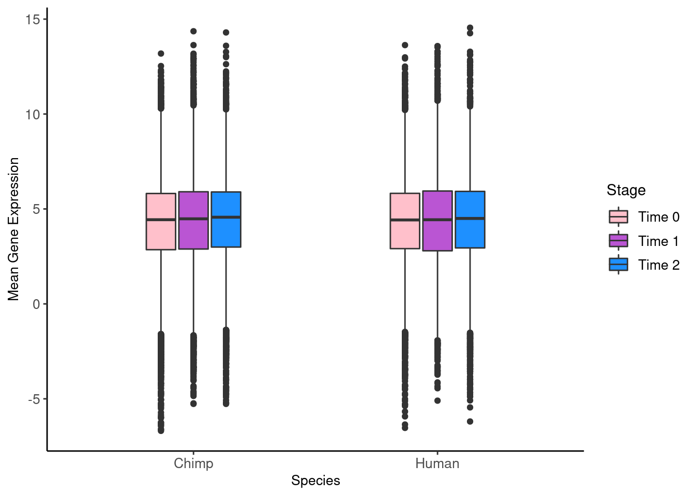
| Version | Author | Date |
|---|---|---|
| e1794ee | Genevieve Housman | 2021-08-10 |
t.test(HC.mean$Human.Time0,HC.mean$Human.Time1) #p=0.4101
Welch Two Sample t-test
data: HC.mean$Human.Time0 and HC.mean$Human.Time1
t = -0.82378, df = 23139, p-value = 0.4101
alternative hypothesis: true difference in means is not equal to 0
95 percent confidence interval:
-0.08731839 0.03564096
sample estimates:
mean of x mean of y
4.341204 4.367043 t.test(HC.mean$Human.Time1,HC.mean$Human.Time2) #p=0.8676
Welch Two Sample t-test
data: HC.mean$Human.Time1 and HC.mean$Human.Time2
t = -0.16668, df = 23155, p-value = 0.8676
alternative hypothesis: true difference in means is not equal to 0
95 percent confidence interval:
-0.06741557 0.05684850
sample estimates:
mean of x mean of y
4.367043 4.372327 t.test(HC.mean$Chimp.Time0,HC.mean$Chimp.Time1) #p=0.02706
Welch Two Sample t-test
data: HC.mean$Chimp.Time0 and HC.mean$Chimp.Time1
t = -2.2109, df = 23146, p-value = 0.02706
alternative hypothesis: true difference in means is not equal to 0
95 percent confidence interval:
-0.133507893 -0.008027503
sample estimates:
mean of x mean of y
4.281600 4.352368 t.test(HC.mean$Chimp.Time1,HC.mean$Chimp.Time2) #p=0.9422
Welch Two Sample t-test
data: HC.mean$Chimp.Time1 and HC.mean$Chimp.Time2
t = -0.072513, df = 23152, p-value = 0.9422
alternative hypothesis: true difference in means is not equal to 0
95 percent confidence interval:
-0.06396384 0.05939996
sample estimates:
mean of x mean of y
4.352368 4.354650 # Calculate log2cpm variances within species
HC.var <- data.frame(matrix(nrow=dim(tmm)[1],ncol=0))
HC.var["gene"] <- rownames(tmm)
HC.var["Human.Time0"] <- as.data.frame(apply(tmm[,which(groupFactor=="Human.Time0")],1, var))
HC.var["Human.Time1"] <- as.data.frame(apply(tmm[,which(groupFactor=="Human.Time1")],1, var))
HC.var["Human.Time2"] <- as.data.frame(apply(tmm[,which(groupFactor=="Human.Time2")],1, var))
HC.var["Chimp.Time0"] <- as.data.frame(apply(tmm[,which(groupFactor=="Chimp.Time0")],1, var))
HC.var["Chimp.Time1"] <- as.data.frame(apply(tmm[,which(groupFactor=="Chimp.Time1")],1, var))
HC.var["Chimp.Time2"] <- as.data.frame(apply(tmm[,which(groupFactor=="Chimp.Time2")],1, var))
HC.var.melt <- melt(HC.var,id.vars="gene",measure.vars=c("Human.Time0","Human.Time1","Human.Time2","Chimp.Time0","Chimp.Time1","Chimp.Time2"))
HC.var.melt$species <- sapply(HC.var.melt$variable,function(x)str_split(x,"[.]")[[1]][1])
HC.var.melt$stage <- sapply(HC.var.melt$variable,function(x)str_split(x,"[.]")[[1]][2])
ggplot(HC.var.melt, aes(x=species, y=log2(value), fill=stage)) +
geom_boxplot(width=0.8, outlier.shape=NA) +
xlab("Species") +
ylab('Log2 Variance in Gene Expression') +
ylim(c(-10,5)) +
scale_fill_manual(name="Stage", labels=c("Time 0","Time 1","Time 2"), values=c("pink","mediumorchid","dodgerblue")) +
theme_classic() +
theme(axis.text=element_text(size=12), axis.title=element_text(size=12), legend.text=element_text(size=12))Warning: Removed 31 rows containing non-finite values (stat_boxplot).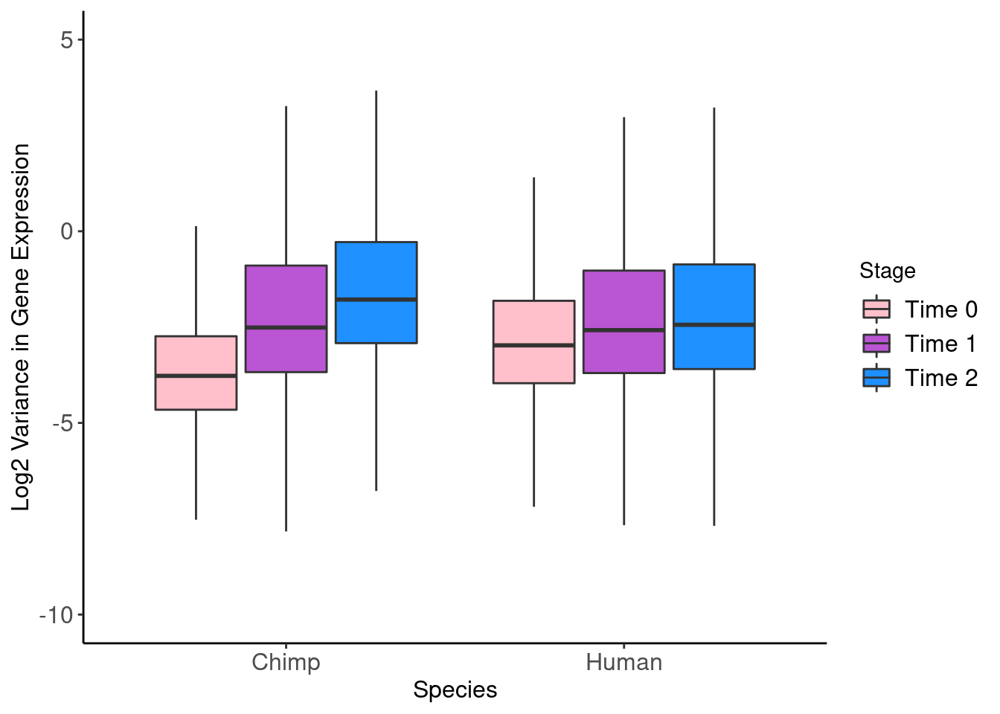
| Version | Author | Date |
|---|---|---|
| e1794ee | Genevieve Housman | 2021-08-10 |
t.test(HC.var$Human.Time0,HC.var$Human.Time1) #p<2.2e-16
Welch Two Sample t-test
data: HC.var$Human.Time0 and HC.var$Human.Time1
t = -19.726, df = 16555, p-value < 2.2e-16
alternative hypothesis: true difference in means is not equal to 0
95 percent confidence interval:
-0.4249450 -0.3481284
sample estimates:
mean of x mean of y
0.3356472 0.7221840 t.test(HC.var$Human.Time1,HC.var$Human.Time2) #p=1.4e-13
Welch Two Sample t-test
data: HC.var$Human.Time1 and HC.var$Human.Time2
t = -7.3991, df = 21431, p-value = 1.422e-13
alternative hypothesis: true difference in means is not equal to 0
95 percent confidence interval:
-0.2767713 -0.1608435
sample estimates:
mean of x mean of y
0.7221840 0.9409914 t.test(HC.var$Chimp.Time0,HC.var$Chimp.Time1) #p<2.2e-16
Welch Two Sample t-test
data: HC.var$Chimp.Time0 and HC.var$Chimp.Time1
t = -29.972, df = 12955, p-value < 2.2e-16
alternative hypothesis: true difference in means is not equal to 0
95 percent confidence interval:
-0.7375330 -0.6469856
sample estimates:
mean of x mean of y
0.1769205 0.8691798 t.test(HC.var$Chimp.Time1,HC.var$Chimp.Time2) #p<2.2e-16
Welch Two Sample t-test
data: HC.var$Chimp.Time1 and HC.var$Chimp.Time2
t = -9.8419, df = 22297, p-value < 2.2e-16
alternative hypothesis: true difference in means is not equal to 0
95 percent confidence interval:
-0.4177135 -0.2789663
sample estimates:
mean of x mean of y
0.8691798 1.2175197 # Compile log2 normalized gene expression data
#make count matrix and metadata for edgeR object - pseudobulk
cell.subset <- c("iPSC.c1","iPSC.c2","iPSC.c3","MSC.c1","Osteogenic.c1","Osteogenic.c2")
counts <- c()
metadata <- c()
labels <- c()
for(j in cell.subset) {
dataSub <- subset(data,subset=Cluster0.05==j)
for (i in unique(dataSub@meta.data$Individual.Replicate)) {
x.lab <- paste0(i,"_",j)
w <- which(dataSub@meta.data$Individual.Replicate==i)
if (length(w)>0) {
x.spp <- dataSub@meta.data$Species[w][1]
x.col <- dataSub@meta.data$Collection[w][1]
x.ind <- dataSub@meta.data$Individual[w][1]
x.rep <- dataSub@meta.data$Replicate[w][1]
x.idr <- dataSub@meta.data$Individual.Replicate[w][1]
x.clt <- dataSub@meta.data$Cluster0.05[w][1]
if (length(w)==1) {
x.cnt <- dataSub@assays$RNA@counts[,w]
} else {
x.cnt <- Matrix::rowSums(dataSub@assays$RNA@counts[,w])
}
counts <- cbind(counts, x.cnt)
metadata <- rbind(metadata, c(x.lab, x.spp, x.col, x.ind, x.rep, x.idr, x.clt))
labels <- c(labels, x.lab)
}
}
}
colnames(counts) <- labels
rownames(metadata) <- labels
colnames(metadata) <- c("Sample","Species","Collection","Individual","Replicate","Individual.Replicate","Cluster")
metadata <- as.data.frame(metadata)
#remove mitochodrial and ribosomal genes
counts <- counts[which(rownames(counts) %in% genes.no.mito.ribo),]
#make edgeR object
dge <- DGEList(counts)
meta_dge <- dge$samples[,c("lib.size","norm.factors")]
meta_dge <- cbind(meta_dge, metadata)
dge$samples <- meta_dge
rm(counts,metadata,meta_dge)
#filter genes
keep <- rowMeans(edgeR::cpm(dge,log=TRUE,prior.count=0.25))>0
dge$counts <- dge$counts[keep,]
#normalize data
dge <- calcNormFactors(dge, method="TMM")
#log2 transformed cpm
tmm <- edgeR::cpm(dge,normalized.lib.sizes=TRUE,log=TRUE,prior.count=0.25)
# Compile group labels of each species
groupFactor <- factor(paste(dge$samples$Species,dge$samples$Cluster,sep="_"),
levels=c("Human_iPSC.c1","Human_iPSC.c2","Human_iPSC.c3","Human_MSC.c1","Human_Osteogenic.c1","Human_Osteogenic.c2",
"Chimp_iPSC.c1","Chimp_iPSC.c2","Chimp_iPSC.c3","Chimp_MSC.c1","Chimp_Osteogenic.c1","Chimp_Osteogenic.c2"))
# Calculate log2cpm means within species
HC.mean <- data.frame(matrix(nrow=dim(tmm)[1],ncol=0))
HC.mean["gene"] <- rownames(tmm)
HC.mean["Human_iPSC.c1"] <- as.data.frame(apply(tmm[,which(groupFactor=="Human_iPSC.c1")],1, mean))
HC.mean["Human_iPSC.c2"] <- as.data.frame(apply(tmm[,which(groupFactor=="Human_iPSC.c2")],1, mean))
HC.mean["Human_iPSC.c3"] <- as.data.frame(apply(tmm[,which(groupFactor=="Human_iPSC.c3")],1, mean))
HC.mean["Human_MSC.c1"] <- as.data.frame(apply(tmm[,which(groupFactor=="Human_MSC.c1")],1, mean))
HC.mean["Human_Osteogenic.c1"] <- as.data.frame(apply(tmm[,which(groupFactor=="Human_Osteogenic.c1")],1, mean))
HC.mean["Human_Osteogenic.c2"] <- as.data.frame(apply(tmm[,which(groupFactor=="Human_Osteogenic.c2")],1, mean))
HC.mean["Chimp_iPSC.c1"] <- as.data.frame(apply(tmm[,which(groupFactor=="Chimp_iPSC.c1")],1, mean))
HC.mean["Chimp_iPSC.c2"] <- as.data.frame(apply(tmm[,which(groupFactor=="Chimp_iPSC.c2")],1, mean))
HC.mean["Chimp_iPSC.c3"] <- as.data.frame(apply(tmm[,which(groupFactor=="Chimp_iPSC.c3")],1, mean))
HC.mean["Chimp_MSC.c1"] <- as.data.frame(apply(tmm[,which(groupFactor=="Chimp_MSC.c1")],1, mean))
HC.mean["Chimp_Osteogenic.c1"] <- as.data.frame(apply(tmm[,which(groupFactor=="Chimp_Osteogenic.c1")],1, mean))
HC.mean["Chimp_Osteogenic.c2"] <- as.data.frame(apply(tmm[,which(groupFactor=="Chimp_Osteogenic.c2")],1, mean))
HC.mean.melt <- melt(HC.mean,
id.vars="gene",
measure.vars=c("Human_iPSC.c1","Human_iPSC.c2","Human_iPSC.c3","Human_MSC.c1","Human_Osteogenic.c1","Human_Osteogenic.c2",
"Chimp_iPSC.c1","Chimp_iPSC.c2","Chimp_iPSC.c3","Chimp_MSC.c1","Chimp_Osteogenic.c1","Chimp_Osteogenic.c2"))
HC.mean.melt$species <- sapply(HC.mean.melt$variable,function(x)str_split(x,"_")[[1]][1])
HC.mean.melt$cluster <- sapply(HC.mean.melt$variable,function(x)str_split(x,"_")[[1]][2])
ggplot(HC.mean.melt, aes(x=species, y=value, fill=cluster)) +
geom_boxplot(width=0.8) +
xlab("Species") +
ylab('log2 mean gene expression') +
scale_fill_manual(name="Cluster",
labels=c("iPSC.c1","iPSC.c2","iPSC.c3","MSC.c1","Osteogenic.c1","Osteogenic.c2"),
values=c("pink","pink3","pink4","mediumorchid","dodgerblue","dodgerblue4")) +
theme_classic() +
theme(axis.text=element_text(size=10), axis.title=element_text(size=10), legend.text=element_text(size=10))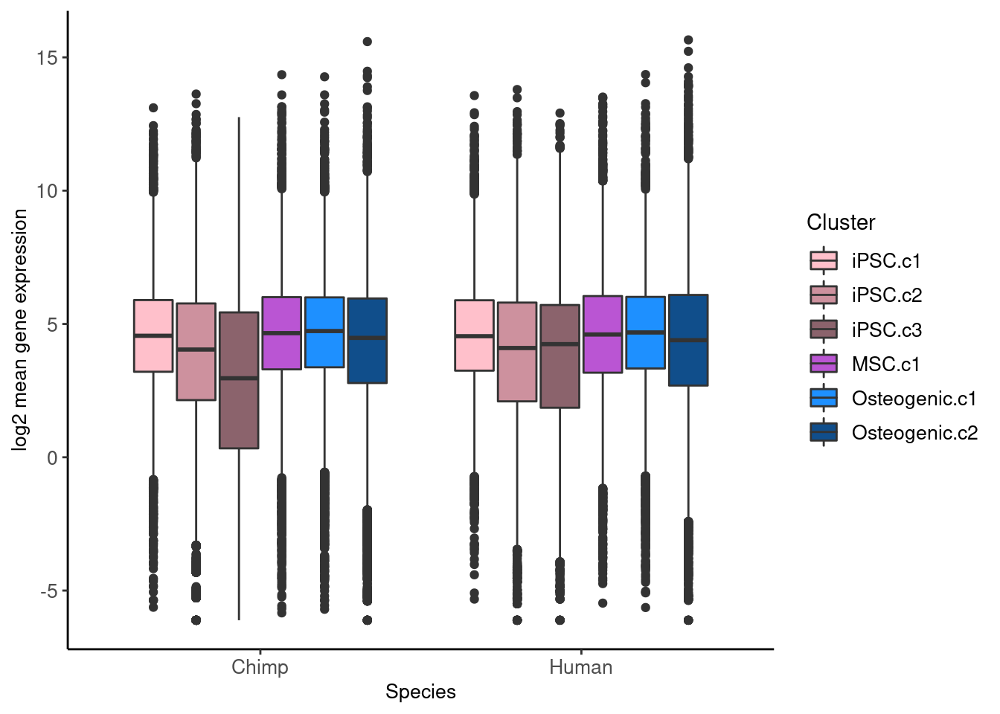
| Version | Author | Date |
|---|---|---|
| e1794ee | Genevieve Housman | 2021-08-10 |
ggplot(HC.mean.melt %>% filter(cluster %in% c("iPSC.c1","MSC.c1","Osteogenic.c1")), aes(x=species, y=value, fill=cluster)) +
geom_boxplot(width=0.4) +
xlab("Species") +
ylab('log2 mean gene expression') +
scale_fill_manual(name="Cluster",
labels=c("iPSC.c1","MSC.c1","Osteogenic.c1"),
values=c("pink","mediumorchid","dodgerblue")) +
theme_classic() +
theme(axis.text=element_text(size=10), axis.title=element_text(size=10), legend.text=element_text(size=10))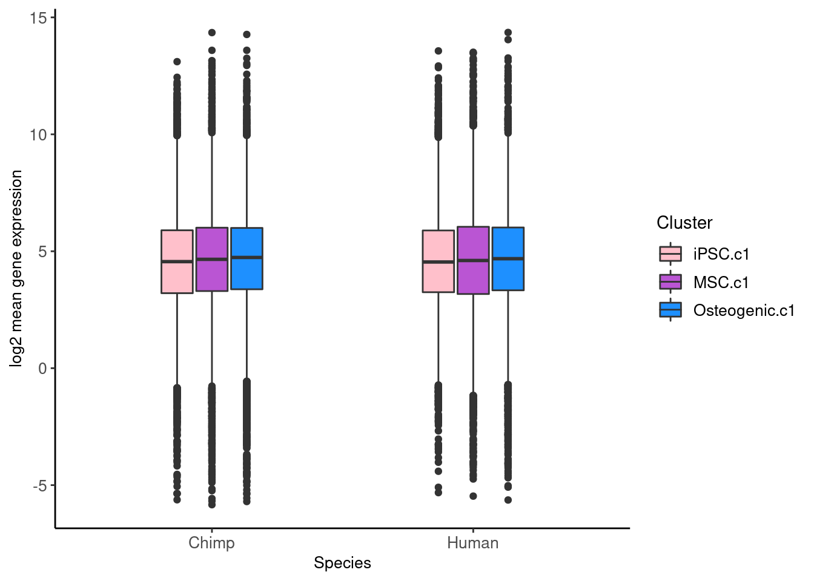
| Version | Author | Date |
|---|---|---|
| e1794ee | Genevieve Housman | 2021-08-10 |
t.test(HC.mean$Human_iPSC.c1,HC.mean$Human_MSC.c1) #p=0.8279
Welch Two Sample t-test
data: HC.mean$Human_iPSC.c1 and HC.mean$Human_MSC.c1
t = -0.21742, df = 21345, p-value = 0.8279
alternative hypothesis: true difference in means is not equal to 0
95 percent confidence interval:
-0.06527185 0.05223697
sample estimates:
mean of x mean of y
4.590393 4.596911 t.test(HC.mean$Human_MSC.c1,HC.mean$Human_Osteogenic.c1) #p=0.537
Welch Two Sample t-test
data: HC.mean$Human_MSC.c1 and HC.mean$Human_Osteogenic.c1
t = -0.61733, df = 21470, p-value = 0.537
alternative hypothesis: true difference in means is not equal to 0
95 percent confidence interval:
-0.07937701 0.04135274
sample estimates:
mean of x mean of y
4.596911 4.615923 t.test(HC.mean$Chimp_iPSC.c1,HC.mean$Chimp_MSC.c1) #p=0.1539
Welch Two Sample t-test
data: HC.mean$Chimp_iPSC.c1 and HC.mean$Chimp_MSC.c1
t = -1.426, df = 21448, p-value = 0.1539
alternative hypothesis: true difference in means is not equal to 0
95 percent confidence interval:
-0.10249979 0.01616574
sample estimates:
mean of x mean of y
4.559411 4.602578 t.test(HC.mean$Chimp_MSC.c1,HC.mean$Chimp_Osteogenic.c1) #p=0.5797
Welch Two Sample t-test
data: HC.mean$Chimp_MSC.c1 and HC.mean$Chimp_Osteogenic.c1
t = 0.55387, df = 21482, p-value = 0.5797
alternative hypothesis: true difference in means is not equal to 0
95 percent confidence interval:
-0.04338882 0.07756885
sample estimates:
mean of x mean of y
4.602578 4.585488 # Calculate log2cpm variances within species
HC.var <- data.frame(matrix(nrow=dim(tmm)[1],ncol=0))
HC.var["gene"] <- rownames(tmm)
HC.var["Human_iPSC.c1"] <- as.data.frame(apply(tmm[,which(groupFactor=="Human_iPSC.c1")],1, var))
HC.var["Human_iPSC.c2"] <- as.data.frame(apply(tmm[,which(groupFactor=="Human_iPSC.c2")],1, var))
HC.var["Human_iPSC.c3"] <- as.data.frame(apply(tmm[,which(groupFactor=="Human_iPSC.c3")],1, var))
HC.var["Human_MSC.c1"] <- as.data.frame(apply(tmm[,which(groupFactor=="Human_MSC.c1")],1, var))
HC.var["Human_Osteogenic.c1"] <- as.data.frame(apply(tmm[,which(groupFactor=="Human_Osteogenic.c1")],1, var))
HC.var["Human_Osteogenic.c2"] <- as.data.frame(apply(tmm[,which(groupFactor=="Human_Osteogenic.c2")],1, var))
HC.var["Chimp_iPSC.c1"] <- as.data.frame(apply(tmm[,which(groupFactor=="Chimp_iPSC.c1")],1, var))
HC.var["Chimp_iPSC.c2"] <- as.data.frame(apply(tmm[,which(groupFactor=="Chimp_iPSC.c2")],1, var))
HC.var["Chimp_iPSC.c3"] <- as.data.frame(apply(tmm[,which(groupFactor=="Chimp_iPSC.c3")],1, var))
HC.var["Chimp_MSC.c1"] <- as.data.frame(apply(tmm[,which(groupFactor=="Chimp_MSC.c1")],1, var))
HC.var["Chimp_Osteogenic.c1"] <- as.data.frame(apply(tmm[,which(groupFactor=="Chimp_Osteogenic.c1")],1, var))
HC.var["Chimp_Osteogenic.c2"] <- as.data.frame(apply(tmm[,which(groupFactor=="Chimp_Osteogenic.c2")],1, var))
HC.var.melt <- melt(HC.var,
id.vars="gene",
measure.vars=c("Human_iPSC.c1","Human_iPSC.c2","Human_iPSC.c3","Human_MSC.c1","Human_Osteogenic.c1","Human_Osteogenic.c2",
"Chimp_iPSC.c1","Chimp_iPSC.c2","Chimp_iPSC.c3","Chimp_MSC.c1","Chimp_Osteogenic.c1","Chimp_Osteogenic.c2"))
HC.var.melt$species <- sapply(HC.var.melt$variable,function(x)str_split(x,"_")[[1]][1])
HC.var.melt$cluster <- sapply(HC.var.melt$variable,function(x)str_split(x,"_")[[1]][2])
ggplot(HC.var.melt, aes(x=species, y=log2(value), fill=cluster)) +
geom_boxplot(width=0.4) +
xlab("Species") +
ylab('log2 variance in gene expression') +
scale_fill_manual(name="Cluster",
labels=c("iPSC.c1","iPSC.c2","iPSC.c3","MSC.c1","Osteogenic.c1","Osteogenic.c2"),
values=c("pink","pink3","pink4","mediumorchid","dodgerblue","dodgerblue4")) +
theme_classic() +
theme(axis.text=element_text(size=10), axis.title=element_text(size=10), legend.text=element_text(size=10))Warning: Removed 191 rows containing non-finite values (stat_boxplot).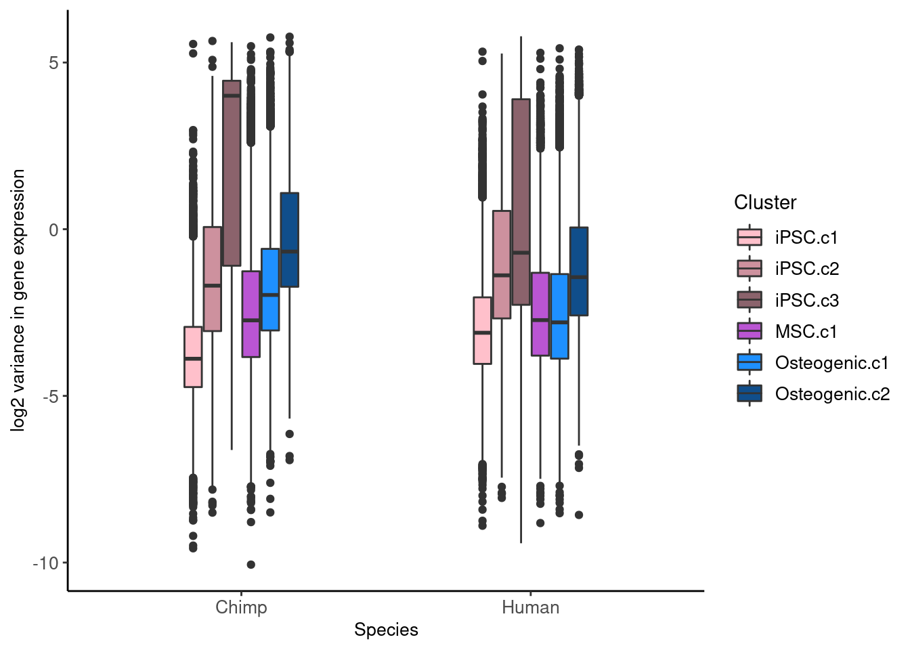
| Version | Author | Date |
|---|---|---|
| e1794ee | Genevieve Housman | 2021-08-10 |
ggplot(HC.var.melt %>% filter(cluster %in% c("iPSC.c1","MSC.c1","Osteogenic.c1")), aes(x=species, y=log2(value), fill=cluster)) +
geom_boxplot(width=0.4) +
xlab("Species") +
ylab('log2 variance in gene expression') +
scale_fill_manual(name="Cluster",
labels=c("iPSC.c1","MSC.c1","Osteogenic.c1"),
values=c("pink","mediumorchid","dodgerblue")) +
theme_classic() +
theme(axis.text=element_text(size=10), axis.title=element_text(size=10), legend.text=element_text(size=10))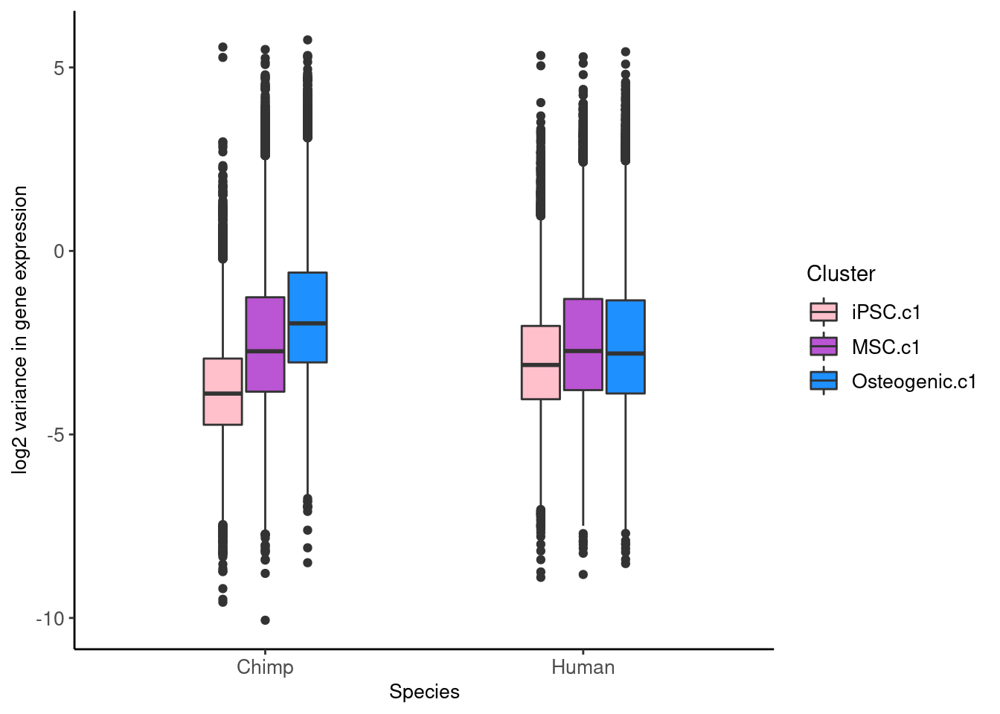
| Version | Author | Date |
|---|---|---|
| e1794ee | Genevieve Housman | 2021-08-10 |
t.test(HC.var$Human_iPSC.c1,HC.var$Human_MSC.c1) #p<2.2e-16
Welch Two Sample t-test
data: HC.var$Human_iPSC.c1 and HC.var$Human_MSC.c1
t = -19.212, df = 16190, p-value < 2.2e-16
alternative hypothesis: true difference in means is not equal to 0
95 percent confidence interval:
-0.3480761 -0.2836279
sample estimates:
mean of x mean of y
0.2782269 0.5940789 t.test(HC.var$Human_MSC.c1,HC.var$Human_Osteogenic.c1) #p=0.3952
Welch Two Sample t-test
data: HC.var$Human_MSC.c1 and HC.var$Human_Osteogenic.c1
t = -0.85027, df = 21232, p-value = 0.3952
alternative hypothesis: true difference in means is not equal to 0
95 percent confidence interval:
-0.06134636 0.02422559
sample estimates:
mean of x mean of y
0.5940789 0.6126393 t.test(HC.var$Chimp_iPSC.c1,HC.var$Chimp_MSC.c1) #p<2.2e-16
Welch Two Sample t-test
data: HC.var$Chimp_iPSC.c1 and HC.var$Chimp_MSC.c1
t = -27.179, df = 13293, p-value < 2.2e-16
alternative hypothesis: true difference in means is not equal to 0
95 percent confidence interval:
-0.5631779 -0.4874099
sample estimates:
mean of x mean of y
0.1460980 0.6713919 t.test(HC.var$Chimp_MSC.c1,HC.var$Chimp_Osteogenic.c1) #p<2.2e-16
Welch Two Sample t-test
data: HC.var$Chimp_MSC.c1 and HC.var$Chimp_Osteogenic.c1
t = -10.536, df = 20193, p-value < 2.2e-16
alternative hypothesis: true difference in means is not equal to 0
95 percent confidence interval:
-0.3732340 -0.2561484
sample estimates:
mean of x mean of y
0.6713919 0.9860831 # Compile log2 normalized gene expression data
#make count matrix and metadata for edgeR object - pseudobulk
cell.subset <- c("iPSC","MSC","Osteogenic","other")
counts <- c()
metadata <- c()
labels <- c()
for(j in cell.subset) {
dataSub <- subset(data,subset=AdHoc.Assign.thresh0==j)
for (i in unique(dataSub@meta.data$Individual.Replicate)) {
x.lab <- paste0(i,"_",j)
w <- which(dataSub@meta.data$Individual.Replicate==i)
if (length(w)>0) {
x.spp <- dataSub@meta.data$Species[w][1]
x.col <- dataSub@meta.data$Collection[w][1]
x.ind <- dataSub@meta.data$Individual[w][1]
x.rep <- dataSub@meta.data$Replicate[w][1]
x.idr <- dataSub@meta.data$Individual.Replicate[w][1]
x.adh <- as.character(dataSub@meta.data$AdHoc.Assign.thresh0[w][1])
if (length(w)==1) {
x.cnt <- dataSub@assays$RNA@counts[,w]
} else {
x.cnt <- Matrix::rowSums(dataSub@assays$RNA@counts[,w])
}
counts <- cbind(counts, x.cnt)
metadata <- rbind(metadata, c(x.lab, x.spp, x.col, x.ind, x.rep, x.idr, x.adh))
labels <- c(labels, x.lab)
}
}
}
colnames(counts) <- labels
rownames(metadata) <- labels
colnames(metadata) <- c("Sample","Species","Collection","Individual","Replicate","Individual.Replicate","AdHoc")
metadata <- as.data.frame(metadata)
#remove mitochodrial and ribosomal genes
counts <- counts[which(rownames(counts) %in% genes.no.mito.ribo),]
#make edgeR object
dge <- DGEList(counts)
meta_dge <- dge$samples[,c("lib.size","norm.factors")]
meta_dge <- cbind(meta_dge, metadata)
dge$samples <- meta_dge
rm(counts,metadata,meta_dge)
#filter genes
keep <- rowMeans(edgeR::cpm(dge,log=TRUE,prior.count=0.25))>0
dge$counts <- dge$counts[keep,]
#normalize data
dge <- calcNormFactors(dge, method="TMM")
#log2 transformed cpm
tmm <- edgeR::cpm(dge,normalized.lib.sizes=TRUE,log=TRUE,prior.count=0.25)
# Compile group labels of each species
groupFactor <- factor(paste(dge$samples$Species,dge$samples$AdHoc,sep = "_"),
levels=c("Human_iPSC","Human_MSC","Human_Osteogenic","Human_other","Chimp_iPSC","Chimp_MSC","Chimp_Osteogenic","Chimp_other"))
# Calculate log2cpm means within species
HC.mean <- data.frame(matrix(nrow=dim(tmm)[1],ncol=0))
HC.mean["gene"] <- rownames(tmm)
HC.mean["Human_iPSC"] <- as.data.frame(apply(tmm[,which(groupFactor=="Human_iPSC")],1, mean))
HC.mean["Human_MSC"] <- as.data.frame(apply(tmm[,which(groupFactor=="Human_MSC")],1, mean))
HC.mean["Human_Osteogenic"] <- as.data.frame(apply(tmm[,which(groupFactor=="Human_Osteogenic")],1, mean))
HC.mean["Chimp_iPSC"] <- as.data.frame(apply(tmm[,which(groupFactor=="Chimp_iPSC")],1, mean))
HC.mean["Chimp_MSC"] <- as.data.frame(apply(tmm[,which(groupFactor=="Chimp_MSC")],1, mean))
HC.mean["Chimp_Osteogenic"] <- as.data.frame(apply(tmm[,which(groupFactor=="Chimp_Osteogenic")],1, mean))
HC.mean.melt <- melt(HC.mean,id.vars="gene",measure.vars=c("Human_iPSC","Human_MSC","Human_Osteogenic","Chimp_iPSC","Chimp_MSC","Chimp_Osteogenic"))
HC.mean.melt$species <- sapply(HC.mean.melt$variable,function(x)str_split(x,"_")[[1]][1])
HC.mean.melt$adhoc <- sapply(HC.mean.melt$variable,function(x)str_split(x,"_")[[1]][2])
ggplot(HC.mean.melt, aes(x=species, y=value, fill=adhoc)) +
geom_boxplot(width=0.4) +
xlab("Species") +
ylab('log2 mean gene expression') +
scale_fill_manual(name="Ad Hoc", labels=c("iPSC","MSC","Osteogenic"), values=c("pink","mediumorchid","dodgerblue")) +
theme_classic() +
theme(axis.text=element_text(size=10), axis.title=element_text(size=10), legend.text=element_text(size=10))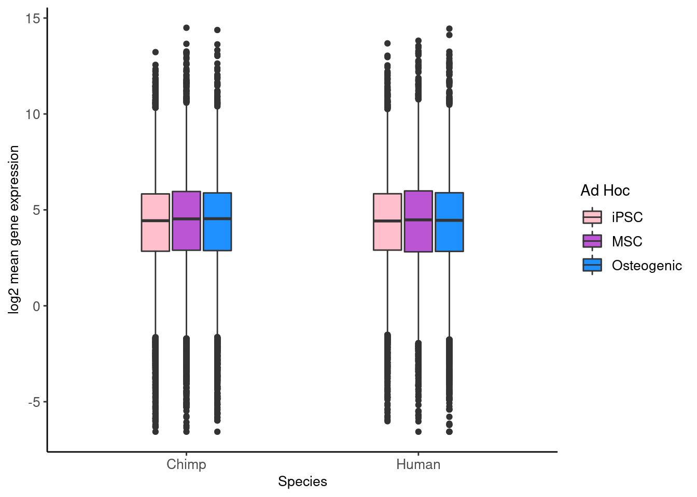
| Version | Author | Date |
|---|---|---|
| e1794ee | Genevieve Housman | 2021-08-10 |
t.test(HC.mean$Human_iPSC,HC.mean$Human_MSC) #p=0.5387
Welch Two Sample t-test
data: HC.mean$Human_iPSC and HC.mean$Human_MSC
t = -0.61473, df = 23585, p-value = 0.5387
alternative hypothesis: true difference in means is not equal to 0
95 percent confidence interval:
-0.08135831 0.04251005
sample estimates:
mean of x mean of y
4.345648 4.365072 t.test(HC.mean$Human_MSC,HC.mean$Human_Osteogenic) #p=0.003242
Welch Two Sample t-test
data: HC.mean$Human_MSC and HC.mean$Human_Osteogenic
t = 2.9441, df = 23643, p-value = 0.003242
alternative hypothesis: true difference in means is not equal to 0
95 percent confidence interval:
0.03205075 0.15973692
sample estimates:
mean of x mean of y
4.365072 4.269178 t.test(HC.mean$Chimp_iPSC,HC.mean$Chimp_MSC) #p=0.07194
Welch Two Sample t-test
data: HC.mean$Chimp_iPSC and HC.mean$Chimp_MSC
t = -1.7996, df = 23637, p-value = 0.07194
alternative hypothesis: true difference in means is not equal to 0
95 percent confidence interval:
-0.122088890 0.005212236
sample estimates:
mean of x mean of y
4.284175 4.342614 t.test(HC.mean$Chimp_MSC,HC.mean$Chimp_Osteogenic) #p=0.001382
Welch Two Sample t-test
data: HC.mean$Chimp_MSC and HC.mean$Chimp_Osteogenic
t = 3.1988, df = 23642, p-value = 0.001382
alternative hypothesis: true difference in means is not equal to 0
95 percent confidence interval:
0.04089803 0.17032919
sample estimates:
mean of x mean of y
4.342614 4.237000 # Calculate log2cpm variances within species
HC.var <- data.frame(matrix(nrow=dim(tmm)[1],ncol=0))
HC.var["gene"] <- rownames(tmm)
HC.var["Human_iPSC"] <- as.data.frame(apply(tmm[,which(groupFactor=="Human_iPSC")],1, var))
HC.var["Human_MSC"] <- as.data.frame(apply(tmm[,which(groupFactor=="Human_MSC")],1, var))
HC.var["Human_Osteogenic"] <- as.data.frame(apply(tmm[,which(groupFactor=="Human_Osteogenic")],1, var))
HC.var["Chimp_iPSC"] <- as.data.frame(apply(tmm[,which(groupFactor=="Chimp_iPSC")],1, var))
HC.var["Chimp_MSC"] <- as.data.frame(apply(tmm[,which(groupFactor=="Chimp_MSC")],1, var))
HC.var["Chimp_Osteogenic"] <- as.data.frame(apply(tmm[,which(groupFactor=="Chimp_Osteogenic")],1, var))
HC.var.melt <- melt(HC.var,id.vars="gene",measure.vars=c("Human_iPSC","Human_MSC","Human_Osteogenic","Chimp_iPSC","Chimp_MSC","Chimp_Osteogenic"))
HC.var.melt$species <- sapply(HC.var.melt$variable,function(x)str_split(x,"_")[[1]][1])
HC.var.melt$adhoc <- sapply(HC.var.melt$variable,function(x)str_split(x,"_")[[1]][2])
ggplot(HC.var.melt, aes(x=species, y=log2(value), fill=adhoc)) +
geom_boxplot(width=0.8, outlier.shape=NA) +
xlab("Species") +
ylab('log2 variance in gene expression') +
scale_fill_manual(name="Ad Hoc", labels=c("iPSC","MSC","Osteogenic"), values=c("pink","mediumorchid","dodgerblue")) +
theme_classic() +
theme(axis.text=element_text(size=10), axis.title=element_text(size=10), legend.text=element_text(size=10)) +
ylim(-10,5)Warning: Removed 43 rows containing non-finite values (stat_boxplot).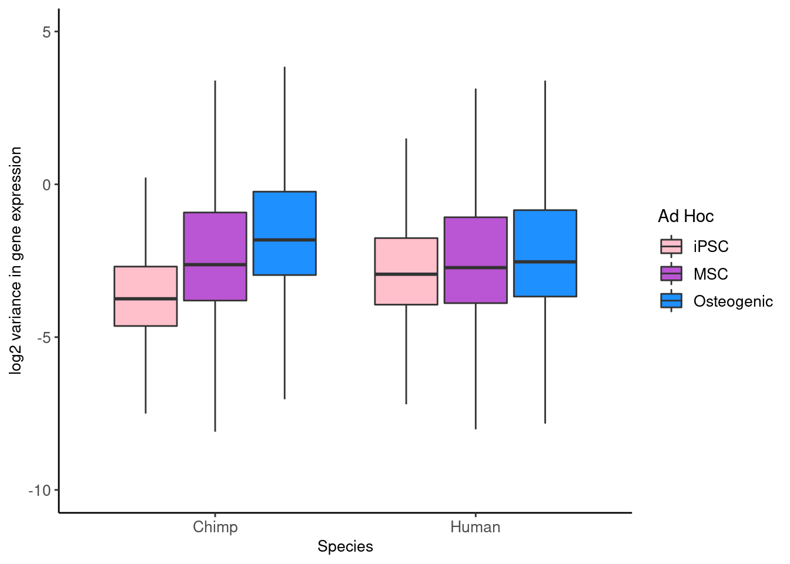
| Version | Author | Date |
|---|---|---|
| e1794ee | Genevieve Housman | 2021-08-10 |
t.test(HC.var$Human_iPSC,HC.var$Human_MSC) #p<2.2e-16
Welch Two Sample t-test
data: HC.var$Human_iPSC and HC.var$Human_MSC
t = -18.801, df = 17347, p-value < 2.2e-16
alternative hypothesis: true difference in means is not equal to 0
95 percent confidence interval:
-0.4036140 -0.3274026
sample estimates:
mean of x mean of y
0.3464545 0.7119628 t.test(HC.var$Human_MSC,HC.var$Human_Osteogenic) #p<2.2e-16
Welch Two Sample t-test
data: HC.var$Human_MSC and HC.var$Human_Osteogenic
t = -9.2531, df = 21620, p-value < 2.2e-16
alternative hypothesis: true difference in means is not equal to 0
95 percent confidence interval:
-0.3312877 -0.2154687
sample estimates:
mean of x mean of y
0.7119628 0.9853410 t.test(HC.var$Chimp_iPSC,HC.var$Chimp_MSC) #p<2.2e-16
Welch Two Sample t-test
data: HC.var$Chimp_iPSC and HC.var$Chimp_MSC
t = -29.194, df = 14319, p-value < 2.2e-16
alternative hypothesis: true difference in means is not equal to 0
95 percent confidence interval:
-0.7227418 -0.6317947
sample estimates:
mean of x mean of y
0.1933120 0.8705803 t.test(HC.var$Chimp_MSC,HC.var$Chimp_Osteogenic) #p<2.2e-16
Welch Two Sample t-test
data: HC.var$Chimp_MSC and HC.var$Chimp_Osteogenic
t = -11.603, df = 22057, p-value < 2.2e-16
alternative hypothesis: true difference in means is not equal to 0
95 percent confidence interval:
-0.4945164 -0.3515873
sample estimates:
mean of x mean of y
0.8705803 1.2936321 # Compile log2 normalized gene expression data
#make count matrix and metadata for edgeR object - pseudobulk
cell.subset <- c("Osteogenic.c1","Osteogenic.c2","Osteogenic.c3","Osteogenic.c4")
counts <- c()
metadata <- c()
labels <- c()
for(j in cell.subset) {
dataSub <- subset(data,subset=Cluster0.50==j)
for (i in unique(dataSub@meta.data$Individual.Replicate)) {
x.lab <- paste0(i,"_",j)
w <- which(dataSub@meta.data$Individual.Replicate==i)
if (length(w)>0) {
x.spp <- dataSub@meta.data$Species[w][1]
x.col <- dataSub@meta.data$Collection[w][1]
x.ind <- dataSub@meta.data$Individual[w][1]
x.rep <- dataSub@meta.data$Replicate[w][1]
x.idr <- dataSub@meta.data$Individual.Replicate[w][1]
x.clt <- dataSub@meta.data$Cluster0.50[w][1]
if (length(w)==1) {
x.cnt <- dataSub@assays$RNA@counts[,w]
} else {
x.cnt <- Matrix::rowSums(dataSub@assays$RNA@counts[,w])
}
counts <- cbind(counts, x.cnt)
metadata <- rbind(metadata, c(x.lab, x.spp, x.col, x.ind, x.rep, x.idr, x.clt))
labels <- c(labels, x.lab)
}
}
}
colnames(counts) <- labels
rownames(metadata) <- labels
colnames(metadata) <- c("Sample","Species","Collection","Individual","Replicate","Individual.Replicate","Cluster")
metadata <- as.data.frame(metadata)
#remove mitochodrial and ribosomal genes
counts <- counts[which(rownames(counts) %in% genes.no.mito.ribo),]
#make edgeR object
dge <- DGEList(counts)
meta_dge <- dge$samples[,c("lib.size","norm.factors")]
meta_dge <- cbind(meta_dge, metadata)
dge$samples <- meta_dge
rm(counts,metadata,meta_dge)
#filter genes
keep <- rowMeans(edgeR::cpm(dge,log=TRUE,prior.count=0.25))>0
dge$counts <- dge$counts[keep,]
#normalize data
dge <- calcNormFactors(dge, method="TMM")
#log2 transformed cpm
tmm <- edgeR::cpm(dge,normalized.lib.sizes=TRUE,log=TRUE,prior.count=0.25)
# Compile group labels of each species
groupFactor <- factor(paste(dge$samples$Species,dge$samples$Cluster,sep="_"),
levels=c("Human_Osteogenic.c1","Human_Osteogenic.c2","Human_Osteogenic.c3","Human_Osteogenic.c4",
"Chimp_Osteogenic.c1","Chimp_Osteogenic.c2","Chimp_Osteogenic.c3","Chimp_Osteogenic.c4"))
# Calculate log2cpm means within species
HC.mean <- data.frame(matrix(nrow=dim(tmm)[1],ncol=0))
HC.mean["gene"] <- rownames(tmm)
HC.mean["Human_Osteogenic.c1"] <- as.data.frame(apply(tmm[,which(groupFactor=="Human_Osteogenic.c1")],1, mean))
HC.mean["Human_Osteogenic.c2"] <- as.data.frame(apply(tmm[,which(groupFactor=="Human_Osteogenic.c2")],1, mean))
HC.mean["Human_Osteogenic.c3"] <- as.data.frame(apply(tmm[,which(groupFactor=="Human_Osteogenic.c3")],1, mean))
HC.mean["Human_Osteogenic.c4"] <- as.data.frame(apply(tmm[,which(groupFactor=="Human_Osteogenic.c4")],1, mean))
HC.mean["Chimp_Osteogenic.c1"] <- as.data.frame(apply(tmm[,which(groupFactor=="Chimp_Osteogenic.c1")],1, mean))
HC.mean["Chimp_Osteogenic.c2"] <- as.data.frame(apply(tmm[,which(groupFactor=="Chimp_Osteogenic.c2")],1, mean))
HC.mean["Chimp_Osteogenic.c3"] <- as.data.frame(apply(tmm[,which(groupFactor=="Chimp_Osteogenic.c3")],1, mean))
HC.mean["Chimp_Osteogenic.c4"] <- as.data.frame(apply(tmm[,which(groupFactor=="Chimp_Osteogenic.c4")],1, mean))
HC.mean.melt <- melt(HC.mean,
id.vars="gene",
measure.vars=c("Human_Osteogenic.c1","Human_Osteogenic.c2","Human_Osteogenic.c3","Human_Osteogenic.c4",
"Chimp_Osteogenic.c1","Chimp_Osteogenic.c2","Chimp_Osteogenic.c3","Chimp_Osteogenic.c4"))
HC.mean.melt$species <- sapply(HC.mean.melt$variable,function(x)str_split(x,"_")[[1]][1])
HC.mean.melt$cluster <- sapply(HC.mean.melt$variable,function(x)str_split(x,"_")[[1]][2])
ggplot(HC.mean.melt, aes(x=species, y=value, fill=cluster)) +
geom_boxplot(width=0.4) +
xlab("Species") +
ylab('log2 mean gene expression') +
scale_fill_manual(name="Cluster",
labels=c("Osteogenic.c1","Osteogenic.c2","Osteogenic.c3","Osteogenic.c4"),
values=c("lightblue1","deepskyblue","dodgerblue2","dodgerblue4")) +
theme_classic() +
theme(axis.text=element_text(size=10), axis.title=element_text(size=10), legend.text=element_text(size=10))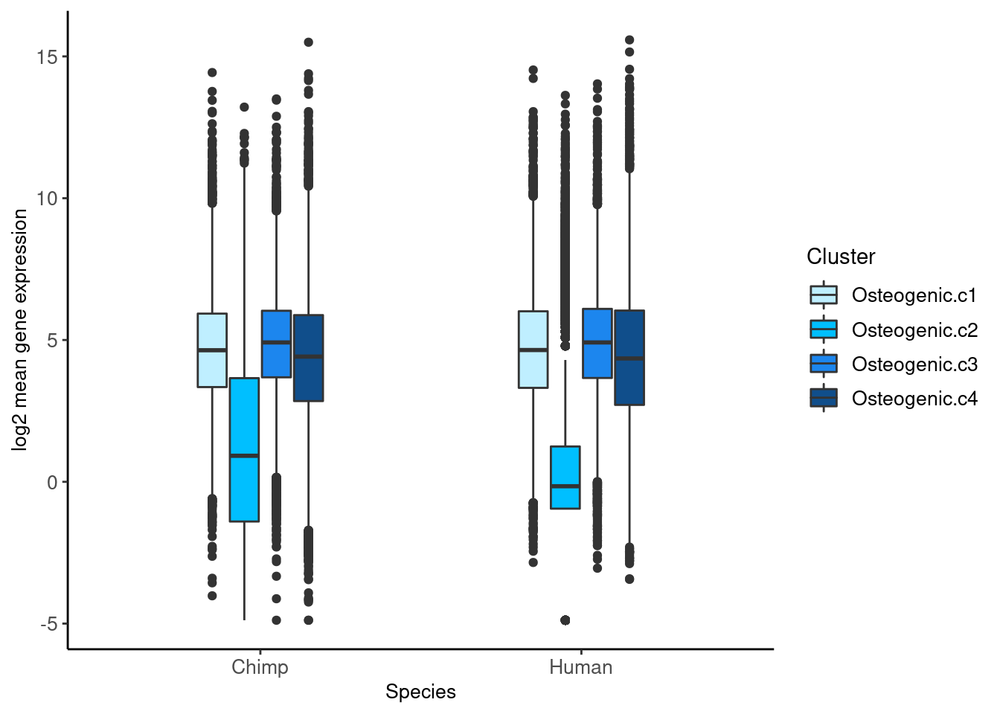
| Version | Author | Date |
|---|---|---|
| e1794ee | Genevieve Housman | 2021-08-10 |
ggplot(HC.mean.melt %>% filter(cluster %in% c("Osteogenic.c1","Osteogenic.c2","Osteogenic.c3","Osteogenic.c4")), aes(x=species, y=value, fill=cluster)) +
geom_boxplot(width=0.4) +
xlab("Species") +
ylab('log2 mean gene expression') +
scale_fill_manual(name="Cluster",
labels=c("Osteogenic.c1","Osteogenic.c2","Osteogenic.c3","Osteogenic.c4"),
values=c("lightblue1","deepskyblue","dodgerblue2","dodgerblue4")) +
theme_classic() +
theme(axis.text=element_text(size=10), axis.title=element_text(size=10), legend.text=element_text(size=10))
| Version | Author | Date |
|---|---|---|
| e1794ee | Genevieve Housman | 2021-08-10 |
t.test(HC.mean$Human_Osteogenic.c1,HC.mean$Human_Osteogenic.c2)
Welch Two Sample t-test
data: HC.mean$Human_Osteogenic.c1 and HC.mean$Human_Osteogenic.c2
t = 97.435, df = 16339, p-value < 2.2e-16
alternative hypothesis: true difference in means is not equal to 0
95 percent confidence interval:
4.039020 4.204864
sample estimates:
mean of x mean of y
4.692404 0.570462 t.test(HC.mean$Human_Osteogenic.c2,HC.mean$Human_Osteogenic.c3)
Welch Two Sample t-test
data: HC.mean$Human_Osteogenic.c2 and HC.mean$Human_Osteogenic.c3
t = -102.28, df = 15978, p-value < 2.2e-16
alternative hypothesis: true difference in means is not equal to 0
95 percent confidence interval:
-4.37330 -4.20883
sample estimates:
mean of x mean of y
0.570462 4.861527 t.test(HC.mean$Human_Osteogenic.c3,HC.mean$Human_Osteogenic.c4)
Welch Two Sample t-test
data: HC.mean$Human_Osteogenic.c3 and HC.mean$Human_Osteogenic.c4
t = 14.884, df = 20033, p-value < 2.2e-16
alternative hypothesis: true difference in means is not equal to 0
95 percent confidence interval:
0.4075659 0.5311923
sample estimates:
mean of x mean of y
4.861527 4.392148 t.test(HC.mean$Chimp_Osteogenic.c1,HC.mean$Chimp_Osteogenic.c2)
Welch Two Sample t-test
data: HC.mean$Chimp_Osteogenic.c1 and HC.mean$Chimp_Osteogenic.c2
t = 86.734, df = 16900, p-value < 2.2e-16
alternative hypothesis: true difference in means is not equal to 0
95 percent confidence interval:
3.321569 3.475168
sample estimates:
mean of x mean of y
4.652062 1.253694 t.test(HC.mean$Chimp_Osteogenic.c2,HC.mean$Chimp_Osteogenic.c3)
Welch Two Sample t-test
data: HC.mean$Chimp_Osteogenic.c2 and HC.mean$Chimp_Osteogenic.c3
t = -92.211, df = 16427, p-value < 2.2e-16
alternative hypothesis: true difference in means is not equal to 0
95 percent confidence interval:
-3.648568 -3.496684
sample estimates:
mean of x mean of y
1.253694 4.826320 t.test(HC.mean$Chimp_Osteogenic.c3,HC.mean$Chimp_Osteogenic.c4)
Welch Two Sample t-test
data: HC.mean$Chimp_Osteogenic.c3 and HC.mean$Chimp_Osteogenic.c4
t = 17.231, df = 20016, p-value < 2.2e-16
alternative hypothesis: true difference in means is not equal to 0
95 percent confidence interval:
0.4620796 0.5807028
sample estimates:
mean of x mean of y
4.826320 4.304928 # Calculate log2cpm variances within species
HC.var <- data.frame(matrix(nrow=dim(tmm)[1],ncol=0))
HC.var["gene"] <- rownames(tmm)
HC.var["Human_Osteogenic.c1"] <- as.data.frame(apply(tmm[,which(groupFactor=="Human_Osteogenic.c1")],1, var))
HC.var["Human_Osteogenic.c2"] <- as.data.frame(apply(tmm[,which(groupFactor=="Human_Osteogenic.c2")],1, var))
HC.var["Human_Osteogenic.c3"] <- as.data.frame(apply(tmm[,which(groupFactor=="Human_Osteogenic.c3")],1, var))
HC.var["Human_Osteogenic.c4"] <- as.data.frame(apply(tmm[,which(groupFactor=="Human_Osteogenic.c4")],1, var))
HC.var["Chimp_Osteogenic.c1"] <- as.data.frame(apply(tmm[,which(groupFactor=="Chimp_Osteogenic.c1")],1, var))
HC.var["Chimp_Osteogenic.c2"] <- as.data.frame(apply(tmm[,which(groupFactor=="Chimp_Osteogenic.c2")],1, var))
HC.var["Chimp_Osteogenic.c3"] <- as.data.frame(apply(tmm[,which(groupFactor=="Chimp_Osteogenic.c3")],1, var))
HC.var["Chimp_Osteogenic.c4"] <- as.data.frame(apply(tmm[,which(groupFactor=="Chimp_Osteogenic.c4")],1, var))
HC.var.melt <- melt(HC.var,
id.vars="gene",
measure.vars=c("Human_Osteogenic.c1","Human_Osteogenic.c2","Human_Osteogenic.c3","Human_Osteogenic.c4",
"Chimp_Osteogenic.c1","Chimp_Osteogenic.c2","Chimp_Osteogenic.c3","Chimp_Osteogenic.c4"))
HC.var.melt$species <- sapply(HC.var.melt$variable,function(x)str_split(x,"_")[[1]][1])
HC.var.melt$cluster <- sapply(HC.var.melt$variable,function(x)str_split(x,"_")[[1]][2])
ggplot(HC.var.melt, aes(x=species, y=log2(value), fill=cluster)) +
geom_boxplot(width=0.4) +
xlab("Species") +
ylab('log2 variance gene expression') +
scale_fill_manual(name="Cluster",
labels=c("Osteogenic.c1","Osteogenic.c2","Osteogenic.c3","Osteogenic.c4"),
values=c("lightblue1","deepskyblue","dodgerblue2","dodgerblue4")) +
theme_classic() +
theme(axis.text=element_text(size=10), axis.title=element_text(size=10), legend.text=element_text(size=10))Warning: Removed 1977 rows containing non-finite values (stat_boxplot).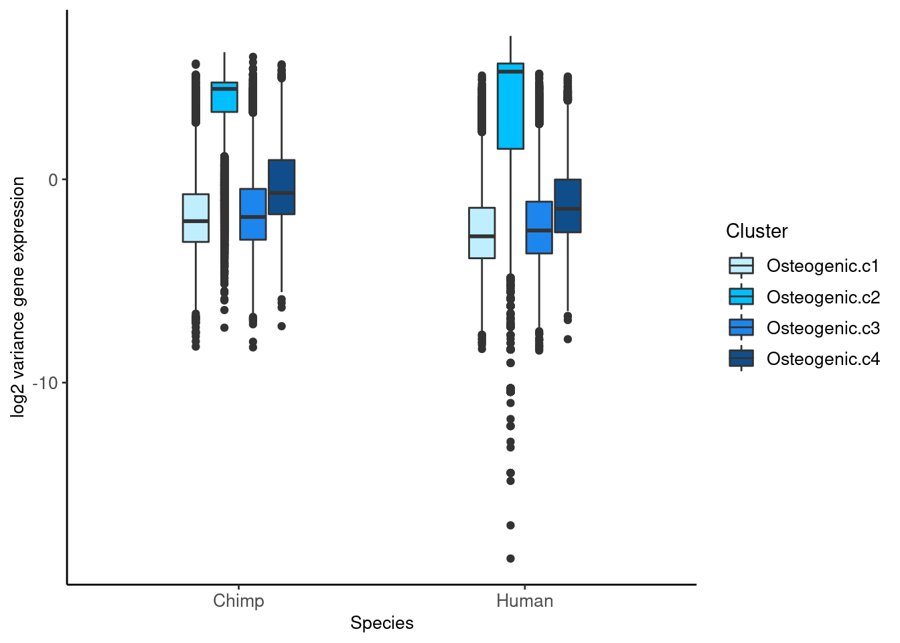
| Version | Author | Date |
|---|---|---|
| e1794ee | Genevieve Housman | 2021-08-10 |
ggplot(HC.var.melt %>% filter(cluster %in% c("Osteogenic.c1","Osteogenic.c2","Osteogenic.c3","Osteogenic.c4")), aes(x=species, y=log2(value), fill=cluster)) +
geom_boxplot(width=0.4) +
xlab("Species") +
ylab('log2 variance gene expression') +
scale_fill_manual(name="Cluster",
labels=c("Osteogenic.c1","Osteogenic.c2","Osteogenic.c3","Osteogenic.c4"),
values=c("lightblue1","deepskyblue","dodgerblue2","dodgerblue4")) +
theme_classic() +
theme(axis.text=element_text(size=10), axis.title=element_text(size=10), legend.text=element_text(size=10))Warning: Removed 1977 rows containing non-finite values (stat_boxplot).
| Version | Author | Date |
|---|---|---|
| e1794ee | Genevieve Housman | 2021-08-10 |
t.test(HC.var$Human_Osteogenic.c1,HC.var$Human_Osteogenic.c2)
Welch Two Sample t-test
data: HC.var$Human_Osteogenic.c1 and HC.var$Human_Osteogenic.c2
t = -111, df = 10792, p-value < 2.2e-16
alternative hypothesis: true difference in means is not equal to 0
95 percent confidence interval:
-27.31962 -26.37151
sample estimates:
mean of x mean of y
0.6448376 27.4904019 t.test(HC.var$Human_Osteogenic.c2,HC.var$Human_Osteogenic.c3)
Welch Two Sample t-test
data: HC.var$Human_Osteogenic.c2 and HC.var$Human_Osteogenic.c3
t = 109.77, df = 10885, p-value < 2.2e-16
alternative hypothesis: true difference in means is not equal to 0
95 percent confidence interval:
26.12821 27.07837
sample estimates:
mean of x mean of y
27.4904019 0.8871117 t.test(HC.var$Human_Osteogenic.c3,HC.var$Human_Osteogenic.c4)
Welch Two Sample t-test
data: HC.var$Human_Osteogenic.c3 and HC.var$Human_Osteogenic.c4
t = -18.302, df = 20025, p-value < 2.2e-16
alternative hypothesis: true difference in means is not equal to 0
95 percent confidence interval:
-0.8043289 -0.6487128
sample estimates:
mean of x mean of y
0.8871117 1.6136326 t.test(HC.var$Chimp_Osteogenic.c1,HC.var$Chimp_Osteogenic.c2)
Welch Two Sample t-test
data: HC.var$Chimp_Osteogenic.c1 and HC.var$Chimp_Osteogenic.c2
t = -159.85, df = 11775, p-value < 2.2e-16
alternative hypothesis: true difference in means is not equal to 0
95 percent confidence interval:
-18.20985 -17.76866
sample estimates:
mean of x mean of y
0.9532208 18.9424795 t.test(HC.var$Chimp_Osteogenic.c2,HC.var$Chimp_Osteogenic.c3)
Welch Two Sample t-test
data: HC.var$Chimp_Osteogenic.c2 and HC.var$Chimp_Osteogenic.c3
t = 155.35, df = 12389, p-value < 2.2e-16
alternative hypothesis: true difference in means is not equal to 0
95 percent confidence interval:
17.50065 17.94791
sample estimates:
mean of x mean of y
18.942480 1.218199 t.test(HC.var$Chimp_Osteogenic.c3,HC.var$Chimp_Osteogenic.c4)
Welch Two Sample t-test
data: HC.var$Chimp_Osteogenic.c3 and HC.var$Chimp_Osteogenic.c4
t = -27.679, df = 18727, p-value < 2.2e-16
alternative hypothesis: true difference in means is not equal to 0
95 percent confidence interval:
-1.654915 -1.436030
sample estimates:
mean of x mean of y
1.218199 2.763672 # Compile log2 normalized gene expression data
#make count matrix and metadata for edgeR object - pseudobulk
cell.subset <- c("preosteoblast","osteoblast","embedding osteoblast","mineralizing osteoblast","maturing osteocyte","unknown osteogenic","not osteogenic")
counts <- c()
metadata <- c()
labels <- c()
for(j in cell.subset) {
dataSub <- subset(data,subset=OstAdHoc.Assign.4gene.thresh0==j)
#dataSub <- subset(data,subset=(OstAdHoc.Assign.4gene.median==j & Stage=="Time 2"))
for (i in unique(dataSub@meta.data$Individual.Replicate)) {
x.lab <- paste0(i,"_",sub(" ",".",j))
w <- which(dataSub@meta.data$Individual.Replicate==i)
if (length(w)>0) {
x.spp <- dataSub@meta.data$Species[w][1]
x.col <- dataSub@meta.data$Collection[w][1]
x.ind <- dataSub@meta.data$Individual[w][1]
x.rep <- dataSub@meta.data$Replicate[w][1]
x.idr <- dataSub@meta.data$Individual.Replicate[w][1]
x.adh <- sub(" ",".",as.character(dataSub@meta.data$OstAdHoc.Assign.4gene.thresh0[w][1]))
if (length(w)==1) {
x.cnt <- dataSub@assays$RNA@counts[,w]
} else {
x.cnt <- Matrix::rowSums(dataSub@assays$RNA@counts[,w])
}
counts <- cbind(counts, x.cnt)
metadata <- rbind(metadata, c(x.lab, x.spp, x.col, x.ind, x.rep, x.idr, x.adh))
labels <- c(labels, x.lab)
}
}
}
colnames(counts) <- labels
rownames(metadata) <- labels
colnames(metadata) <- c("Sample","Species","Collection","Individual","Replicate","Individual.Replicate","AdHoc")
metadata <- as.data.frame(metadata)
#remove mitochodrial and ribosomal genes
counts <- counts[which(rownames(counts) %in% genes.no.mito.ribo),]
#make edgeR object
dge <- DGEList(counts)
meta_dge <- dge$samples[,c("lib.size","norm.factors")]
meta_dge <- cbind(meta_dge, metadata)
dge$samples <- meta_dge
rm(counts,metadata,meta_dge)
#filter genes
keep <- rowMeans(edgeR::cpm(dge,log=TRUE,prior.count=0.25))>0
dge$counts <- dge$counts[keep,]
#normalize data
dge <- calcNormFactors(dge, method="TMM")
#log2 transformed cpm
tmm <- edgeR::cpm(dge,normalized.lib.sizes=TRUE,log=TRUE,prior.count=0.25)
# Compile group labels of each species
groupFactor <- factor(paste(dge$samples$Species,dge$samples$AdHoc,sep="_"),
levels=c("Human_preosteoblast","Human_osteoblast","Human_embedding.osteoblast","Human_mineralizing.osteoblast","Human_maturing.osteocyte",
"Human_unknown.osteogenic","Human_not.osteogenic",
"Chimp_preosteoblast","Chimp_osteoblast","Chimp_embedding.osteoblast","Chimp_mineralizing.osteoblast","Chimp_maturing.osteocyte","Chimp_other",
"Chimp_unknown.osteogenic","Chimp_not.osteogenic"))
# Calculate log2cpm means within species
HC.mean <- data.frame(matrix(nrow=dim(tmm)[1],ncol=0))
HC.mean["gene"] <- rownames(tmm)
HC.mean["Human_preosteoblast"] <- as.data.frame(apply(tmm[,which(groupFactor=="Human_preosteoblast")],1, mean))
HC.mean["Human_osteoblast"] <- as.data.frame(apply(tmm[,which(groupFactor=="Human_osteoblast")],1, mean))
HC.mean["Human_embedding.osteoblast"] <- as.data.frame(apply(tmm[,which(groupFactor=="Human_embedding.osteoblast")],1, mean))
HC.mean["Human_mineralizing.osteoblast"] <- as.data.frame(apply(tmm[,which(groupFactor=="Human_mineralizing.osteoblast")],1, mean))
HC.mean["Human_maturing.osteocyte"] <- as.data.frame(apply(tmm[,which(groupFactor=="Human_maturing.osteocyte")],1, mean))
HC.mean["Chimp_preosteoblast"] <- as.data.frame(apply(tmm[,which(groupFactor=="Chimp_preosteoblast")],1, mean))
HC.mean["Chimp_osteoblast"] <- as.data.frame(apply(tmm[,which(groupFactor=="Chimp_osteoblast")],1, mean))
HC.mean["Chimp_embedding.osteoblast"] <- as.data.frame(apply(tmm[,which(groupFactor=="Chimp_embedding.osteoblast")],1, mean))
HC.mean["Chimp_mineralizing.osteoblast"] <- as.data.frame(apply(tmm[,which(groupFactor=="Chimp_mineralizing.osteoblast")],1, mean))
HC.mean["Chimp_maturing.osteocyte"] <- as.data.frame(apply(tmm[,which(groupFactor=="Chimp_maturing.osteocyte")],1, mean))
HC.mean.melt <- melt(HC.mean,
id.vars="gene",
measure.vars=c("Human_preosteoblast","Human_osteoblast","Human_embedding.osteoblast","Human_mineralizing.osteoblast","Human_maturing.osteocyte",
"Chimp_preosteoblast","Chimp_osteoblast","Chimp_embedding.osteoblast","Chimp_mineralizing.osteoblast","Chimp_maturing.osteocyte"))
HC.mean.melt$species <- sapply(HC.mean.melt$variable,function(x)str_split(x,"_")[[1]][1])
HC.mean.melt$ostadhoc <- sapply(HC.mean.melt$variable,function(x)str_split(x,"_")[[1]][2])
ggplot(HC.mean.melt, aes(x=species, y=value, fill=ostadhoc)) +
geom_boxplot(width=0.4) +
xlab("Species") +
ylab('log2 mean gene expression') +
scale_fill_manual(name="Ost Ad Hoc",
labels=c("preosteoblast","osteoblast","embedding.osteoblast","mineralizing.osteoblast","maturing.osteocyte"),
values=c("lightblue1","deepskyblue","dodgerblue2","royalblue3","royalblue4")) +
theme_classic() +
theme(axis.text=element_text(size=10), axis.title=element_text(size=10), legend.text=element_text(size=10))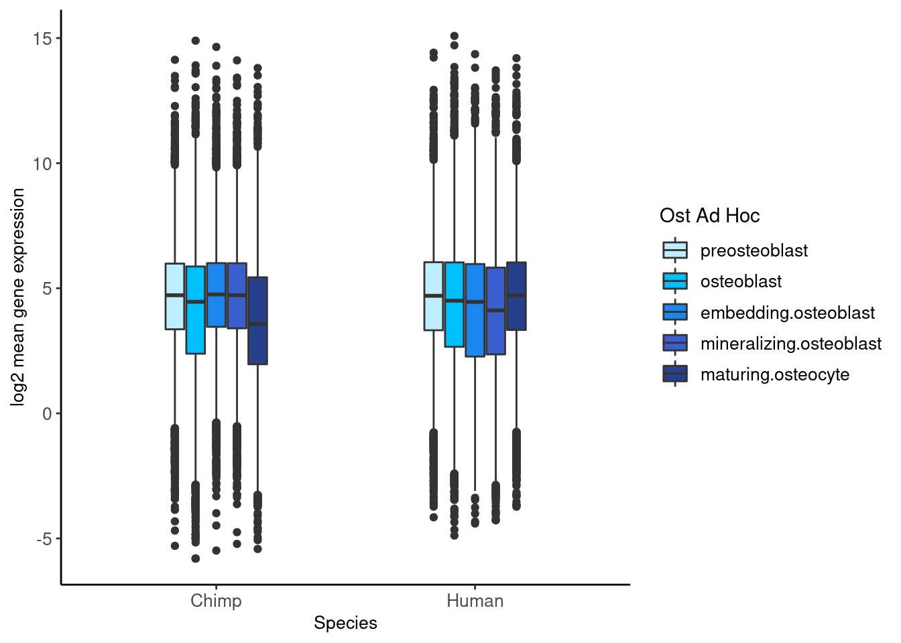
| Version | Author | Date |
|---|---|---|
| e1794ee | Genevieve Housman | 2021-08-10 |
t.test(HC.mean$Human_preosteoblast,HC.mean$Human_osteoblast)
Welch Two Sample t-test
data: HC.mean$Human_preosteoblast and HC.mean$Human_osteoblast
t = 17.049, df = 21101, p-value < 2.2e-16
alternative hypothesis: true difference in means is not equal to 0
95 percent confidence interval:
0.4880080 0.6147928
sample estimates:
mean of x mean of y
4.614774 4.063373 t.test(HC.mean$Human_osteoblast,HC.mean$Human_embedding.osteoblast)
Welch Two Sample t-test
data: HC.mean$Human_osteoblast and HC.mean$Human_embedding.osteoblast
t = -17.374, df = 21096, p-value < 2.2e-16
alternative hypothesis: true difference in means is not equal to 0
95 percent confidence interval:
-0.6249819 -0.4982607
sample estimates:
mean of x mean of y
4.063373 4.624994 t.test(HC.mean$Human_embedding.osteoblast,HC.mean$Human_mineralizing.osteoblast)
Welch Two Sample t-test
data: HC.mean$Human_embedding.osteoblast and HC.mean$Human_mineralizing.osteoblast
t = 13.183, df = 20937, p-value < 2.2e-16
alternative hypothesis: true difference in means is not equal to 0
95 percent confidence interval:
0.3693490 0.4983577
sample estimates:
mean of x mean of y
4.624994 4.191141 t.test(HC.mean$Human_mineralizing.osteoblast,HC.mean$Human_maturing.osteocyte)
Welch Two Sample t-test
data: HC.mean$Human_mineralizing.osteoblast and HC.mean$Human_maturing.osteocyte
t = -3.337, df = 21308, p-value = 0.0008485
alternative hypothesis: true difference in means is not equal to 0
95 percent confidence interval:
-0.18939712 -0.04923092
sample estimates:
mean of x mean of y
4.191141 4.310455 t.test(HC.mean$Chimp_preosteoblast,HC.mean$Chimp_osteoblast)
Welch Two Sample t-test
data: HC.mean$Chimp_preosteoblast and HC.mean$Chimp_osteoblast
t = -32.441, df = 20561, p-value < 2.2e-16
alternative hypothesis: true difference in means is not equal to 0
95 percent confidence interval:
-1.1019066 -0.9763385
sample estimates:
mean of x mean of y
3.621592 4.660714 t.test(HC.mean$Chimp_osteoblast,HC.mean$Chimp_embedding.osteoblast)
Welch Two Sample t-test
data: HC.mean$Chimp_osteoblast and HC.mean$Chimp_embedding.osteoblast
t = 2.2339, df = 21313, p-value = 0.0255
alternative hypothesis: true difference in means is not equal to 0
95 percent confidence interval:
0.008005171 0.122617826
sample estimates:
mean of x mean of y
4.660714 4.595403 t.test(HC.mean$Chimp_embedding.osteoblast,HC.mean$Chimp_mineralizing.osteoblast)
Welch Two Sample t-test
data: HC.mean$Chimp_embedding.osteoblast and HC.mean$Chimp_mineralizing.osteoblast
t = -4.3789, df = 21250, p-value = 1.198e-05
alternative hypothesis: true difference in means is not equal to 0
95 percent confidence interval:
-0.1826369 -0.0696909
sample estimates:
mean of x mean of y
4.595403 4.721567 t.test(HC.mean$Chimp_mineralizing.osteoblast,HC.mean$Chimp_maturing.osteocyte)
Welch Two Sample t-test
data: HC.mean$Chimp_mineralizing.osteoblast and HC.mean$Chimp_maturing.osteocyte
t = 19.517, df = 19831, p-value < 2.2e-16
alternative hypothesis: true difference in means is not equal to 0
95 percent confidence interval:
0.5750826 0.7034921
sample estimates:
mean of x mean of y
4.721567 4.082279 # Calculate log2cpm variances within species
HC.var <- data.frame(matrix(nrow=dim(tmm)[1],ncol=0))
HC.var["gene"] <- rownames(tmm)
HC.var["Human_preosteoblast"] <- as.data.frame(apply(tmm[,which(groupFactor=="Human_preosteoblast")],1, var))
HC.var["Human_osteoblast"] <- as.data.frame(apply(tmm[,which(groupFactor=="Human_osteoblast")],1, var))
HC.var["Human_embedding.osteoblast"] <- as.data.frame(apply(tmm[,which(groupFactor=="Human_embedding.osteoblast")],1, var))
HC.var["Human_mineralizing.osteoblast"] <- as.data.frame(apply(tmm[,which(groupFactor=="Human_mineralizing.osteoblast")],1, var))
HC.var["Human_maturing.osteocyte"] <- as.data.frame(apply(tmm[,which(groupFactor=="Human_maturing.osteocyte")],1, var))
HC.var["Chimp_preosteoblast"] <- as.data.frame(apply(tmm[,which(groupFactor=="Chimp_preosteoblast")],1, var))
HC.var["Chimp_osteoblast"] <- as.data.frame(apply(tmm[,which(groupFactor=="Chimp_osteoblast")],1, var))
HC.var["Chimp_embedding.osteoblast"] <- as.data.frame(apply(tmm[,which(groupFactor=="Chimp_embedding.osteoblast")],1, var))
HC.var["Chimp_mineralizing.osteoblast"] <- as.data.frame(apply(tmm[,which(groupFactor=="Chimp_mineralizing.osteoblast")],1, var))
HC.var["Chimp_maturing.osteocyte"] <- as.data.frame(apply(tmm[,which(groupFactor=="Chimp_maturing.osteocyte")],1, var))
HC.var.melt <- melt(HC.var,
id.vars="gene",
measure.vars=c("Human_preosteoblast","Human_osteoblast","Human_embedding.osteoblast","Human_mineralizing.osteoblast","Human_maturing.osteocyte",
"Chimp_preosteoblast","Chimp_osteoblast","Chimp_embedding.osteoblast","Chimp_mineralizing.osteoblast","Chimp_maturing.osteocyte"))
HC.var.melt$species <- sapply(HC.var.melt$variable,function(x)str_split(x,"_")[[1]][1])
HC.var.melt$ostadhoc <- sapply(HC.var.melt$variable,function(x)str_split(x,"_")[[1]][2])
ggplot(HC.var.melt, aes(x=species, y=log2(value), fill=ostadhoc)) +
geom_boxplot(width=0.4) +
xlab("Species") +
ylab('log2 variance in gene expression') +
scale_fill_manual(name="Ost Ad Hoc",
labels=c("preosteoblast","osteoblast","embedding.osteoblast","mineralizing.osteoblast","maturing.osteocyte"),
values=c("lightblue1","skyblue","deepskyblue","dodgerblue2","dodgerblue4")) +
theme_classic() +
theme(axis.text=element_text(size=10), axis.title=element_text(size=10), legend.text=element_text(size=10))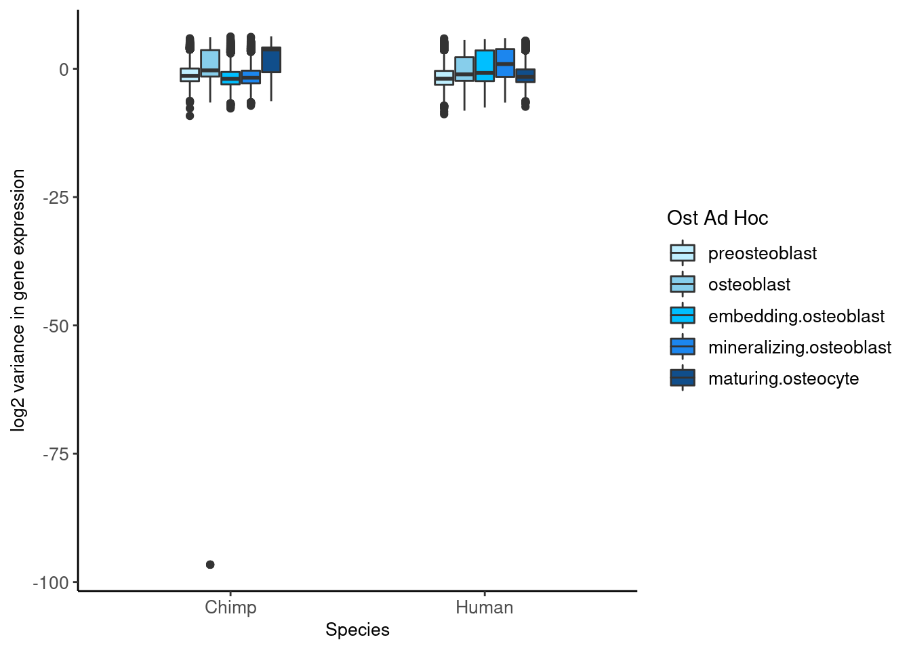
| Version | Author | Date |
|---|---|---|
| e1794ee | Genevieve Housman | 2021-08-10 |
t.test(HC.var$Human_preosteoblast,HC.var$Human_osteoblast)
Welch Two Sample t-test
data: HC.var$Human_preosteoblast and HC.var$Human_osteoblast
t = -59.932, df = 17363, p-value < 2.2e-16
alternative hypothesis: true difference in means is not equal to 0
95 percent confidence interval:
-5.409670 -5.067023
sample estimates:
mean of x mean of y
2.141484 7.379831 t.test(HC.var$Human_osteoblast,HC.var$Human_embedding.osteoblast)
Welch Two Sample t-test
data: HC.var$Human_osteoblast and HC.var$Human_embedding.osteoblast
t = 64.08, df = 16938, p-value < 2.2e-16
alternative hypothesis: true difference in means is not equal to 0
95 percent confidence interval:
5.373206 5.712296
sample estimates:
mean of x mean of y
7.379831 1.837080 t.test(HC.var$Human_embedding.osteoblast,HC.var$Human_mineralizing.osteoblast)
Welch Two Sample t-test
data: HC.var$Human_embedding.osteoblast and HC.var$Human_mineralizing.osteoblast
t = -42.954, df = 17438, p-value < 2.2e-16
alternative hypothesis: true difference in means is not equal to 0
95 percent confidence interval:
-3.747044 -3.419996
sample estimates:
mean of x mean of y
1.83708 5.42060 t.test(HC.var$Human_mineralizing.osteoblast,HC.var$Human_maturing.osteocyte)
Welch Two Sample t-test
data: HC.var$Human_mineralizing.osteoblast and HC.var$Human_maturing.osteocyte
t = 15.939, df = 20863, p-value < 2.2e-16
alternative hypothesis: true difference in means is not equal to 0
95 percent confidence interval:
1.319410 1.689425
sample estimates:
mean of x mean of y
5.420600 3.916182 t.test(HC.var$Chimp_preosteoblast,HC.var$Chimp_osteoblast)
Welch Two Sample t-test
data: HC.var$Chimp_preosteoblast and HC.var$Chimp_osteoblast
t = 104.69, df = 14447, p-value < 2.2e-16
alternative hypothesis: true difference in means is not equal to 0
95 percent confidence interval:
9.510712 9.873650
sample estimates:
mean of x mean of y
11.170008 1.477827 t.test(HC.var$Chimp_osteoblast,HC.var$Chimp_embedding.osteoblast)
Welch Two Sample t-test
data: HC.var$Chimp_osteoblast and HC.var$Chimp_embedding.osteoblast
t = -8.6606, df = 20881, p-value < 2.2e-16
alternative hypothesis: true difference in means is not equal to 0
95 percent confidence interval:
-0.5924185 -0.3737538
sample estimates:
mean of x mean of y
1.477827 1.960913 t.test(HC.var$Chimp_embedding.osteoblast,HC.var$Chimp_mineralizing.osteoblast)
Welch Two Sample t-test
data: HC.var$Chimp_embedding.osteoblast and HC.var$Chimp_mineralizing.osteoblast
t = 15.071, df = 19911, p-value < 2.2e-16
alternative hypothesis: true difference in means is not equal to 0
95 percent confidence interval:
0.6958827 0.9039465
sample estimates:
mean of x mean of y
1.960913 1.160998 t.test(HC.var$Chimp_mineralizing.osteoblast,HC.var$Chimp_maturing.osteocyte)
Welch Two Sample t-test
data: HC.var$Chimp_mineralizing.osteoblast and HC.var$Chimp_maturing.osteocyte
t = -54.469, df = 14248, p-value < 2.2e-16
alternative hypothesis: true difference in means is not equal to 0
95 percent confidence interval:
-4.722295 -4.394228
sample estimates:
mean of x mean of y
1.160998 5.719260 # Compile log2 normalized gene expression data
#make count matrix and metadata for edgeR object
counts <- as.matrix(GetAssayData(data, assay="RNA", slot="counts"))
metadata <- data@meta.data[,c("Species",
"Individual",
"Stage",
"Cluster0.05",
"AdHoc.Assign.thresh0",
"OstAdHoc.Assign.4gene.thresh0",
"OstAdHoc.Assign.x.4gene.thresh0")]
metadata <- metadata[colnames(counts),]
#remove mitochodrial and ribosomal genes
counts <- counts[which(rownames(counts) %in% genes.no.mito.ribo),]
#make edgeR object
dge <- DGEList(counts)
meta_dge <- dge$samples[,c("lib.size","norm.factors")]
meta_dge <- cbind(meta_dge, metadata)
dge$samples <- meta_dge
rm(counts,metadata,meta_dge)
#filter genes (filter genes across full dataset, pch=0.2)
dge$counts <- dge$counts[rowSums(dge$counts!=0)>=(0.2*dim(dge$counts)[2]),]
#normalize data
dge <- calcNormFactors(dge, method="TMM")
#log2 transformed cpm
tmm <- edgeR::cpm(dge,normalized.lib.sizes=TRUE,log=TRUE,prior.count=0.25)# Compile group labels of each species
groupFactor <- factor(paste(dge$samples$Species,sapply(dge$samples$Stage,function(x)sub(" ","",x)),sep = "_"),
levels=c("Human_Time0","Human_Time1","Human_Time2","Chimp_Time0","Chimp_Time1","Chimp_Time2"))
# Calculate log2cpm means within species
HC.mean <- data.frame(matrix(nrow=dim(tmm)[1],ncol=0))
HC.mean["gene"] <- rownames(tmm)
HC.mean["Human_Time0"] <- as.data.frame(apply(tmm[,which(groupFactor=="Human_Time0")],1, mean))
HC.mean["Human_Time1"] <- as.data.frame(apply(tmm[,which(groupFactor=="Human_Time1")],1, mean))
HC.mean["Human_Time2"] <- as.data.frame(apply(tmm[,which(groupFactor=="Human_Time2")],1, mean))
HC.mean["Chimp_Time0"] <- as.data.frame(apply(tmm[,which(groupFactor=="Chimp_Time0")],1, mean))
HC.mean["Chimp_Time1"] <- as.data.frame(apply(tmm[,which(groupFactor=="Chimp_Time1")],1, mean))
HC.mean["Chimp_Time2"] <- as.data.frame(apply(tmm[,which(groupFactor=="Chimp_Time2")],1, mean))
HC.mean.melt <- melt(HC.mean,id.vars="gene",measure.vars=c("Human_Time0","Human_Time1","Human_Time2","Chimp_Time0","Chimp_Time1","Chimp_Time2"))
HC.mean.melt$species <- sapply(HC.mean.melt$variable,function(x)str_split(x,"_")[[1]][1])
HC.mean.melt$stage <- sapply(HC.mean.melt$variable,function(x)str_split(x,"_")[[1]][2])
ggplot(HC.mean.melt, aes(x=species, y=value, fill=stage)) +
geom_boxplot(width=0.4) +
xlab("Species") +
ylab('log2 mean gene expression') +
scale_fill_manual(name="Stage", labels=c("Time 0","Time 1","Time 2"), values=c("pink","mediumorchid","dodgerblue")) +
theme_classic() +
theme(axis.text=element_text(size=10), axis.title=element_text(size=10), legend.text=element_text(size=10))
t.test(HC.mean$Human_Time0,HC.mean$Human_Time1)
t.test(HC.mean$Human_Time1,HC.mean$Human_Time2)
t.test(HC.mean$Chimp_Time0,HC.mean$Chimp_Time1)
t.test(HC.mean$Chimp_Time1,HC.mean$Chimp_Time2)
# Calculate log2cpm variances within species
HC.var <- data.frame(matrix(nrow=dim(tmm)[1],ncol=0))
HC.var["gene"] <- rownames(tmm)
HC.var["Human_Time0"] <- as.data.frame(apply(tmm[,which(groupFactor=="Human_Time0")],1, var))
HC.var["Human_Time1"] <- as.data.frame(apply(tmm[,which(groupFactor=="Human_Time1")],1, var))
HC.var["Human_Time2"] <- as.data.frame(apply(tmm[,which(groupFactor=="Human_Time2")],1, var))
HC.var["Chimp_Time0"] <- as.data.frame(apply(tmm[,which(groupFactor=="Chimp_Time0")],1, var))
HC.var["Chimp_Time1"] <- as.data.frame(apply(tmm[,which(groupFactor=="Chimp_Time1")],1, var))
HC.var["Chimp_Time2"] <- as.data.frame(apply(tmm[,which(groupFactor=="Chimp_Time2")],1, var))
HC.var.melt <- melt(HC.var,id.vars="gene",measure.vars=c("Human_Time0","Human_Time1","Human_Time2","Chimp_Time0","Chimp_Time1","Chimp_Time2"))
HC.var.melt$species <- sapply(HC.var.melt$variable,function(x)str_split(x,"_")[[1]][1])
HC.var.melt$stage <- sapply(HC.var.melt$variable,function(x)str_split(x,"_")[[1]][2])
ggplot(HC.var.melt, aes(x=species, y=value, fill=stage)) +
geom_boxplot(width=0.4) +
xlab("Species") +
ylab('variance in gene expression') +
scale_fill_manual(name="Stage", labels=c("Time 0","Time 1","Time 2"), values=c("pink","mediumorchid","dodgerblue")) +
theme_classic() +
theme(axis.text=element_text(size=10), axis.title=element_text(size=10), legend.text=element_text(size=10))
t.test(HC.var$Human_Time0,HC.var$Human_Time1)
t.test(HC.var$Human_Time1,HC.var$Human_Time2)
t.test(HC.var$Chimp_Time0,HC.var$Chimp_Time1)
t.test(HC.var$Chimp_Time1,HC.var$Chimp_Time2) # Compile group labels of each individual
groupFactor <- factor(paste(dge$samples$Individual,sapply(dge$samples$Stage,function(x)sub(" ","",x)),sep = "_"),
levels=c("H1_Time0","H1_Time1","H1_Time2",
"H2_Time0","H2_Time1","H2_Time2",
"H3_Time0","H3_Time1","H3_Time2",
"H4_Time0","H4_Time1","H4_Time2",
"H5_Time0","H5_Time1","H5_Time2",
"H6_Time0","H6_Time1","H6_Time2",
"C1_Time0","C1_Time1","C1_Time2",
"C2_Time0","C2_Time1","C2_Time2",
"C3_Time0","C3_Time1","C3_Time2",
"C4_Time0","C4_Time1","C4_Time2",
"C5_Time0","C5_Time1","C5_Time2",
"C6_Time0","C6_Time1","C6_Time2"))
# Calculate log2cpm means within individuals - generally mean increases in time 1 (except C4, C5, H5) and decreases in time 2
HC.mean <- data.frame(matrix(nrow=dim(tmm)[1],ncol=0))
HC.mean["gene"] <- rownames(tmm)
HC.mean["H1_Time0"] <- as.data.frame(apply(tmm[,which(groupFactor=="H1_Time0")],1, mean))
HC.mean["H1_Time1"] <- as.data.frame(apply(tmm[,which(groupFactor=="H1_Time1")],1, mean))
HC.mean["H1_Time2"] <- as.data.frame(apply(tmm[,which(groupFactor=="H1_Time2")],1, mean))
HC.mean["H2_Time0"] <- as.data.frame(apply(tmm[,which(groupFactor=="H2_Time0")],1, mean))
HC.mean["H2_Time1"] <- as.data.frame(apply(tmm[,which(groupFactor=="H2_Time1")],1, mean))
HC.mean["H2_Time2"] <- as.data.frame(apply(tmm[,which(groupFactor=="H2_Time2")],1, mean))
HC.mean["H3_Time0"] <- as.data.frame(apply(tmm[,which(groupFactor=="H3_Time0")],1, mean))
HC.mean["H3_Time1"] <- as.data.frame(apply(tmm[,which(groupFactor=="H3_Time1")],1, mean))
HC.mean["H3_Time2"] <- as.data.frame(apply(tmm[,which(groupFactor=="H3_Time2")],1, mean))
HC.mean["H4_Time0"] <- as.data.frame(apply(tmm[,which(groupFactor=="H4_Time0")],1, mean))
HC.mean["H4_Time1"] <- as.data.frame(apply(tmm[,which(groupFactor=="H4_Time1")],1, mean))
HC.mean["H4_Time2"] <- as.data.frame(apply(tmm[,which(groupFactor=="H4_Time2")],1, mean))
HC.mean["H5_Time0"] <- as.data.frame(apply(tmm[,which(groupFactor=="H5_Time0")],1, mean))
HC.mean["H5_Time1"] <- as.data.frame(apply(tmm[,which(groupFactor=="H5_Time1")],1, mean))
HC.mean["H5_Time2"] <- as.data.frame(apply(tmm[,which(groupFactor=="H5_Time2")],1, mean))
HC.mean["H6_Time0"] <- as.data.frame(apply(tmm[,which(groupFactor=="H6_Time0")],1, mean))
HC.mean["H6_Time1"] <- as.data.frame(apply(tmm[,which(groupFactor=="H6_Time1")],1, mean))
HC.mean["H6_Time2"] <- as.data.frame(apply(tmm[,which(groupFactor=="H6_Time2")],1, mean))
HC.mean["C1_Time0"] <- as.data.frame(apply(tmm[,which(groupFactor=="C1_Time0")],1, mean))
HC.mean["C1_Time1"] <- as.data.frame(apply(tmm[,which(groupFactor=="C1_Time1")],1, mean))
HC.mean["C1_Time2"] <- as.data.frame(apply(tmm[,which(groupFactor=="C1_Time2")],1, mean))
HC.mean["C2_Time0"] <- as.data.frame(apply(tmm[,which(groupFactor=="C2_Time0")],1, mean))
HC.mean["C2_Time1"] <- as.data.frame(apply(tmm[,which(groupFactor=="C2_Time1")],1, mean))
HC.mean["C2_Time2"] <- as.data.frame(apply(tmm[,which(groupFactor=="C2_Time2")],1, mean))
HC.mean["C3_Time0"] <- as.data.frame(apply(tmm[,which(groupFactor=="C3_Time0")],1, mean))
HC.mean["C3_Time1"] <- as.data.frame(apply(tmm[,which(groupFactor=="C3_Time1")],1, mean))
HC.mean["C3_Time2"] <- as.data.frame(apply(tmm[,which(groupFactor=="C3_Time2")],1, mean))
HC.mean["C4_Time0"] <- as.data.frame(apply(tmm[,which(groupFactor=="C4_Time0")],1, mean))
HC.mean["C4_Time1"] <- as.data.frame(apply(tmm[,which(groupFactor=="C4_Time1")],1, mean))
HC.mean["C4_Time2"] <- as.data.frame(apply(tmm[,which(groupFactor=="C4_Time2")],1, mean))
HC.mean["C5_Time0"] <- as.data.frame(apply(tmm[,which(groupFactor=="C5_Time0")],1, mean))
HC.mean["C5_Time1"] <- as.data.frame(apply(tmm[,which(groupFactor=="C5_Time1")],1, mean))
HC.mean["C5_Time2"] <- as.data.frame(apply(tmm[,which(groupFactor=="C5_Time2")],1, mean))
HC.mean["C6_Time0"] <- as.data.frame(apply(tmm[,which(groupFactor=="C6_Time0")],1, mean))
HC.mean["C6_Time1"] <- as.data.frame(apply(tmm[,which(groupFactor=="C6_Time1")],1, mean))
HC.mean["C6_Time2"] <- as.data.frame(apply(tmm[,which(groupFactor=="C6_Time2")],1, mean))
HC.mean.melt <- melt(HC.mean,
id.vars="gene",
measure.vars=c("H1_Time0","H1_Time1","H1_Time2",
"H2_Time0","H2_Time1","H2_Time2",
"H3_Time0","H3_Time1","H3_Time2",
"H4_Time0","H4_Time1","H4_Time2",
"H5_Time0","H5_Time1","H5_Time2",
"H6_Time0","H6_Time1","H6_Time2",
"C1_Time0","C1_Time1","C1_Time2",
"C2_Time0","C2_Time1","C2_Time2",
"C3_Time0","C3_Time1","C3_Time2",
"C4_Time0","C4_Time1","C4_Time2",
"C5_Time0","C5_Time1","C5_Time2",
"C6_Time0","C6_Time1","C6_Time2"))
HC.mean.melt$individual <- sapply(HC.mean.melt$variable,function(x)str_split(x,"_")[[1]][1])
HC.mean.melt$stage <- sapply(HC.mean.melt$variable,function(x)str_split(x,"_")[[1]][2])
ggplot(HC.mean.melt, aes(x=individual, y=value, fill=stage)) +
geom_boxplot(width=0.4) +
xlab("Individual") +
ylab('log2 mean gene expression') +
scale_fill_manual(name="Stage", labels=c("Time 0","Time 1","Time 2"), values=c("pink","mediumorchid","dodgerblue")) +
theme_classic() +
theme(axis.text=element_text(size=10), axis.title=element_text(size=10), legend.text=element_text(size=10))
t.test(HC.mean$H1_Time0,HC.mean$H1_Time1)
t.test(HC.mean$H1_Time1,HC.mean$H1_Time2)
t.test(HC.mean$H2_Time0,HC.mean$H2_Time1)
t.test(HC.mean$H2_Time1,HC.mean$H2_Time2)
t.test(HC.mean$H3_Time0,HC.mean$H3_Time1)
t.test(HC.mean$H3_Time1,HC.mean$H3_Time2)
t.test(HC.mean$H4_Time0,HC.mean$H4_Time1)
t.test(HC.mean$H4_Time1,HC.mean$H4_Time2)
t.test(HC.mean$H5_Time0,HC.mean$H5_Time1)
t.test(HC.mean$H5_Time1,HC.mean$H5_Time2)
t.test(HC.mean$H6_Time0,HC.mean$H6_Time1)
t.test(HC.mean$H6_Time1,HC.mean$H6_Time2)
t.test(HC.mean$C1_Time0,HC.mean$C1_Time1)
t.test(HC.mean$C1_Time1,HC.mean$C1_Time2)
t.test(HC.mean$C2_Time0,HC.mean$C2_Time1)
t.test(HC.mean$C2_Time1,HC.mean$C2_Time2)
t.test(HC.mean$C3_Time0,HC.mean$C3_Time1)
t.test(HC.mean$C3_Time1,HC.mean$C3_Time2)
t.test(HC.mean$C4_Time0,HC.mean$C4_Time1)
t.test(HC.mean$C4_Time1,HC.mean$C4_Time2)
t.test(HC.mean$C5_Time0,HC.mean$C5_Time1)
t.test(HC.mean$C5_Time1,HC.mean$C5_Time2)
t.test(HC.mean$C6_Time0,HC.mean$C6_Time1)
t.test(HC.mean$C6_Time1,HC.mean$C6_Time2)
# Calculate log2cpm variances within species
HC.var <- data.frame(matrix(nrow=dim(tmm)[1],ncol=0))
HC.var["gene"] <- rownames(tmm)
HC.var["H1_Time0"] <- as.data.frame(apply(tmm[,which(groupFactor=="H1_Time0")],1, var))
HC.var["H1_Time1"] <- as.data.frame(apply(tmm[,which(groupFactor=="H1_Time1")],1, var))
HC.var["H1_Time2"] <- as.data.frame(apply(tmm[,which(groupFactor=="H1_Time2")],1, var))
HC.var["H2_Time0"] <- as.data.frame(apply(tmm[,which(groupFactor=="H2_Time0")],1, var))
HC.var["H2_Time1"] <- as.data.frame(apply(tmm[,which(groupFactor=="H2_Time1")],1, var))
HC.var["H2_Time2"] <- as.data.frame(apply(tmm[,which(groupFactor=="H2_Time2")],1, var))
HC.var["H3_Time0"] <- as.data.frame(apply(tmm[,which(groupFactor=="H3_Time0")],1, var))
HC.var["H3_Time1"] <- as.data.frame(apply(tmm[,which(groupFactor=="H3_Time1")],1, var))
HC.var["H3_Time2"] <- as.data.frame(apply(tmm[,which(groupFactor=="H3_Time2")],1, var))
HC.var["H4_Time0"] <- as.data.frame(apply(tmm[,which(groupFactor=="H4_Time0")],1, var))
HC.var["H4_Time1"] <- as.data.frame(apply(tmm[,which(groupFactor=="H4_Time1")],1, var))
HC.var["H4_Time2"] <- as.data.frame(apply(tmm[,which(groupFactor=="H4_Time2")],1, var))
HC.var["H5_Time0"] <- as.data.frame(apply(tmm[,which(groupFactor=="H5_Time0")],1, var))
HC.var["H5_Time1"] <- as.data.frame(apply(tmm[,which(groupFactor=="H5_Time1")],1, var))
HC.var["H5_Time2"] <- as.data.frame(apply(tmm[,which(groupFactor=="H5_Time2")],1, var))
HC.var["H6_Time0"] <- as.data.frame(apply(tmm[,which(groupFactor=="H6_Time0")],1, var))
HC.var["H6_Time1"] <- as.data.frame(apply(tmm[,which(groupFactor=="H6_Time1")],1, var))
HC.var["H6_Time2"] <- as.data.frame(apply(tmm[,which(groupFactor=="H6_Time2")],1, var))
HC.var["C1_Time0"] <- as.data.frame(apply(tmm[,which(groupFactor=="C1_Time0")],1, var))
HC.var["C1_Time1"] <- as.data.frame(apply(tmm[,which(groupFactor=="C1_Time1")],1, var))
HC.var["C1_Time2"] <- as.data.frame(apply(tmm[,which(groupFactor=="C1_Time2")],1, var))
HC.var["C2_Time0"] <- as.data.frame(apply(tmm[,which(groupFactor=="C2_Time0")],1, var))
HC.var["C2_Time1"] <- as.data.frame(apply(tmm[,which(groupFactor=="C2_Time1")],1, var))
HC.var["C2_Time2"] <- as.data.frame(apply(tmm[,which(groupFactor=="C2_Time2")],1, var))
HC.var["C3_Time0"] <- as.data.frame(apply(tmm[,which(groupFactor=="C3_Time0")],1, var))
HC.var["C3_Time1"] <- as.data.frame(apply(tmm[,which(groupFactor=="C3_Time1")],1, var))
HC.var["C3_Time2"] <- as.data.frame(apply(tmm[,which(groupFactor=="C3_Time2")],1, var))
HC.var["C4_Time0"] <- as.data.frame(apply(tmm[,which(groupFactor=="C4_Time0")],1, var))
HC.var["C4_Time1"] <- as.data.frame(apply(tmm[,which(groupFactor=="C4_Time1")],1, var))
HC.var["C4_Time2"] <- as.data.frame(apply(tmm[,which(groupFactor=="C4_Time2")],1, var))
HC.var["C5_Time0"] <- as.data.frame(apply(tmm[,which(groupFactor=="C5_Time0")],1, var))
HC.var["C5_Time1"] <- as.data.frame(apply(tmm[,which(groupFactor=="C5_Time1")],1, var))
HC.var["C5_Time2"] <- as.data.frame(apply(tmm[,which(groupFactor=="C5_Time2")],1, var))
HC.var["C6_Time0"] <- as.data.frame(apply(tmm[,which(groupFactor=="C6_Time0")],1, var))
HC.var["C6_Time1"] <- as.data.frame(apply(tmm[,which(groupFactor=="C6_Time1")],1, var))
HC.var["C6_Time2"] <- as.data.frame(apply(tmm[,which(groupFactor=="C6_Time2")],1, var))
HC.var.melt <- melt(HC.var,
id.vars="gene",
measure.vars=c("H1_Time0","H1_Time1","H1_Time2",
"H2_Time0","H2_Time1","H2_Time2",
"H3_Time0","H3_Time1","H3_Time2",
"H4_Time0","H4_Time1","H4_Time2",
"H5_Time0","H5_Time1","H5_Time2",
"H6_Time0","H6_Time1","H6_Time2",
"C1_Time0","C1_Time1","C1_Time2",
"C2_Time0","C2_Time1","C2_Time2",
"C3_Time0","C3_Time1","C3_Time2",
"C4_Time0","C4_Time1","C4_Time2",
"C5_Time0","C5_Time1","C5_Time2",
"C6_Time0","C6_Time1","C6_Time2"))
HC.var.melt$individual <- sapply(HC.var.melt$variable,function(x)str_split(x,"_")[[1]][1])
HC.var.melt$stage <- sapply(HC.var.melt$variable,function(x)str_split(x,"_")[[1]][2])
ggplot(HC.var.melt, aes(x=individual, y=log2(value), fill=stage)) +
geom_boxplot(width=0.4) +
xlab("Individual") +
ylab('log2 variance in gene expression') +
scale_fill_manual(name="Stage", labels=c("Time 0","Time 1","Time 2"), values=c("pink","mediumorchid","dodgerblue")) +
theme_classic() +
theme(axis.text=element_text(size=10), axis.title=element_text(size=10), legend.text=element_text(size=10))
t.test(HC.var$H1_Time0,HC.var$H1_Time1)
t.test(HC.var$H1_Time1,HC.var$H1_Time2)
t.test(HC.var$H2_Time0,HC.var$H2_Time1)
t.test(HC.var$H2_Time1,HC.var$H2_Time2)
t.test(HC.var$H3_Time0,HC.var$H3_Time1)
t.test(HC.var$H3_Time1,HC.var$H3_Time2)
t.test(HC.var$H4_Time0,HC.var$H4_Time1)
t.test(HC.var$H4_Time1,HC.var$H4_Time2)
t.test(HC.var$H5_Time0,HC.var$H5_Time1)
t.test(HC.var$H5_Time1,HC.var$H5_Time2)
t.test(HC.var$H6_Time0,HC.var$H6_Time1)
t.test(HC.var$H6_Time1,HC.var$H6_Time2)
t.test(HC.var$C1_Time0,HC.var$C1_Time1)
t.test(HC.var$C1_Time1,HC.var$C1_Time2)
t.test(HC.var$C2_Time0,HC.var$C2_Time1)
t.test(HC.var$C2_Time1,HC.var$C2_Time2)
t.test(HC.var$C3_Time0,HC.var$C3_Time1)
t.test(HC.var$C3_Time1,HC.var$C3_Time2)
t.test(HC.var$C4_Time0,HC.var$C4_Time1)
t.test(HC.var$C4_Time1,HC.var$C4_Time2)
t.test(HC.var$C5_Time0,HC.var$C5_Time1)
t.test(HC.var$C5_Time1,HC.var$C5_Time2)
t.test(HC.var$C6_Time0,HC.var$C6_Time1)
t.test(HC.var$C6_Time1,HC.var$C6_Time2)# Compile group labels of each individual
groupFactor <- factor(paste(dge$samples$Individual.Replicate,sapply(dge$samples$Stage,function(x)sub(" ","",x)),sep = "_"),
levels=c("H1.1_Time0","H1.1_Time1","H1.1_Time2",
"H1.2_Time0","H1.2_Time1","H1.2_Time2",
"H2.1_Time0","H2.1_Time1","H2.1_Time2",
"H3.1_Time0","H3.1_Time1","H3.1_Time2",
"H4.1_Time0","H4.1_Time1","H4.1_Time2",
"H5.1_Time0","H5.1_Time1","H5.1_Time2",
"H6.1_Time0","H6.1_Time1","H6.1_Time2",
"C1.1_Time0","C1.1_Time1","C1.1_Time2",
"C1.2_Time0","C1.2_Time1","C1.2_Time2",
"C2.1_Time0","C2.1_Time1","C2.1_Time2",
"C3.1_Time0","C3.1_Time1","C3.1_Time2",
"C4.1_Time0","C4.1_Time1","C4.1_Time2",
"C5.1_Time0","C5.1_Time1","C5.1_Time2",
"C6.1_Time0","C6.1_Time1","C6.1_Time2"))
# Calculate log2cpm means within individuals - generally mean increases in time 1 (except C4.1, C5.1, H5.1) and decreases in time 2
HC.mean <- data.frame(matrix(nrow=dim(tmm)[1],ncol=0))
HC.mean["gene"] <- rownames(tmm)
HC.mean["H1.1_Time0"] <- as.data.frame(apply(tmm[,which(groupFactor=="H1.1_Time0")],1, mean))
HC.mean["H1.1_Time1"] <- as.data.frame(apply(tmm[,which(groupFactor=="H1.1_Time1")],1, mean))
HC.mean["H1.1_Time2"] <- as.data.frame(apply(tmm[,which(groupFactor=="H1.1_Time2")],1, mean))
HC.mean["H1.2_Time0"] <- as.data.frame(apply(tmm[,which(groupFactor=="H1.2_Time0")],1, mean))
HC.mean["H1.2_Time1"] <- as.data.frame(apply(tmm[,which(groupFactor=="H1.2_Time1")],1, mean))
HC.mean["H1.2_Time2"] <- as.data.frame(apply(tmm[,which(groupFactor=="H1.2_Time2")],1, mean))
HC.mean["H2.1_Time0"] <- as.data.frame(apply(tmm[,which(groupFactor=="H2.1_Time0")],1, mean))
HC.mean["H2.1_Time1"] <- as.data.frame(apply(tmm[,which(groupFactor=="H2.1_Time1")],1, mean))
HC.mean["H2.1_Time2"] <- as.data.frame(apply(tmm[,which(groupFactor=="H2.1_Time2")],1, mean))
HC.mean["H3.1_Time0"] <- as.data.frame(apply(tmm[,which(groupFactor=="H3.1_Time0")],1, mean))
HC.mean["H3.1_Time1"] <- as.data.frame(apply(tmm[,which(groupFactor=="H3.1_Time1")],1, mean))
HC.mean["H3.1_Time2"] <- as.data.frame(apply(tmm[,which(groupFactor=="H3.1_Time2")],1, mean))
HC.mean["H4.1_Time0"] <- as.data.frame(apply(tmm[,which(groupFactor=="H4.1_Time0")],1, mean))
HC.mean["H4.1_Time1"] <- as.data.frame(apply(tmm[,which(groupFactor=="H4.1_Time1")],1, mean))
HC.mean["H4.1_Time2"] <- as.data.frame(apply(tmm[,which(groupFactor=="H4.1_Time2")],1, mean))
HC.mean["H5.1_Time0"] <- as.data.frame(apply(tmm[,which(groupFactor=="H5.1_Time0")],1, mean))
HC.mean["H5.1_Time1"] <- as.data.frame(apply(tmm[,which(groupFactor=="H5.1_Time1")],1, mean))
HC.mean["H5.1_Time2"] <- as.data.frame(apply(tmm[,which(groupFactor=="H5.1_Time2")],1, mean))
HC.mean["H6.1_Time0"] <- as.data.frame(apply(tmm[,which(groupFactor=="H6.1_Time0")],1, mean))
HC.mean["H6.1_Time1"] <- as.data.frame(apply(tmm[,which(groupFactor=="H6.1_Time1")],1, mean))
HC.mean["H6.1_Time2"] <- as.data.frame(apply(tmm[,which(groupFactor=="H6.1_Time2")],1, mean))
HC.mean["C1.1_Time0"] <- as.data.frame(apply(tmm[,which(groupFactor=="C1.1_Time0")],1, mean))
HC.mean["C1.1_Time1"] <- as.data.frame(apply(tmm[,which(groupFactor=="C1.1_Time1")],1, mean))
HC.mean["C1.1_Time2"] <- as.data.frame(apply(tmm[,which(groupFactor=="C1.1_Time2")],1, mean))
HC.mean["C1.2_Time0"] <- as.data.frame(apply(tmm[,which(groupFactor=="C1.2_Time0")],1, mean))
HC.mean["C1.2_Time1"] <- as.data.frame(apply(tmm[,which(groupFactor=="C1.2_Time1")],1, mean))
HC.mean["C1.2_Time2"] <- as.data.frame(apply(tmm[,which(groupFactor=="C1.2_Time2")],1, mean))
HC.mean["C2.1_Time0"] <- as.data.frame(apply(tmm[,which(groupFactor=="C2.1_Time0")],1, mean))
HC.mean["C2.1_Time1"] <- as.data.frame(apply(tmm[,which(groupFactor=="C2.1_Time1")],1, mean))
HC.mean["C2.1_Time2"] <- as.data.frame(apply(tmm[,which(groupFactor=="C2.1_Time2")],1, mean))
HC.mean["C3.1_Time0"] <- as.data.frame(apply(tmm[,which(groupFactor=="C3.1_Time0")],1, mean))
HC.mean["C3.1_Time1"] <- as.data.frame(apply(tmm[,which(groupFactor=="C3.1_Time1")],1, mean))
HC.mean["C3.1_Time2"] <- as.data.frame(apply(tmm[,which(groupFactor=="C3.1_Time2")],1, mean))
HC.mean["C4.1_Time0"] <- as.data.frame(apply(tmm[,which(groupFactor=="C4.1_Time0")],1, mean))
HC.mean["C4.1_Time1"] <- as.data.frame(apply(tmm[,which(groupFactor=="C4.1_Time1")],1, mean))
HC.mean["C4.1_Time2"] <- as.data.frame(apply(tmm[,which(groupFactor=="C4.1_Time2")],1, mean))
HC.mean["C5.1_Time0"] <- as.data.frame(apply(tmm[,which(groupFactor=="C5.1_Time0")],1, mean))
HC.mean["C5.1_Time1"] <- as.data.frame(apply(tmm[,which(groupFactor=="C5.1_Time1")],1, mean))
HC.mean["C5.1_Time2"] <- as.data.frame(apply(tmm[,which(groupFactor=="C5.1_Time2")],1, mean))
HC.mean["C6.1_Time0"] <- as.data.frame(apply(tmm[,which(groupFactor=="C6.1_Time0")],1, mean))
HC.mean["C6.1_Time1"] <- as.data.frame(apply(tmm[,which(groupFactor=="C6.1_Time1")],1, mean))
HC.mean["C6.1_Time2"] <- as.data.frame(apply(tmm[,which(groupFactor=="C6.1_Time2")],1, mean))
HC.mean.melt <- melt(HC.mean,
id.vars="gene",
measure.vars=c("H1.1_Time0","H1.1_Time1","H1.1_Time2",
"H1.2_Time0","H1.2_Time1","H1.2_Time2",
"H2.1_Time0","H2.1_Time1","H2.1_Time2",
"H3.1_Time0","H3.1_Time1","H3.1_Time2",
"H4.1_Time0","H4.1_Time1","H4.1_Time2",
"H5.1_Time0","H5.1_Time1","H5.1_Time2",
"H6.1_Time0","H6.1_Time1","H6.1_Time2",
"C1.1_Time0","C1.1_Time1","C1.1_Time2",
"C1.2_Time0","C1.2_Time1","C1.2_Time2",
"C2.1_Time0","C2.1_Time1","C2.1_Time2",
"C3.1_Time0","C3.1_Time1","C3.1_Time2",
"C4.1_Time0","C4.1_Time1","C4.1_Time2",
"C5.1_Time0","C5.1_Time1","C5.1_Time2",
"C6.1_Time0","C6.1_Time1","C6.1_Time2"))
HC.mean.melt$individual <- sapply(HC.mean.melt$variable,function(x)str_split(x,"_")[[1]][1])
HC.mean.melt$stage <- sapply(HC.mean.melt$variable,function(x)str_split(x,"_")[[1]][2])
ggplot(HC.mean.melt, aes(x=individual, y=value, fill=stage)) +
geom_boxplot(width=0.4) +
xlab("Individual") +
ylab('log2 mean gene expression') +
scale_fill_manual(name="Stage", labels=c("Time 0","Time 1","Time 2"), values=c("pink","mediumorchid","dodgerblue")) +
theme_classic() +
theme(axis.text=element_text(size=10), axis.title=element_text(size=10), legend.text=element_text(size=10))
t.test(HC.mean$H1.1_Time0,HC.mean$H1.1_Time1)
t.test(HC.mean$H1.1_Time1,HC.mean$H1.1_Time2)
t.test(HC.mean$H1.2_Time0,HC.mean$H1.2_Time1)
t.test(HC.mean$H1.2_Time1,HC.mean$H1.2_Time2)
t.test(HC.mean$H2.1_Time0,HC.mean$H2.1_Time1)
t.test(HC.mean$H2.1_Time1,HC.mean$H2.1_Time2)
t.test(HC.mean$H3.1_Time0,HC.mean$H3.1_Time1)
t.test(HC.mean$H3.1_Time1,HC.mean$H3.1_Time2)
t.test(HC.mean$H4.1_Time0,HC.mean$H4.1_Time1)
t.test(HC.mean$H4.1_Time1,HC.mean$H4.1_Time2)
t.test(HC.mean$H5.1_Time0,HC.mean$H5.1_Time1)
t.test(HC.mean$H5.1_Time1,HC.mean$H5.1_Time2)
t.test(HC.mean$H6.1_Time0,HC.mean$H6.1_Time1)
t.test(HC.mean$H6.1_Time1,HC.mean$H6.1_Time2)
t.test(HC.mean$C1.1_Time0,HC.mean$C1.1_Time1)
t.test(HC.mean$C1.1_Time1,HC.mean$C1.1_Time2)
t.test(HC.mean$C1.2_Time0,HC.mean$C1.2_Time1)
t.test(HC.mean$C1.2_Time1,HC.mean$C1.2_Time2)
t.test(HC.mean$C2.1_Time0,HC.mean$C2.1_Time1)
t.test(HC.mean$C2.1_Time1,HC.mean$C2.1_Time2)
t.test(HC.mean$C3.1_Time0,HC.mean$C3.1_Time1)
t.test(HC.mean$C3.1_Time1,HC.mean$C3.1_Time2)
t.test(HC.mean$C4.1_Time0,HC.mean$C4.1_Time1)
t.test(HC.mean$C4.1_Time1,HC.mean$C4.1_Time2)
t.test(HC.mean$C5.1_Time0,HC.mean$C5.1_Time1)
t.test(HC.mean$C5.1_Time1,HC.mean$C5.1_Time2)
t.test(HC.mean$C6.1_Time0,HC.mean$C6.1_Time1)
t.test(HC.mean$C6.1_Time1,HC.mean$C6.1_Time2)
# Calculate log2cpm variances within species
HC.var <- data.frame(matrix(nrow=dim(tmm)[1],ncol=0))
HC.var["gene"] <- rownames(tmm)
HC.var["H1.1_Time0"] <- as.data.frame(apply(tmm[,which(groupFactor=="H1.1_Time0")],1, var))
HC.var["H1.1_Time1"] <- as.data.frame(apply(tmm[,which(groupFactor=="H1.1_Time1")],1, var))
HC.var["H1.1_Time2"] <- as.data.frame(apply(tmm[,which(groupFactor=="H1.1_Time2")],1, var))
HC.var["H1.2_Time0"] <- as.data.frame(apply(tmm[,which(groupFactor=="H1.2_Time0")],1, var))
HC.var["H1.2_Time1"] <- as.data.frame(apply(tmm[,which(groupFactor=="H1.2_Time1")],1, var))
HC.var["H1.2_Time2"] <- as.data.frame(apply(tmm[,which(groupFactor=="H1.2_Time2")],1, var))
HC.var["H2.1_Time0"] <- as.data.frame(apply(tmm[,which(groupFactor=="H2.1_Time0")],1, var))
HC.var["H2.1_Time1"] <- as.data.frame(apply(tmm[,which(groupFactor=="H2.1_Time1")],1, var))
HC.var["H2.1_Time2"] <- as.data.frame(apply(tmm[,which(groupFactor=="H2.1_Time2")],1, var))
HC.var["H3.1_Time0"] <- as.data.frame(apply(tmm[,which(groupFactor=="H3.1_Time0")],1, var))
HC.var["H3.1_Time1"] <- as.data.frame(apply(tmm[,which(groupFactor=="H3.1_Time1")],1, var))
HC.var["H3.1_Time2"] <- as.data.frame(apply(tmm[,which(groupFactor=="H3.1_Time2")],1, var))
HC.var["H4.1_Time0"] <- as.data.frame(apply(tmm[,which(groupFactor=="H4.1_Time0")],1, var))
HC.var["H4.1_Time1"] <- as.data.frame(apply(tmm[,which(groupFactor=="H4.1_Time1")],1, var))
HC.var["H4.1_Time2"] <- as.data.frame(apply(tmm[,which(groupFactor=="H4.1_Time2")],1, var))
HC.var["H5.1_Time0"] <- as.data.frame(apply(tmm[,which(groupFactor=="H5.1_Time0")],1, var))
HC.var["H5.1_Time1"] <- as.data.frame(apply(tmm[,which(groupFactor=="H5.1_Time1")],1, var))
HC.var["H5.1_Time2"] <- as.data.frame(apply(tmm[,which(groupFactor=="H5.1_Time2")],1, var))
HC.var["H6.1_Time0"] <- as.data.frame(apply(tmm[,which(groupFactor=="H6.1_Time0")],1, var))
HC.var["H6.1_Time1"] <- as.data.frame(apply(tmm[,which(groupFactor=="H6.1_Time1")],1, var))
HC.var["H6.1_Time2"] <- as.data.frame(apply(tmm[,which(groupFactor=="H6.1_Time2")],1, var))
HC.var["C1.1_Time0"] <- as.data.frame(apply(tmm[,which(groupFactor=="C1.1_Time0")],1, var))
HC.var["C1.1_Time1"] <- as.data.frame(apply(tmm[,which(groupFactor=="C1.1_Time1")],1, var))
HC.var["C1.1_Time2"] <- as.data.frame(apply(tmm[,which(groupFactor=="C1.1_Time2")],1, var))
HC.var["C1.2_Time0"] <- as.data.frame(apply(tmm[,which(groupFactor=="C1.2_Time0")],1, var))
HC.var["C1.2_Time1"] <- as.data.frame(apply(tmm[,which(groupFactor=="C1.2_Time1")],1, var))
HC.var["C1.2_Time2"] <- as.data.frame(apply(tmm[,which(groupFactor=="C1.2_Time2")],1, var))
HC.var["C2.1_Time0"] <- as.data.frame(apply(tmm[,which(groupFactor=="C2.1_Time0")],1, var))
HC.var["C2.1_Time1"] <- as.data.frame(apply(tmm[,which(groupFactor=="C2.1_Time1")],1, var))
HC.var["C2.1_Time2"] <- as.data.frame(apply(tmm[,which(groupFactor=="C2.1_Time2")],1, var))
HC.var["C3.1_Time0"] <- as.data.frame(apply(tmm[,which(groupFactor=="C3.1_Time0")],1, var))
HC.var["C3.1_Time1"] <- as.data.frame(apply(tmm[,which(groupFactor=="C3.1_Time1")],1, var))
HC.var["C3.1_Time2"] <- as.data.frame(apply(tmm[,which(groupFactor=="C3.1_Time2")],1, var))
HC.var["C4.1_Time0"] <- as.data.frame(apply(tmm[,which(groupFactor=="C4.1_Time0")],1, var))
HC.var["C4.1_Time1"] <- as.data.frame(apply(tmm[,which(groupFactor=="C4.1_Time1")],1, var))
HC.var["C4.1_Time2"] <- as.data.frame(apply(tmm[,which(groupFactor=="C4.1_Time2")],1, var))
HC.var["C5.1_Time0"] <- as.data.frame(apply(tmm[,which(groupFactor=="C5.1_Time0")],1, var))
HC.var["C5.1_Time1"] <- as.data.frame(apply(tmm[,which(groupFactor=="C5.1_Time1")],1, var))
HC.var["C5.1_Time2"] <- as.data.frame(apply(tmm[,which(groupFactor=="C5.1_Time2")],1, var))
HC.var["C6.1_Time0"] <- as.data.frame(apply(tmm[,which(groupFactor=="C6.1_Time0")],1, var))
HC.var["C6.1_Time1"] <- as.data.frame(apply(tmm[,which(groupFactor=="C6.1_Time1")],1, var))
HC.var["C6.1_Time2"] <- as.data.frame(apply(tmm[,which(groupFactor=="C6.1_Time2")],1, var))
HC.var.melt <- melt(HC.var,
id.vars="gene",
measure.vars=c("H1.1_Time0","H1.1_Time1","H1.1_Time2",
"H1.2_Time0","H1.2_Time1","H1.2_Time2",
"H2.1_Time0","H2.1_Time1","H2.1_Time2",
"H3.1_Time0","H3.1_Time1","H3.1_Time2",
"H4.1_Time0","H4.1_Time1","H4.1_Time2",
"H5.1_Time0","H5.1_Time1","H5.1_Time2",
"H6.1_Time0","H6.1_Time1","H6.1_Time2",
"C1.1_Time0","C1.1_Time1","C1.1_Time2",
"C1.2_Time0","C1.2_Time1","C1.2_Time2",
"C2.1_Time0","C2.1_Time1","C2.1_Time2",
"C3.1_Time0","C3.1_Time1","C3.1_Time2",
"C4.1_Time0","C4.1_Time1","C4.1_Time2",
"C5.1_Time0","C5.1_Time1","C5.1_Time2",
"C6.1_Time0","C6.1_Time1","C6.1_Time2"))
HC.var.melt$individual <- sapply(HC.var.melt$variable,function(x)str_split(x,"_")[[1]][1])
HC.var.melt$stage <- sapply(HC.var.melt$variable,function(x)str_split(x,"_")[[1]][2])
ggplot(HC.var.melt, aes(x=individual, y=log2(value), fill=stage)) +
geom_boxplot(width=0.4) +
xlab("Individual") +
ylab('log2 variance in gene expression') +
scale_fill_manual(name="Stage", labels=c("Time 0","Time 1","Time 2"), values=c("pink","mediumorchid","dodgerblue")) +
theme_classic() +
theme(axis.text=element_text(size=10), axis.title=element_text(size=10), legend.text=element_text(size=10))
t.test(HC.var$H1.1_Time0,HC.var$H1.1_Time1)
t.test(HC.var$H1.1_Time1,HC.var$H1.1_Time2)
t.test(HC.var$H1.2_Time0,HC.var$H1.2_Time1)
t.test(HC.var$H1.2_Time1,HC.var$H1.2_Time2)
t.test(HC.var$H2.1_Time0,HC.var$H2.1_Time1)
t.test(HC.var$H2.1_Time1,HC.var$H2.1_Time2)
t.test(HC.var$H3.1_Time0,HC.var$H3.1_Time1)
t.test(HC.var$H3.1_Time1,HC.var$H3.1_Time2)
t.test(HC.var$H4.1_Time0,HC.var$H4.1_Time1)
t.test(HC.var$H4.1_Time1,HC.var$H4.1_Time2)
t.test(HC.var$H5.1_Time0,HC.var$H5.1_Time1)
t.test(HC.var$H5.1_Time1,HC.var$H5.1_Time2)
t.test(HC.var$H6.1_Time0,HC.var$H6.1_Time1)
t.test(HC.var$H6.1_Time1,HC.var$H6.1_Time2)
t.test(HC.var$C1.1_Time0,HC.var$C1.1_Time1)
t.test(HC.var$C1.1_Time1,HC.var$C1.1_Time2)
t.test(HC.var$C1.2_Time0,HC.var$C1.2_Time1)
t.test(HC.var$C1.2_Time1,HC.var$C1.2_Time2)
t.test(HC.var$C2.1_Time0,HC.var$C2.1_Time1)
t.test(HC.var$C2.1_Time1,HC.var$C2.1_Time2)
t.test(HC.var$C3.1_Time0,HC.var$C3.1_Time1)
t.test(HC.var$C3.1_Time1,HC.var$C3.1_Time2)
t.test(HC.var$C4.1_Time0,HC.var$C4.1_Time1)
t.test(HC.var$C4.1_Time1,HC.var$C4.1_Time2)
t.test(HC.var$C5.1_Time0,HC.var$C5.1_Time1)
t.test(HC.var$C5.1_Time1,HC.var$C5.1_Time2)
t.test(HC.var$C6.1_Time0,HC.var$C6.1_Time1)
t.test(HC.var$C6.1_Time1,HC.var$C6.1_Time2)# Compile group labels of each species
groupFactor <- factor(paste(dge$samples$Species,dge$samples$Cluster,sep="_"),
levels=c("Human_iPSC.c1","Human_iPSC.c2","Human_iPSC.c3","Human_MSC.c1","Human_Osteogenic.c1","Human_Osteogenic.c2",
"Chimp_iPSC.c1","Chimp_iPSC.c2","Chimp_iPSC.c3","Chimp_MSC.c1","Chimp_Osteogenic.c1","Chimp_Osteogenic.c2"))
# Calculate log2cpm means within species
HC.mean <- data.frame(matrix(nrow=dim(tmm)[1],ncol=0))
HC.mean["gene"] <- rownames(tmm)
HC.mean["Human_iPSC.c1"] <- as.data.frame(apply(tmm[,which(groupFactor=="Human_iPSC.c1")],1, mean))
HC.mean["Human_iPSC.c2"] <- as.data.frame(apply(tmm[,which(groupFactor=="Human_iPSC.c2")],1, mean))
HC.mean["Human_iPSC.c3"] <- as.data.frame(apply(tmm[,which(groupFactor=="Human_iPSC.c3")],1, mean))
HC.mean["Human_MSC.c1"] <- as.data.frame(apply(tmm[,which(groupFactor=="Human_MSC.c1")],1, mean))
HC.mean["Human_Osteogenic.c1"] <- as.data.frame(apply(tmm[,which(groupFactor=="Human_Osteogenic.c1")],1, mean))
HC.mean["Human_Osteogenic.c2"] <- as.data.frame(apply(tmm[,which(groupFactor=="Human_Osteogenic.c2")],1, mean))
HC.mean["Chimp_iPSC.c1"] <- as.data.frame(apply(tmm[,which(groupFactor=="Chimp_iPSC.c1")],1, mean))
HC.mean["Chimp_iPSC.c2"] <- as.data.frame(apply(tmm[,which(groupFactor=="Chimp_iPSC.c2")],1, mean))
HC.mean["Chimp_iPSC.c3"] <- as.data.frame(apply(tmm[,which(groupFactor=="Chimp_iPSC.c3")],1, mean))
HC.mean["Chimp_MSC.c1"] <- as.data.frame(apply(tmm[,which(groupFactor=="Chimp_MSC.c1")],1, mean))
HC.mean["Chimp_Osteogenic.c1"] <- as.data.frame(apply(tmm[,which(groupFactor=="Chimp_Osteogenic.c1")],1, mean))
HC.mean["Chimp_Osteogenic.c2"] <- as.data.frame(apply(tmm[,which(groupFactor=="Chimp_Osteogenic.c2")],1, mean))
HC.mean.melt <- melt(HC.mean,
id.vars="gene",
measure.vars=c("Human_iPSC.c1","Human_iPSC.c2","Human_iPSC.c3","Human_MSC.c1","Human_Osteogenic.c1","Human_Osteogenic.c2",
"Chimp_iPSC.c1","Chimp_iPSC.c2","Chimp_iPSC.c3","Chimp_MSC.c1","Chimp_Osteogenic.c1","Chimp_Osteogenic.c2"))
HC.mean.melt$species <- sapply(HC.mean.melt$variable,function(x)str_split(x,"_")[[1]][1])
HC.mean.melt$cluster <- sapply(HC.mean.melt$variable,function(x)str_split(x,"_")[[1]][2])
ggplot(HC.mean.melt, aes(x=species, y=value, fill=cluster)) +
geom_boxplot(width=0.4) +
xlab("Species") +
ylab('log2 mean gene expression') +
scale_fill_manual(name="Cluster",
labels=c("iPSC.c1","iPSC.c2","iPSC.c3","MSC.c1","Osteogenic.c1","Osteogenic.c2"),
values=c("pink","pink3","pink4","mediumorchid","dodgerblue","dodgerblue4")) +
theme_classic() +
theme(axis.text=element_text(size=10), axis.title=element_text(size=10), legend.text=element_text(size=10))
ggplot(HC.mean.melt %>% filter(cluster %in% c("iPSC.c1","MSC.c1","Osteogenic.c1")), aes(x=species, y=value, fill=cluster)) +
geom_boxplot(width=0.4) +
xlab("Species") +
ylab('log2 mean gene expression') +
scale_fill_manual(name="Cluster",
labels=c("iPSC.c1","MSC.c1","Osteogenic.c1"),
values=c("pink","mediumorchid","dodgerblue")) +
theme_classic() +
theme(axis.text=element_text(size=10), axis.title=element_text(size=10), legend.text=element_text(size=10))
t.test(HC.mean$Human_iPSC.c1,HC.mean$Human_MSC.c1)
t.test(HC.mean$Human_MSC.c1,HC.mean$Human_Osteogenic.c1)
t.test(HC.mean$Chimp_iPSC.c1,HC.mean$Chimp_MSC.c1)
t.test(HC.mean$Chimp_MSC.c1,HC.mean$Chimp_Osteogenic.c1)
# Calculate log2cpm variances within species
HC.var <- data.frame(matrix(nrow=dim(tmm)[1],ncol=0))
HC.var["gene"] <- rownames(tmm)
HC.var["Human_iPSC.c1"] <- as.data.frame(apply(tmm[,which(groupFactor=="Human_iPSC.c1")],1, var))
HC.var["Human_iPSC.c2"] <- as.data.frame(apply(tmm[,which(groupFactor=="Human_iPSC.c2")],1, var))
HC.var["Human_iPSC.c3"] <- as.data.frame(apply(tmm[,which(groupFactor=="Human_iPSC.c3")],1, var))
HC.var["Human_MSC.c1"] <- as.data.frame(apply(tmm[,which(groupFactor=="Human_MSC.c1")],1, var))
HC.var["Human_Osteogenic.c1"] <- as.data.frame(apply(tmm[,which(groupFactor=="Human_Osteogenic.c1")],1, var))
HC.var["Human_Osteogenic.c2"] <- as.data.frame(apply(tmm[,which(groupFactor=="Human_Osteogenic.c2")],1, var))
HC.var["Chimp_iPSC.c1"] <- as.data.frame(apply(tmm[,which(groupFactor=="Chimp_iPSC.c1")],1, var))
HC.var["Chimp_iPSC.c2"] <- as.data.frame(apply(tmm[,which(groupFactor=="Chimp_iPSC.c2")],1, var))
HC.var["Chimp_iPSC.c3"] <- as.data.frame(apply(tmm[,which(groupFactor=="Chimp_iPSC.c3")],1, var))
HC.var["Chimp_MSC.c1"] <- as.data.frame(apply(tmm[,which(groupFactor=="Chimp_MSC.c1")],1, var))
HC.var["Chimp_Osteogenic.c1"] <- as.data.frame(apply(tmm[,which(groupFactor=="Chimp_Osteogenic.c1")],1, var))
HC.var["Chimp_Osteogenic.c2"] <- as.data.frame(apply(tmm[,which(groupFactor=="Chimp_Osteogenic.c2")],1, var))
HC.var.melt <- melt(HC.var,
id.vars="gene",
measure.vars=c("Human_iPSC.c1","Human_iPSC.c2","Human_iPSC.c3","Human_MSC.c1","Human_Osteogenic.c1","Human_Osteogenic.c2",
"Chimp_iPSC.c1","Chimp_iPSC.c2","Chimp_iPSC.c3","Chimp_MSC.c1","Chimp_Osteogenic.c1","Chimp_Osteogenic.c2"))
HC.var.melt$species <- sapply(HC.var.melt$variable,function(x)str_split(x,"_")[[1]][1])
HC.var.melt$cluster <- sapply(HC.var.melt$variable,function(x)str_split(x,"_")[[1]][2])
ggplot(HC.var.melt, aes(x=species, y=log2(value), fill=cluster)) +
geom_boxplot(width=0.4) +
xlab("Species") +
ylab('log2 variance in gene expression') +
scale_fill_manual(name="Cluster",
labels=c("iPSC.c1","iPSC.c2","iPSC.c3","MSC.c1","Osteogenic.c1","Osteogenic.c2"),
values=c("pink","pink3","pink4","mediumorchid","dodgerblue","dodgerblue4")) +
theme_classic() +
theme(axis.text=element_text(size=10), axis.title=element_text(size=10), legend.text=element_text(size=10))
ggplot(HC.var.melt %>% filter(cluster %in% c("iPSC.c1","MSC.c1","Osteogenic.c1")), aes(x=species, y=log2(value), fill=cluster)) +
geom_boxplot(width=0.4) +
xlab("Species") +
ylab('log2 variance in gene expression') +
scale_fill_manual(name="Cluster",
labels=c("iPSC.c1","MSC.c1","Osteogenic.c1"),
values=c("pink","mediumorchid","dodgerblue")) +
theme_classic() +
theme(axis.text=element_text(size=10), axis.title=element_text(size=10), legend.text=element_text(size=10))
t.test(HC.var$Human_iPSC.c1,HC.var$Human_MSC.c1)
t.test(HC.var$Human_MSC.c1,HC.var$Human_Osteogenic.c1)
t.test(HC.var$Chimp_iPSC.c1,HC.var$Chimp_MSC.c1)
t.test(HC.var$Chimp_MSC.c1,HC.var$Chimp_Osteogenic.c1) # Compile group labels of each individual
groupFactor <- factor(paste(dge$samples$Individual,dge$samples$Cluster,sep="_"),
levels=c("H1_iPSC.c1","H1_iPSC.c2","H1_iPSC.c3","H1_MSC.c1","H1_Osteogenic.c1","H1_Osteogenic.c2",
"H2_iPSC.c1","H2_iPSC.c2","H2_iPSC.c3","H2_MSC.c1","H2_Osteogenic.c1","H2_Osteogenic.c2",
"H3_iPSC.c1","H3_iPSC.c2","H3_iPSC.c3","H3_MSC.c1","H3_Osteogenic.c1","H3_Osteogenic.c2",
"H4_iPSC.c1","H4_iPSC.c2","H4_iPSC.c3","H4_MSC.c1","H4_Osteogenic.c1","H4_Osteogenic.c2",
"H5_iPSC.c1","H5_iPSC.c2","H5_iPSC.c3","H5_MSC.c1","H5_Osteogenic.c1","H5_Osteogenic.c2",
"H6_iPSC.c1","H6_iPSC.c2","H6_iPSC.c3","H6_MSC.c1","H6_Osteogenic.c1","H6_Osteogenic.c2",
"C1_iPSC.c1","C1_iPSC.c2","C1_iPSC.c3","C1_MSC.c1","C1_Osteogenic.c1","C1_Osteogenic.c2",
"C2_iPSC.c1","C2_iPSC.c2","C2_iPSC.c3","C2_MSC.c1","C2_Osteogenic.c1","C2_Osteogenic.c2",
"C3_iPSC.c1","C3_iPSC.c2","C3_iPSC.c3","C3_MSC.c1","C3_Osteogenic.c1","C3_Osteogenic.c2",
"C4_iPSC.c1","C4_iPSC.c2","C4_iPSC.c3","C4_MSC.c1","C4_Osteogenic.c1","C4_Osteogenic.c2",
"C5_iPSC.c1","C5_iPSC.c2","C5_iPSC.c3","C5_MSC.c1","C5_Osteogenic.c1","C5_Osteogenic.c2",
"C6_iPSC.c1","C6_iPSC.c2","C6_iPSC.c3","C6_MSC.c1","C6_Osteogenic.c1","C6_Osteogenic.c2"))
# Calculate log2cpm means within individuals - generally mean decreases in MSC.c1 (except C1, C3, C6, H1, H3, H4, H6) and decreases in Osteogenic.c1 (except H1)
HC.mean <- data.frame(matrix(nrow=dim(tmm)[1],ncol=0))
HC.mean["gene"] <- rownames(tmm)
HC.mean["H1_iPSC.c1"] <- as.data.frame(apply(tmm[,which(groupFactor=="H1_iPSC.c1")],1, mean))
HC.mean["H1_iPSC.c2"] <- as.data.frame(apply(tmm[,which(groupFactor=="H1_iPSC.c2")],1, mean))
HC.mean["H1_iPSC.c3"] <- as.data.frame(apply(tmm[,which(groupFactor=="H1_iPSC.c3")],1, mean))
HC.mean["H1_MSC.c1"] <- as.data.frame(apply(tmm[,which(groupFactor=="H1_MSC.c1")],1, mean))
HC.mean["H1_Osteogenic.c1"] <- as.data.frame(apply(tmm[,which(groupFactor=="H1_Osteogenic.c1")],1, mean))
HC.mean["H1_Osteogenic.c2"] <- as.data.frame(apply(tmm[,which(groupFactor=="H1_Osteogenic.c2")],1, mean))
HC.mean["H2_iPSC.c1"] <- as.data.frame(apply(tmm[,which(groupFactor=="H2_iPSC.c1")],1, mean))
HC.mean["H2_iPSC.c2"] <- as.data.frame(apply(tmm[,which(groupFactor=="H2_iPSC.c2")],1, mean))
HC.mean["H2_iPSC.c3"] <- as.data.frame(apply(tmm[,which(groupFactor=="H2_iPSC.c3")],1, mean))
HC.mean["H2_MSC.c1"] <- as.data.frame(apply(tmm[,which(groupFactor=="H2_MSC.c1")],1, mean))
HC.mean["H2_Osteogenic.c1"] <- as.data.frame(apply(tmm[,which(groupFactor=="H2_Osteogenic.c1")],1, mean))
HC.mean["H2_Osteogenic.c2"] <- as.data.frame(apply(tmm[,which(groupFactor=="H2_Osteogenic.c2")],1, mean))
HC.mean["H3_iPSC.c1"] <- as.data.frame(apply(tmm[,which(groupFactor=="H3_iPSC.c1")],1, mean))
HC.mean["H3_iPSC.c2"] <- as.data.frame(apply(tmm[,which(groupFactor=="H3_iPSC.c2")],1, mean))
HC.mean["H3_iPSC.c3"] <- as.data.frame(apply(tmm[,which(groupFactor=="H3_iPSC.c3")],1, mean))
HC.mean["H3_MSC.c1"] <- as.data.frame(apply(tmm[,which(groupFactor=="H3_MSC.c1")],1, mean))
HC.mean["H3_Osteogenic.c1"] <- as.data.frame(apply(tmm[,which(groupFactor=="H3_Osteogenic.c1")],1, mean))
HC.mean["H3_Osteogenic.c2"] <- as.data.frame(apply(tmm[,which(groupFactor=="H3_Osteogenic.c2")],1, mean))
HC.mean["H4_iPSC.c1"] <- as.data.frame(apply(tmm[,which(groupFactor=="H4_iPSC.c1")],1, mean))
HC.mean["H4_iPSC.c2"] <- as.data.frame(apply(tmm[,which(groupFactor=="H4_iPSC.c2")],1, mean))
HC.mean["H4_iPSC.c3"] <- as.data.frame(apply(tmm[,which(groupFactor=="H4_iPSC.c3")],1, mean))
HC.mean["H4_MSC.c1"] <- as.data.frame(apply(tmm[,which(groupFactor=="H4_MSC.c1")],1, mean))
HC.mean["H4_Osteogenic.c1"] <- as.data.frame(apply(tmm[,which(groupFactor=="H4_Osteogenic.c1")],1, mean))
HC.mean["H4_Osteogenic.c2"] <- as.data.frame(apply(tmm[,which(groupFactor=="H4_Osteogenic.c2")],1, mean))
HC.mean["H5_iPSC.c1"] <- as.data.frame(apply(tmm[,which(groupFactor=="H5_iPSC.c1")],1, mean))
HC.mean["H5_iPSC.c2"] <- as.data.frame(apply(tmm[,which(groupFactor=="H5_iPSC.c2")],1, mean))
HC.mean["H5_iPSC.c3"] <- as.data.frame(apply(tmm[,which(groupFactor=="H5_iPSC.c3")],1, mean))
HC.mean["H5_MSC.c1"] <- as.data.frame(apply(tmm[,which(groupFactor=="H5_MSC.c1")],1, mean))
HC.mean["H5_Osteogenic.c1"] <- as.data.frame(apply(tmm[,which(groupFactor=="H5_Osteogenic.c1")],1, mean))
HC.mean["H5_Osteogenic.c2"] <- as.data.frame(apply(tmm[,which(groupFactor=="H5_Osteogenic.c2")],1, mean))
HC.mean["H6_iPSC.c1"] <- as.data.frame(apply(tmm[,which(groupFactor=="H6_iPSC.c1")],1, mean))
HC.mean["H6_iPSC.c2"] <- as.data.frame(apply(tmm[,which(groupFactor=="H6_iPSC.c2")],1, mean))
HC.mean["H6_iPSC.c3"] <- as.data.frame(apply(tmm[,which(groupFactor=="H6_iPSC.c3")],1, mean))
HC.mean["H6_MSC.c1"] <- as.data.frame(apply(tmm[,which(groupFactor=="H6_MSC.c1")],1, mean))
HC.mean["H6_Osteogenic.c1"] <- as.data.frame(apply(tmm[,which(groupFactor=="H6_Osteogenic.c1")],1, mean))
HC.mean["H6_Osteogenic.c2"] <- as.data.frame(apply(tmm[,which(groupFactor=="H6_Osteogenic.c2")],1, mean))
HC.mean["C1_iPSC.c1"] <- as.data.frame(apply(tmm[,which(groupFactor=="C1_iPSC.c1")],1, mean))
HC.mean["C1_iPSC.c2"] <- as.data.frame(apply(tmm[,which(groupFactor=="C1_iPSC.c2")],1, mean))
HC.mean["C1_iPSC.c3"] <- as.data.frame(apply(tmm[,which(groupFactor=="C1_iPSC.c3")],1, mean))
HC.mean["C1_MSC.c1"] <- as.data.frame(apply(tmm[,which(groupFactor=="C1_MSC.c1")],1, mean))
HC.mean["C1_Osteogenic.c1"] <- as.data.frame(apply(tmm[,which(groupFactor=="C1_Osteogenic.c1")],1, mean))
HC.mean["C1_Osteogenic.c2"] <- as.data.frame(apply(tmm[,which(groupFactor=="C1_Osteogenic.c2")],1, mean))
HC.mean["C2_iPSC.c1"] <- as.data.frame(apply(tmm[,which(groupFactor=="C2_iPSC.c1")],1, mean))
HC.mean["C2_iPSC.c2"] <- as.data.frame(apply(tmm[,which(groupFactor=="C2_iPSC.c2")],1, mean))
HC.mean["C2_iPSC.c3"] <- as.data.frame(apply(tmm[,which(groupFactor=="C2_iPSC.c3")],1, mean))
HC.mean["C2_MSC.c1"] <- as.data.frame(apply(tmm[,which(groupFactor=="C2_MSC.c1")],1, mean))
HC.mean["C2_Osteogenic.c1"] <- as.data.frame(apply(tmm[,which(groupFactor=="C2_Osteogenic.c1")],1, mean))
HC.mean["C2_Osteogenic.c2"] <- as.data.frame(apply(tmm[,which(groupFactor=="C2_Osteogenic.c2")],1, mean))
HC.mean["C3_iPSC.c1"] <- as.data.frame(apply(tmm[,which(groupFactor=="C3_iPSC.c1")],1, mean))
HC.mean["C3_iPSC.c2"] <- as.data.frame(apply(tmm[,which(groupFactor=="C3_iPSC.c2")],1, mean))
HC.mean["C3_iPSC.c3"] <- as.data.frame(apply(tmm[,which(groupFactor=="C3_iPSC.c3")],1, mean))
HC.mean["C3_MSC.c1"] <- as.data.frame(apply(tmm[,which(groupFactor=="C3_MSC.c1")],1, mean))
HC.mean["C3_Osteogenic.c1"] <- as.data.frame(apply(tmm[,which(groupFactor=="C3_Osteogenic.c1")],1, mean))
HC.mean["C3_Osteogenic.c2"] <- as.data.frame(apply(tmm[,which(groupFactor=="C3_Osteogenic.c2")],1, mean))
HC.mean["C4_iPSC.c1"] <- as.data.frame(apply(tmm[,which(groupFactor=="C4_iPSC.c1")],1, mean))
HC.mean["C4_iPSC.c2"] <- as.data.frame(apply(tmm[,which(groupFactor=="C4_iPSC.c2")],1, mean))
HC.mean["C4_iPSC.c3"] <- as.data.frame(apply(tmm[,which(groupFactor=="C4_iPSC.c3")],1, mean))
HC.mean["C4_MSC.c1"] <- as.data.frame(apply(tmm[,which(groupFactor=="C4_MSC.c1")],1, mean))
HC.mean["C4_Osteogenic.c1"] <- as.data.frame(apply(tmm[,which(groupFactor=="C4_Osteogenic.c1")],1, mean))
HC.mean["C4_Osteogenic.c2"] <- as.data.frame(apply(tmm[,which(groupFactor=="C4_Osteogenic.c2")],1, mean))
HC.mean["C5_iPSC.c1"] <- as.data.frame(apply(tmm[,which(groupFactor=="C5_iPSC.c1")],1, mean))
HC.mean["C5_iPSC.c2"] <- as.data.frame(apply(tmm[,which(groupFactor=="C5_iPSC.c2")],1, mean))
HC.mean["C5_iPSC.c3"] <- as.data.frame(apply(tmm[,which(groupFactor=="C5_iPSC.c3")],1, mean))
HC.mean["C5_MSC.c1"] <- as.data.frame(apply(tmm[,which(groupFactor=="C5_MSC.c1")],1, mean))
HC.mean["C5_Osteogenic.c1"] <- as.data.frame(apply(tmm[,which(groupFactor=="C5_Osteogenic.c1")],1, mean))
HC.mean["C5_Osteogenic.c2"] <- as.data.frame(apply(tmm[,which(groupFactor=="C5_Osteogenic.c2")],1, mean))
HC.mean["C6_iPSC.c1"] <- as.data.frame(apply(tmm[,which(groupFactor=="C6_iPSC.c1")],1, mean))
HC.mean["C6_iPSC.c2"] <- as.data.frame(apply(tmm[,which(groupFactor=="C6_iPSC.c2")],1, mean))
HC.mean["C6_iPSC.c3"] <- as.data.frame(apply(tmm[,which(groupFactor=="C6_iPSC.c3")],1, mean))
HC.mean["C6_MSC.c1"] <- as.data.frame(apply(tmm[,which(groupFactor=="C6_MSC.c1")],1, mean))
HC.mean["C6_Osteogenic.c1"] <- as.data.frame(apply(tmm[,which(groupFactor=="C6_Osteogenic.c1")],1, mean))
HC.mean["C6_Osteogenic.c2"] <- as.data.frame(apply(tmm[,which(groupFactor=="C6_Osteogenic.c2")],1, mean))
HC.mean.melt <- melt(HC.mean,
id.vars="gene",
measure.vars=c("H1_iPSC.c1","H1_iPSC.c2","H1_iPSC.c3","H1_MSC.c1","H1_Osteogenic.c1","H1_Osteogenic.c2",
"H2_iPSC.c1","H2_iPSC.c2","H2_iPSC.c3","H2_MSC.c1","H2_Osteogenic.c1","H2_Osteogenic.c2",
"H3_iPSC.c1","H3_iPSC.c2","H3_iPSC.c3","H3_MSC.c1","H3_Osteogenic.c1","H3_Osteogenic.c2",
"H4_iPSC.c1","H4_iPSC.c2","H4_iPSC.c3","H4_MSC.c1","H4_Osteogenic.c1","H4_Osteogenic.c2",
"H5_iPSC.c1","H5_iPSC.c2","H5_iPSC.c3","H5_MSC.c1","H5_Osteogenic.c1","H5_Osteogenic.c2",
"H6_iPSC.c1","H6_iPSC.c2","H6_iPSC.c3","H6_MSC.c1","H6_Osteogenic.c1","H6_Osteogenic.c2",
"C1_iPSC.c1","C1_iPSC.c2","C1_iPSC.c3","C1_MSC.c1","C1_Osteogenic.c1","C1_Osteogenic.c2",
"C2_iPSC.c1","C2_iPSC.c2","C2_iPSC.c3","C2_MSC.c1","C2_Osteogenic.c1","C2_Osteogenic.c2",
"C3_iPSC.c1","C3_iPSC.c2","C3_iPSC.c3","C3_MSC.c1","C3_Osteogenic.c1","C3_Osteogenic.c2",
"C4_iPSC.c1","C4_iPSC.c2","C4_iPSC.c3","C4_MSC.c1","C4_Osteogenic.c1","C4_Osteogenic.c2",
"C5_iPSC.c1","C5_iPSC.c2","C5_iPSC.c3","C5_MSC.c1","C5_Osteogenic.c1","C5_Osteogenic.c2",
"C6_iPSC.c1","C6_iPSC.c2","C6_iPSC.c3","C6_MSC.c1","C6_Osteogenic.c1","C6_Osteogenic.c2"))
HC.mean.melt$individual <- sapply(HC.mean.melt$variable,function(x)str_split(x,"_")[[1]][1])
HC.mean.melt$cluster <- sapply(HC.mean.melt$variable,function(x)str_split(x,"_")[[1]][2])
ggplot(HC.mean.melt, aes(x=individual, y=value, fill=cluster)) +
geom_boxplot(width=0.4) +
xlab("Individual") +
ylab('log2 mean gene expression') +
scale_fill_manual(name="Cluster",
labels=c("iPSC.c1","iPSC.c2","iPSC.c3","MSC.c1","Osteogenic.c1","Osteogenic.c2"),
values=c("pink","pink3","pink4","mediumorchid","dodgerblue","dodgerblue4")) +
theme_classic() +
theme(axis.text=element_text(size=10), axis.title=element_text(size=10), legend.text=element_text(size=10))
ggplot(HC.mean.melt %>% filter(cluster %in% c("iPSC.c1","MSC.c1","Osteogenic.c1")), aes(x=individual, y=value, fill=cluster)) +
geom_boxplot(width=0.4) +
xlab("Individual") +
ylab('log2 mean gene expression') +
scale_fill_manual(name="Cluster",
labels=c("iPSC.c1","MSC.c1","Osteogenic.c1"),
values=c("pink","mediumorchid","dodgerblue")) +
theme_classic() +
theme(axis.text=element_text(size=10), axis.title=element_text(size=10), legend.text=element_text(size=10))
t.test(HC.mean$H1_iPSC.c1,HC.mean$H1_MSC.c1)
t.test(HC.mean$H1_MSC.c1,HC.mean$H1_Osteogenic.c1)
t.test(HC.mean$H2_iPSC.c1,HC.mean$H2_MSC.c1)
t.test(HC.mean$H2_MSC.c1,HC.mean$H2_Osteogenic.c1)
t.test(HC.mean$H3_iPSC.c1,HC.mean$H3_MSC.c1)
t.test(HC.mean$H3_MSC.c1,HC.mean$H3_Osteogenic.c1)
t.test(HC.mean$H4_iPSC.c1,HC.mean$H4_MSC.c1)
t.test(HC.mean$H4_MSC.c1,HC.mean$H4_Osteogenic.c1)
t.test(HC.mean$H5_iPSC.c1,HC.mean$H5_MSC.c1)
t.test(HC.mean$H5_MSC.c1,HC.mean$H5_Osteogenic.c1)
t.test(HC.mean$H6_iPSC.c1,HC.mean$H6_MSC.c1)
t.test(HC.mean$H6_MSC.c1,HC.mean$H6_Osteogenic.c1)
t.test(HC.mean$C1_iPSC.c1,HC.mean$C1_MSC.c1)
t.test(HC.mean$C1_MSC.c1,HC.mean$C1_Osteogenic.c1)
t.test(HC.mean$C2_iPSC.c1,HC.mean$C2_MSC.c1)
t.test(HC.mean$C2_MSC.c1,HC.mean$C2_Osteogenic.c1)
t.test(HC.mean$C3_iPSC.c1,HC.mean$C3_MSC.c1)
t.test(HC.mean$C3_MSC.c1,HC.mean$C3_Osteogenic.c1)
t.test(HC.mean$C4_iPSC.c1,HC.mean$C4_MSC.c1)
t.test(HC.mean$C4_MSC.c1,HC.mean$C4_Osteogenic.c1)
t.test(HC.mean$C5_iPSC.c1,HC.mean$C5_MSC.c1)
t.test(HC.mean$C5_MSC.c1,HC.mean$C5_Osteogenic.c1)
t.test(HC.mean$C6_iPSC.c1,HC.mean$C6_MSC.c1)
t.test(HC.mean$C6_MSC.c1,HC.mean$C6_Osteogenic.c1)
# Calculate log2cpm variances within species
HC.var <- data.frame(matrix(nrow=dim(tmm)[1],ncol=0))
HC.var["gene"] <- rownames(tmm)
HC.var["H1_iPSC.c1"] <- as.data.frame(apply(tmm[,which(groupFactor=="H1_iPSC.c1")],1, var))
HC.var["H1_iPSC.c2"] <- as.data.frame(apply(tmm[,which(groupFactor=="H1_iPSC.c2")],1, var))
HC.var["H1_iPSC.c3"] <- as.data.frame(apply(tmm[,which(groupFactor=="H1_iPSC.c3")],1, var))
HC.var["H1_MSC.c1"] <- as.data.frame(apply(tmm[,which(groupFactor=="H1_MSC.c1")],1, var))
HC.var["H1_Osteogenic.c1"] <- as.data.frame(apply(tmm[,which(groupFactor=="H1_Osteogenic.c1")],1, var))
HC.var["H1_Osteogenic.c2"] <- as.data.frame(apply(tmm[,which(groupFactor=="H1_Osteogenic.c2")],1, var))
HC.var["H2_iPSC.c1"] <- as.data.frame(apply(tmm[,which(groupFactor=="H2_iPSC.c1")],1, var))
HC.var["H2_iPSC.c2"] <- as.data.frame(apply(tmm[,which(groupFactor=="H2_iPSC.c2")],1, var))
HC.var["H2_iPSC.c3"] <- as.data.frame(apply(tmm[,which(groupFactor=="H2_iPSC.c3")],1, var))
HC.var["H2_MSC.c1"] <- as.data.frame(apply(tmm[,which(groupFactor=="H2_MSC.c1")],1, var))
HC.var["H2_Osteogenic.c1"] <- as.data.frame(apply(tmm[,which(groupFactor=="H2_Osteogenic.c1")],1, var))
HC.var["H2_Osteogenic.c2"] <- as.data.frame(apply(tmm[,which(groupFactor=="H2_Osteogenic.c2")],1, var))
HC.var["H3_iPSC.c1"] <- as.data.frame(apply(tmm[,which(groupFactor=="H3_iPSC.c1")],1, var))
HC.var["H3_iPSC.c2"] <- as.data.frame(apply(tmm[,which(groupFactor=="H3_iPSC.c2")],1, var))
HC.var["H3_iPSC.c3"] <- as.data.frame(apply(tmm[,which(groupFactor=="H3_iPSC.c3")],1, var))
HC.var["H3_MSC.c1"] <- as.data.frame(apply(tmm[,which(groupFactor=="H3_MSC.c1")],1, var))
HC.var["H3_Osteogenic.c1"] <- as.data.frame(apply(tmm[,which(groupFactor=="H3_Osteogenic.c1")],1, var))
HC.var["H3_Osteogenic.c2"] <- as.data.frame(apply(tmm[,which(groupFactor=="H3_Osteogenic.c2")],1, var))
HC.var["H4_iPSC.c1"] <- as.data.frame(apply(tmm[,which(groupFactor=="H4_iPSC.c1")],1, var))
HC.var["H4_iPSC.c2"] <- as.data.frame(apply(tmm[,which(groupFactor=="H4_iPSC.c2")],1, var))
HC.var["H4_iPSC.c3"] <- as.data.frame(apply(tmm[,which(groupFactor=="H4_iPSC.c3")],1, var))
HC.var["H4_MSC.c1"] <- as.data.frame(apply(tmm[,which(groupFactor=="H4_MSC.c1")],1, var))
HC.var["H4_Osteogenic.c1"] <- as.data.frame(apply(tmm[,which(groupFactor=="H4_Osteogenic.c1")],1, var))
HC.var["H4_Osteogenic.c2"] <- as.data.frame(apply(tmm[,which(groupFactor=="H4_Osteogenic.c2")],1, var))
HC.var["H5_iPSC.c1"] <- as.data.frame(apply(tmm[,which(groupFactor=="H5_iPSC.c1")],1, var))
HC.var["H5_iPSC.c2"] <- as.data.frame(apply(tmm[,which(groupFactor=="H5_iPSC.c2")],1, var))
HC.var["H5_iPSC.c3"] <- as.data.frame(apply(tmm[,which(groupFactor=="H5_iPSC.c3")],1, var))
HC.var["H5_MSC.c1"] <- as.data.frame(apply(tmm[,which(groupFactor=="H5_MSC.c1")],1, var))
HC.var["H5_Osteogenic.c1"] <- as.data.frame(apply(tmm[,which(groupFactor=="H5_Osteogenic.c1")],1, var))
HC.var["H5_Osteogenic.c2"] <- as.data.frame(apply(tmm[,which(groupFactor=="H5_Osteogenic.c2")],1, var))
HC.var["H6_iPSC.c1"] <- as.data.frame(apply(tmm[,which(groupFactor=="H6_iPSC.c1")],1, var))
HC.var["H6_iPSC.c2"] <- as.data.frame(apply(tmm[,which(groupFactor=="H6_iPSC.c2")],1, var))
HC.var["H6_iPSC.c3"] <- as.data.frame(apply(tmm[,which(groupFactor=="H6_iPSC.c3")],1, var))
HC.var["H6_MSC.c1"] <- as.data.frame(apply(tmm[,which(groupFactor=="H6_MSC.c1")],1, var))
HC.var["H6_Osteogenic.c1"] <- as.data.frame(apply(tmm[,which(groupFactor=="H6_Osteogenic.c1")],1, var))
HC.var["H6_Osteogenic.c2"] <- as.data.frame(apply(tmm[,which(groupFactor=="H6_Osteogenic.c2")],1, var))
HC.var["C1_iPSC.c1"] <- as.data.frame(apply(tmm[,which(groupFactor=="C1_iPSC.c1")],1, var))
HC.var["C1_iPSC.c2"] <- as.data.frame(apply(tmm[,which(groupFactor=="C1_iPSC.c2")],1, var))
HC.var["C1_iPSC.c3"] <- as.data.frame(apply(tmm[,which(groupFactor=="C1_iPSC.c3")],1, var))
HC.var["C1_MSC.c1"] <- as.data.frame(apply(tmm[,which(groupFactor=="C1_MSC.c1")],1, var))
HC.var["C1_Osteogenic.c1"] <- as.data.frame(apply(tmm[,which(groupFactor=="C1_Osteogenic.c1")],1, var))
HC.var["C1_Osteogenic.c2"] <- as.data.frame(apply(tmm[,which(groupFactor=="C1_Osteogenic.c2")],1, var))
HC.var["C2_iPSC.c1"] <- as.data.frame(apply(tmm[,which(groupFactor=="C2_iPSC.c1")],1, var))
HC.var["C2_iPSC.c2"] <- as.data.frame(apply(tmm[,which(groupFactor=="C2_iPSC.c2")],1, var))
HC.var["C2_iPSC.c3"] <- as.data.frame(apply(tmm[,which(groupFactor=="C2_iPSC.c3")],1, var))
HC.var["C2_MSC.c1"] <- as.data.frame(apply(tmm[,which(groupFactor=="C2_MSC.c1")],1, var))
HC.var["C2_Osteogenic.c1"] <- as.data.frame(apply(tmm[,which(groupFactor=="C2_Osteogenic.c1")],1, var))
HC.var["C2_Osteogenic.c2"] <- as.data.frame(apply(tmm[,which(groupFactor=="C2_Osteogenic.c2")],1, var))
HC.var["C3_iPSC.c1"] <- as.data.frame(apply(tmm[,which(groupFactor=="C3_iPSC.c1")],1, var))
HC.var["C3_iPSC.c2"] <- as.data.frame(apply(tmm[,which(groupFactor=="C3_iPSC.c2")],1, var))
HC.var["C3_iPSC.c3"] <- as.data.frame(apply(tmm[,which(groupFactor=="C3_iPSC.c3")],1, var))
HC.var["C3_MSC.c1"] <- as.data.frame(apply(tmm[,which(groupFactor=="C3_MSC.c1")],1, var))
HC.var["C3_Osteogenic.c1"] <- as.data.frame(apply(tmm[,which(groupFactor=="C3_Osteogenic.c1")],1, var))
HC.var["C3_Osteogenic.c2"] <- as.data.frame(apply(tmm[,which(groupFactor=="C3_Osteogenic.c2")],1, var))
HC.var["C4_iPSC.c1"] <- as.data.frame(apply(tmm[,which(groupFactor=="C4_iPSC.c1")],1, var))
HC.var["C4_iPSC.c2"] <- as.data.frame(apply(tmm[,which(groupFactor=="C4_iPSC.c2")],1, var))
HC.var["C4_iPSC.c3"] <- as.data.frame(apply(tmm[,which(groupFactor=="C4_iPSC.c3")],1, var))
HC.var["C4_MSC.c1"] <- as.data.frame(apply(tmm[,which(groupFactor=="C4_MSC.c1")],1, var))
HC.var["C4_Osteogenic.c1"] <- as.data.frame(apply(tmm[,which(groupFactor=="C4_Osteogenic.c1")],1, var))
HC.var["C4_Osteogenic.c2"] <- as.data.frame(apply(tmm[,which(groupFactor=="C4_Osteogenic.c2")],1, var))
HC.var["C5_iPSC.c1"] <- as.data.frame(apply(tmm[,which(groupFactor=="C5_iPSC.c1")],1, var))
HC.var["C5_iPSC.c2"] <- as.data.frame(apply(tmm[,which(groupFactor=="C5_iPSC.c2")],1, var))
HC.var["C5_iPSC.c3"] <- as.data.frame(apply(tmm[,which(groupFactor=="C5_iPSC.c3")],1, var))
HC.var["C5_MSC.c1"] <- as.data.frame(apply(tmm[,which(groupFactor=="C5_MSC.c1")],1, var))
HC.var["C5_Osteogenic.c1"] <- as.data.frame(apply(tmm[,which(groupFactor=="C5_Osteogenic.c1")],1, var))
HC.var["C5_Osteogenic.c2"] <- as.data.frame(apply(tmm[,which(groupFactor=="C5_Osteogenic.c2")],1, var))
HC.var["C6_iPSC.c1"] <- as.data.frame(apply(tmm[,which(groupFactor=="C6_iPSC.c1")],1, var))
HC.var["C6_iPSC.c2"] <- as.data.frame(apply(tmm[,which(groupFactor=="C6_iPSC.c2")],1, var))
HC.var["C6_iPSC.c3"] <- as.data.frame(apply(tmm[,which(groupFactor=="C6_iPSC.c3")],1, var))
HC.var["C6_MSC.c1"] <- as.data.frame(apply(tmm[,which(groupFactor=="C6_MSC.c1")],1, var))
HC.var["C6_Osteogenic.c1"] <- as.data.frame(apply(tmm[,which(groupFactor=="C6_Osteogenic.c1")],1, var))
HC.var["C6_Osteogenic.c2"] <- as.data.frame(apply(tmm[,which(groupFactor=="C6_Osteogenic.c2")],1, var))
HC.var.melt <- melt(HC.var,
id.vars="gene",
measure.vars=c("H1_iPSC.c1","H1_iPSC.c2","H1_iPSC.c3","H1_MSC.c1","H1_Osteogenic.c1","H1_Osteogenic.c2",
"H2_iPSC.c1","H2_iPSC.c2","H2_iPSC.c3","H2_MSC.c1","H2_Osteogenic.c1","H2_Osteogenic.c2",
"H3_iPSC.c1","H3_iPSC.c2","H3_iPSC.c3","H3_MSC.c1","H3_Osteogenic.c1","H3_Osteogenic.c2",
"H4_iPSC.c1","H4_iPSC.c2","H4_iPSC.c3","H4_MSC.c1","H4_Osteogenic.c1","H4_Osteogenic.c2",
"H5_iPSC.c1","H5_iPSC.c2","H5_iPSC.c3","H5_MSC.c1","H5_Osteogenic.c1","H5_Osteogenic.c2",
"H6_iPSC.c1","H6_iPSC.c2","H6_iPSC.c3","H6_MSC.c1","H6_Osteogenic.c1","H6_Osteogenic.c2",
"C1_iPSC.c1","C1_iPSC.c2","C1_iPSC.c3","C1_MSC.c1","C1_Osteogenic.c1","C1_Osteogenic.c2",
"C2_iPSC.c1","C2_iPSC.c2","C2_iPSC.c3","C2_MSC.c1","C2_Osteogenic.c1","C2_Osteogenic.c2",
"C3_iPSC.c1","C3_iPSC.c2","C3_iPSC.c3","C3_MSC.c1","C3_Osteogenic.c1","C3_Osteogenic.c2",
"C4_iPSC.c1","C4_iPSC.c2","C4_iPSC.c3","C4_MSC.c1","C4_Osteogenic.c1","C4_Osteogenic.c2",
"C5_iPSC.c1","C5_iPSC.c2","C5_iPSC.c3","C5_MSC.c1","C5_Osteogenic.c1","C5_Osteogenic.c2",
"C6_iPSC.c1","C6_iPSC.c2","C6_iPSC.c3","C6_MSC.c1","C6_Osteogenic.c1","C6_Osteogenic.c2"))
HC.var.melt$individual <- sapply(HC.var.melt$variable,function(x)str_split(x,"_")[[1]][1])
HC.var.melt$cluster <- sapply(HC.var.melt$variable,function(x)str_split(x,"_")[[1]][2])
ggplot(HC.var.melt, aes(x=individual, y=log2(value), fill=cluster)) +
geom_boxplot(width=0.4) +
xlab("Individual") +
ylab('log2 variance in gene expression') +
scale_fill_manual(name="Cluster",
labels=c("iPSC.c1","iPSC.c2","iPSC.c3","MSC.c1","Osteogenic.c1","Osteogenic.c2"),
values=c("pink","pink3","pink4","mediumorchid","dodgerblue","dodgerblue4")) +
theme_classic() +
theme(axis.text=element_text(size=10), axis.title=element_text(size=10), legend.text=element_text(size=10))
ggplot(HC.var.melt %>% filter(cluster %in% c("iPSC.c1","MSC.c1","Osteogenic.c1")), aes(x=individual, y=log2(value), fill=cluster)) +
geom_boxplot(width=0.4) +
xlab("Individual") +
ylab('log2 variance in gene expression') +
scale_fill_manual(name="Cluster",
labels=c("iPSC.c1","MSC.c1","Osteogenic.c1"),
values=c("pink","mediumorchid","dodgerblue")) +
theme_classic() +
theme(axis.text=element_text(size=10), axis.title=element_text(size=10), legend.text=element_text(size=10))
t.test(HC.var$H1_iPSC.c1,HC.var$H1_MSC.c1)
t.test(HC.var$H1_MSC.c1,HC.var$H1_Osteogenic.c1)
t.test(HC.var$H2_iPSC.c1,HC.var$H2_MSC.c1)
t.test(HC.var$H2_MSC.c1,HC.var$H2_Osteogenic.c1)
t.test(HC.var$H3_iPSC.c1,HC.var$H3_MSC.c1)
t.test(HC.var$H3_MSC.c1,HC.var$H3_Osteogenic.c1)
t.test(HC.var$H4_iPSC.c1,HC.var$H4_MSC.c1)
t.test(HC.var$H4_MSC.c1,HC.var$H4_Osteogenic.c1)
t.test(HC.var$H5_iPSC.c1,HC.var$H5_MSC.c1)
t.test(HC.var$H5_MSC.c1,HC.var$H5_Osteogenic.c1)
t.test(HC.var$H6_iPSC.c1,HC.var$H6_MSC.c1)
t.test(HC.var$H6_MSC.c1,HC.var$H6_Osteogenic.c1)
t.test(HC.var$C1_iPSC.c1,HC.var$C1_MSC.c1)
t.test(HC.var$C1_MSC.c1,HC.var$C1_Osteogenic.c1)
t.test(HC.var$C2_iPSC.c1,HC.var$C2_MSC.c1)
t.test(HC.var$C2_MSC.c1,HC.var$C2_Osteogenic.c1)
t.test(HC.var$C3_iPSC.c1,HC.var$C3_MSC.c1)
t.test(HC.var$C3_MSC.c1,HC.var$C3_Osteogenic.c1)
t.test(HC.var$C4_iPSC.c1,HC.var$C4_MSC.c1)
t.test(HC.var$C4_MSC.c1,HC.var$C4_Osteogenic.c1)
t.test(HC.var$C5_iPSC.c1,HC.var$C5_MSC.c1)
t.test(HC.var$C5_MSC.c1,HC.var$C5_Osteogenic.c1)
t.test(HC.var$C6_iPSC.c1,HC.var$C6_MSC.c1)
t.test(HC.var$C6_MSC.c1,HC.var$C6_Osteogenic.c1) # Compile group labels of each individual
groupFactor <- factor(paste(dge$samples$Individual.Replicate,dge$samples$Cluster,sep="_"),
levels=c("H1.1_iPSC.c1","H1.1_iPSC.c2","H1.1_iPSC.c3","H1.1_MSC.c1","H1.1_Osteogenic.c1","H1.1_Osteogenic.c2",
"H1.2_iPSC.c1","H1.2_iPSC.c2","H1.2_iPSC.c3","H1.2_MSC.c1","H1.2_Osteogenic.c1","H1.2_Osteogenic.c2",
"H2.1_iPSC.c1","H2.1_iPSC.c2","H2.1_iPSC.c3","H2.1_MSC.c1","H2.1_Osteogenic.c1","H2.1_Osteogenic.c2",
"H3.1_iPSC.c1","H3.1_iPSC.c2","H3.1_iPSC.c3","H3.1_MSC.c1","H3.1_Osteogenic.c1","H3.1_Osteogenic.c2",
"H4.1_iPSC.c1","H4.1_iPSC.c2","H4.1_iPSC.c3","H4.1_MSC.c1","H4.1_Osteogenic.c1","H4.1_Osteogenic.c2",
"H5.1_iPSC.c1","H5.1_iPSC.c2","H5.1_iPSC.c3","H5.1_MSC.c1","H5.1_Osteogenic.c1","H5.1_Osteogenic.c2",
"H6.1_iPSC.c1","H6.1_iPSC.c2","H6.1_iPSC.c3","H6.1_MSC.c1","H6.1_Osteogenic.c1","H6.1_Osteogenic.c2",
"C1.1_iPSC.c1","C1.1_iPSC.c2","C1.1_iPSC.c3","C1.1_MSC.c1","C1.1_Osteogenic.c1","C1.1_Osteogenic.c2",
"C1.2_iPSC.c1","C1.2_iPSC.c2","C1.2_iPSC.c3","C1.2_MSC.c1","C1.2_Osteogenic.c1","C1.2_Osteogenic.c2",
"C2.1_iPSC.c1","C2.1_iPSC.c2","C2.1_iPSC.c3","C2.1_MSC.c1","C2.1_Osteogenic.c1","C2.1_Osteogenic.c2",
"C3.1_iPSC.c1","C3.1_iPSC.c2","C3.1_iPSC.c3","C3.1_MSC.c1","C3.1_Osteogenic.c1","C3.1_Osteogenic.c2",
"C4.1_iPSC.c1","C4.1_iPSC.c2","C4.1_iPSC.c3","C4.1_MSC.c1","C4.1_Osteogenic.c1","C4.1_Osteogenic.c2",
"C5.1_iPSC.c1","C5.1_iPSC.c2","C5.1_iPSC.c3","C5.1_MSC.c1","C5.1_Osteogenic.c1","C5.1_Osteogenic.c2",
"C6.1_iPSC.c1","C6.1_iPSC.c2","C6.1_iPSC.c3","C6.1_MSC.c1","C6.1_Osteogenic.c1","C6.1_Osteogenic.c2"))
# Calculate log2cpm means within individuals - generally mean decreases in MSC.c1 (except C1.1, C3.1, C6.1, H1.1, H1.2, H3.1, H4.1, H6.1) and decreases in Osteogenic.c1 (except C1.1, H1.1, H1.2)
HC.mean <- data.frame(matrix(nrow=dim(tmm)[1],ncol=0))
HC.mean["gene"] <- rownames(tmm)
HC.mean["H1.1_iPSC.c1"] <- as.data.frame(apply(tmm[,which(groupFactor=="H1.1_iPSC.c1")],1, mean))
HC.mean["H1.1_iPSC.c2"] <- as.data.frame(apply(tmm[,which(groupFactor=="H1.1_iPSC.c2")],1, mean))
HC.mean["H1.1_iPSC.c3"] <- as.data.frame(apply(tmm[,which(groupFactor=="H1.1_iPSC.c3")],1, mean))
HC.mean["H1.1_MSC.c1"] <- as.data.frame(apply(tmm[,which(groupFactor=="H1.1_MSC.c1")],1, mean))
HC.mean["H1.1_Osteogenic.c1"] <- as.data.frame(apply(tmm[,which(groupFactor=="H1.1_Osteogenic.c1")],1, mean))
HC.mean["H1.1_Osteogenic.c2"] <- as.data.frame(apply(tmm[,which(groupFactor=="H1.1_Osteogenic.c2")],1, mean))
HC.mean["H1.2_iPSC.c1"] <- as.data.frame(apply(tmm[,which(groupFactor=="H1.2_iPSC.c1")],1, mean))
HC.mean["H1.2_iPSC.c2"] <- as.data.frame(apply(tmm[,which(groupFactor=="H1.2_iPSC.c2")],1, mean))
HC.mean["H1.2_iPSC.c3"] <- as.data.frame(apply(tmm[,which(groupFactor=="H1.2_iPSC.c3")],1, mean))
HC.mean["H1.2_MSC.c1"] <- as.data.frame(apply(tmm[,which(groupFactor=="H1.2_MSC.c1")],1, mean))
HC.mean["H1.2_Osteogenic.c1"] <- as.data.frame(apply(tmm[,which(groupFactor=="H1.2_Osteogenic.c1")],1, mean))
HC.mean["H1.2_Osteogenic.c2"] <- as.data.frame(apply(tmm[,which(groupFactor=="H1.2_Osteogenic.c2")],1, mean))
HC.mean["H2.1_iPSC.c1"] <- as.data.frame(apply(tmm[,which(groupFactor=="H2.1_iPSC.c1")],1, mean))
HC.mean["H2.1_iPSC.c2"] <- as.data.frame(apply(tmm[,which(groupFactor=="H2.1_iPSC.c2")],1, mean))
HC.mean["H2.1_iPSC.c3"] <- as.data.frame(apply(tmm[,which(groupFactor=="H2.1_iPSC.c3")],1, mean))
HC.mean["H2.1_MSC.c1"] <- as.data.frame(apply(tmm[,which(groupFactor=="H2.1_MSC.c1")],1, mean))
HC.mean["H2.1_Osteogenic.c1"] <- as.data.frame(apply(tmm[,which(groupFactor=="H2.1_Osteogenic.c1")],1, mean))
HC.mean["H2.1_Osteogenic.c2"] <- as.data.frame(apply(tmm[,which(groupFactor=="H2.1_Osteogenic.c2")],1, mean))
HC.mean["H3.1_iPSC.c1"] <- as.data.frame(apply(tmm[,which(groupFactor=="H3.1_iPSC.c1")],1, mean))
HC.mean["H3.1_iPSC.c2"] <- as.data.frame(apply(tmm[,which(groupFactor=="H3.1_iPSC.c2")],1, mean))
HC.mean["H3.1_iPSC.c3"] <- as.data.frame(apply(tmm[,which(groupFactor=="H3.1_iPSC.c3")],1, mean))
HC.mean["H3.1_MSC.c1"] <- as.data.frame(apply(tmm[,which(groupFactor=="H3.1_MSC.c1")],1, mean))
HC.mean["H3.1_Osteogenic.c1"] <- as.data.frame(apply(tmm[,which(groupFactor=="H3.1_Osteogenic.c1")],1, mean))
HC.mean["H3.1_Osteogenic.c2"] <- as.data.frame(apply(tmm[,which(groupFactor=="H3.1_Osteogenic.c2")],1, mean))
HC.mean["H4.1_iPSC.c1"] <- as.data.frame(apply(tmm[,which(groupFactor=="H4.1_iPSC.c1")],1, mean))
HC.mean["H4.1_iPSC.c2"] <- as.data.frame(apply(tmm[,which(groupFactor=="H4.1_iPSC.c2")],1, mean))
HC.mean["H4.1_iPSC.c3"] <- as.data.frame(apply(tmm[,which(groupFactor=="H4.1_iPSC.c3")],1, mean))
HC.mean["H4.1_MSC.c1"] <- as.data.frame(apply(tmm[,which(groupFactor=="H4.1_MSC.c1")],1, mean))
HC.mean["H4.1_Osteogenic.c1"] <- as.data.frame(apply(tmm[,which(groupFactor=="H4.1_Osteogenic.c1")],1, mean))
HC.mean["H4.1_Osteogenic.c2"] <- as.data.frame(apply(tmm[,which(groupFactor=="H4.1_Osteogenic.c2")],1, mean))
HC.mean["H5.1_iPSC.c1"] <- as.data.frame(apply(tmm[,which(groupFactor=="H5.1_iPSC.c1")],1, mean))
HC.mean["H5.1_iPSC.c2"] <- as.data.frame(apply(tmm[,which(groupFactor=="H5.1_iPSC.c2")],1, mean))
HC.mean["H5.1_iPSC.c3"] <- as.data.frame(apply(tmm[,which(groupFactor=="H5.1_iPSC.c3")],1, mean))
HC.mean["H5.1_MSC.c1"] <- as.data.frame(apply(tmm[,which(groupFactor=="H5.1_MSC.c1")],1, mean))
HC.mean["H5.1_Osteogenic.c1"] <- as.data.frame(apply(tmm[,which(groupFactor=="H5.1_Osteogenic.c1")],1, mean))
HC.mean["H5.1_Osteogenic.c2"] <- as.data.frame(apply(tmm[,which(groupFactor=="H5.1_Osteogenic.c2")],1, mean))
HC.mean["H6.1_iPSC.c1"] <- as.data.frame(apply(tmm[,which(groupFactor=="H6.1_iPSC.c1")],1, mean))
HC.mean["H6.1_iPSC.c2"] <- as.data.frame(apply(tmm[,which(groupFactor=="H6.1_iPSC.c2")],1, mean))
HC.mean["H6.1_iPSC.c3"] <- as.data.frame(apply(tmm[,which(groupFactor=="H6.1_iPSC.c3")],1, mean))
HC.mean["H6.1_MSC.c1"] <- as.data.frame(apply(tmm[,which(groupFactor=="H6.1_MSC.c1")],1, mean))
HC.mean["H6.1_Osteogenic.c1"] <- as.data.frame(apply(tmm[,which(groupFactor=="H6.1_Osteogenic.c1")],1, mean))
HC.mean["H6.1_Osteogenic.c2"] <- as.data.frame(apply(tmm[,which(groupFactor=="H6.1_Osteogenic.c2")],1, mean))
HC.mean["C1.1_iPSC.c1"] <- as.data.frame(apply(tmm[,which(groupFactor=="C1.1_iPSC.c1")],1, mean))
HC.mean["C1.1_iPSC.c2"] <- as.data.frame(apply(tmm[,which(groupFactor=="C1.1_iPSC.c2")],1, mean))
HC.mean["C1.1_iPSC.c3"] <- as.data.frame(apply(tmm[,which(groupFactor=="C1.1_iPSC.c3")],1, mean))
HC.mean["C1.1_MSC.c1"] <- as.data.frame(apply(tmm[,which(groupFactor=="C1.1_MSC.c1")],1, mean))
HC.mean["C1.1_Osteogenic.c1"] <- as.data.frame(apply(tmm[,which(groupFactor=="C1.1_Osteogenic.c1")],1, mean))
HC.mean["C1.1_Osteogenic.c2"] <- as.data.frame(apply(tmm[,which(groupFactor=="C1.1_Osteogenic.c2")],1, mean))
HC.mean["C1.2_iPSC.c1"] <- as.data.frame(apply(tmm[,which(groupFactor=="C1.2_iPSC.c1")],1, mean))
HC.mean["C1.2_iPSC.c2"] <- as.data.frame(apply(tmm[,which(groupFactor=="C1.2_iPSC.c2")],1, mean))
HC.mean["C1.2_iPSC.c3"] <- as.data.frame(apply(tmm[,which(groupFactor=="C1.2_iPSC.c3")],1, mean))
HC.mean["C1.2_MSC.c1"] <- as.data.frame(apply(tmm[,which(groupFactor=="C1.2_MSC.c1")],1, mean))
HC.mean["C1.2_Osteogenic.c1"] <- as.data.frame(apply(tmm[,which(groupFactor=="C1.2_Osteogenic.c1")],1, mean))
HC.mean["C1.2_Osteogenic.c2"] <- as.data.frame(apply(tmm[,which(groupFactor=="C1.2_Osteogenic.c2")],1, mean))
HC.mean["C2.1_iPSC.c1"] <- as.data.frame(apply(tmm[,which(groupFactor=="C2.1_iPSC.c1")],1, mean))
HC.mean["C2.1_iPSC.c2"] <- as.data.frame(apply(tmm[,which(groupFactor=="C2.1_iPSC.c2")],1, mean))
HC.mean["C2.1_iPSC.c3"] <- as.data.frame(apply(tmm[,which(groupFactor=="C2.1_iPSC.c3")],1, mean))
HC.mean["C2.1_MSC.c1"] <- as.data.frame(apply(tmm[,which(groupFactor=="C2.1_MSC.c1")],1, mean))
HC.mean["C2.1_Osteogenic.c1"] <- as.data.frame(apply(tmm[,which(groupFactor=="C2.1_Osteogenic.c1")],1, mean))
HC.mean["C2.1_Osteogenic.c2"] <- as.data.frame(apply(tmm[,which(groupFactor=="C2.1_Osteogenic.c2")],1, mean))
HC.mean["C3.1_iPSC.c1"] <- as.data.frame(apply(tmm[,which(groupFactor=="C3.1_iPSC.c1")],1, mean))
HC.mean["C3.1_iPSC.c2"] <- as.data.frame(apply(tmm[,which(groupFactor=="C3.1_iPSC.c2")],1, mean))
HC.mean["C3.1_iPSC.c3"] <- as.data.frame(apply(tmm[,which(groupFactor=="C3.1_iPSC.c3")],1, mean))
HC.mean["C3.1_MSC.c1"] <- as.data.frame(apply(tmm[,which(groupFactor=="C3.1_MSC.c1")],1, mean))
HC.mean["C3.1_Osteogenic.c1"] <- as.data.frame(apply(tmm[,which(groupFactor=="C3.1_Osteogenic.c1")],1, mean))
HC.mean["C3.1_Osteogenic.c2"] <- as.data.frame(apply(tmm[,which(groupFactor=="C3.1_Osteogenic.c2")],1, mean))
HC.mean["C4.1_iPSC.c1"] <- as.data.frame(apply(tmm[,which(groupFactor=="C4.1_iPSC.c1")],1, mean))
HC.mean["C4.1_iPSC.c2"] <- as.data.frame(apply(tmm[,which(groupFactor=="C4.1_iPSC.c2")],1, mean))
HC.mean["C4.1_iPSC.c3"] <- as.data.frame(apply(tmm[,which(groupFactor=="C4.1_iPSC.c3")],1, mean))
HC.mean["C4.1_MSC.c1"] <- as.data.frame(apply(tmm[,which(groupFactor=="C4.1_MSC.c1")],1, mean))
HC.mean["C4.1_Osteogenic.c1"] <- as.data.frame(apply(tmm[,which(groupFactor=="C4.1_Osteogenic.c1")],1, mean))
HC.mean["C4.1_Osteogenic.c2"] <- as.data.frame(apply(tmm[,which(groupFactor=="C4.1_Osteogenic.c2")],1, mean))
HC.mean["C5.1_iPSC.c1"] <- as.data.frame(apply(tmm[,which(groupFactor=="C5.1_iPSC.c1")],1, mean))
HC.mean["C5.1_iPSC.c2"] <- as.data.frame(apply(tmm[,which(groupFactor=="C5.1_iPSC.c2")],1, mean))
HC.mean["C5.1_iPSC.c3"] <- as.data.frame(apply(tmm[,which(groupFactor=="C5.1_iPSC.c3")],1, mean))
HC.mean["C5.1_MSC.c1"] <- as.data.frame(apply(tmm[,which(groupFactor=="C5.1_MSC.c1")],1, mean))
HC.mean["C5.1_Osteogenic.c1"] <- as.data.frame(apply(tmm[,which(groupFactor=="C5.1_Osteogenic.c1")],1, mean))
HC.mean["C5.1_Osteogenic.c2"] <- as.data.frame(apply(tmm[,which(groupFactor=="C5.1_Osteogenic.c2")],1, mean))
HC.mean["C6.1_iPSC.c1"] <- as.data.frame(apply(tmm[,which(groupFactor=="C6.1_iPSC.c1")],1, mean))
HC.mean["C6.1_iPSC.c2"] <- as.data.frame(apply(tmm[,which(groupFactor=="C6.1_iPSC.c2")],1, mean))
HC.mean["C6.1_iPSC.c3"] <- as.data.frame(apply(tmm[,which(groupFactor=="C6.1_iPSC.c3")],1, mean))
HC.mean["C6.1_MSC.c1"] <- as.data.frame(apply(tmm[,which(groupFactor=="C6.1_MSC.c1")],1, mean))
HC.mean["C6.1_Osteogenic.c1"] <- as.data.frame(apply(tmm[,which(groupFactor=="C6.1_Osteogenic.c1")],1, mean))
HC.mean["C6.1_Osteogenic.c2"] <- as.data.frame(apply(tmm[,which(groupFactor=="C6.1_Osteogenic.c2")],1, mean))
HC.mean.melt <- melt(HC.mean,
id.vars="gene",
measure.vars=c("H1.1_iPSC.c1","H1.1_iPSC.c2","H1.1_iPSC.c3","H1.1_MSC.c1","H1.1_Osteogenic.c1","H1.1_Osteogenic.c2",
"H1.2_iPSC.c1","H1.2_iPSC.c2","H1.2_iPSC.c3","H1.2_MSC.c1","H1.2_Osteogenic.c1","H1.2_Osteogenic.c2",
"H2.1_iPSC.c1","H2.1_iPSC.c2","H2.1_iPSC.c3","H2.1_MSC.c1","H2.1_Osteogenic.c1","H2.1_Osteogenic.c2",
"H3.1_iPSC.c1","H3.1_iPSC.c2","H3.1_iPSC.c3","H3.1_MSC.c1","H3.1_Osteogenic.c1","H3.1_Osteogenic.c2",
"H4.1_iPSC.c1","H4.1_iPSC.c2","H4.1_iPSC.c3","H4.1_MSC.c1","H4.1_Osteogenic.c1","H4.1_Osteogenic.c2",
"H5.1_iPSC.c1","H5.1_iPSC.c2","H5.1_iPSC.c3","H5.1_MSC.c1","H5.1_Osteogenic.c1","H5.1_Osteogenic.c2",
"H6.1_iPSC.c1","H6.1_iPSC.c2","H6.1_iPSC.c3","H6.1_MSC.c1","H6.1_Osteogenic.c1","H6.1_Osteogenic.c2",
"C1.1_iPSC.c1","C1.1_iPSC.c2","C1.1_iPSC.c3","C1.1_MSC.c1","C1.1_Osteogenic.c1","C1.1_Osteogenic.c2",
"C1.2_iPSC.c1","C1.2_iPSC.c2","C1.2_iPSC.c3","C1.2_MSC.c1","C1.2_Osteogenic.c1","C1.2_Osteogenic.c2",
"C2.1_iPSC.c1","C2.1_iPSC.c2","C2.1_iPSC.c3","C2.1_MSC.c1","C2.1_Osteogenic.c1","C2.1_Osteogenic.c2",
"C3.1_iPSC.c1","C3.1_iPSC.c2","C3.1_iPSC.c3","C3.1_MSC.c1","C3.1_Osteogenic.c1","C3.1_Osteogenic.c2",
"C4.1_iPSC.c1","C4.1_iPSC.c2","C4.1_iPSC.c3","C4.1_MSC.c1","C4.1_Osteogenic.c1","C4.1_Osteogenic.c2",
"C5.1_iPSC.c1","C5.1_iPSC.c2","C5.1_iPSC.c3","C5.1_MSC.c1","C5.1_Osteogenic.c1","C5.1_Osteogenic.c2",
"C6.1_iPSC.c1","C6.1_iPSC.c2","C6.1_iPSC.c3","C6.1_MSC.c1","C6.1_Osteogenic.c1","C6.1_Osteogenic.c2"))
HC.mean.melt$individual <- sapply(HC.mean.melt$variable,function(x)str_split(x,"_")[[1]][1])
HC.mean.melt$cluster <- sapply(HC.mean.melt$variable,function(x)str_split(x,"_")[[1]][2])
ggplot(HC.mean.melt, aes(x=individual, y=value, fill=cluster)) +
geom_boxplot(width=0.4) +
xlab("Individual") +
ylab('log2 mean gene expression') +
scale_fill_manual(name="Cluster",
labels=c("iPSC.c1","iPSC.c2","iPSC.c3","MSC.c1","Osteogenic.c1","Osteogenic.c2"),
values=c("pink","pink3","pink4","mediumorchid","dodgerblue","dodgerblue4")) +
theme_classic() +
theme(axis.text=element_text(size=10), axis.title=element_text(size=10), legend.text=element_text(size=10))
ggplot(HC.mean.melt %>% filter(cluster %in% c("iPSC.c1","MSC.c1","Osteogenic.c1")), aes(x=individual, y=value, fill=cluster)) +
geom_boxplot(width=0.4) +
xlab("Individual") +
ylab('log2 mean gene expression') +
scale_fill_manual(name="Cluster",
labels=c("iPSC.c1","MSC.c1","Osteogenic.c1"),
values=c("pink","mediumorchid","dodgerblue")) +
theme_classic() +
theme(axis.text=element_text(size=10), axis.title=element_text(size=10), legend.text=element_text(size=10))
t.test(HC.mean$H1.1_iPSC.c1,HC.mean$H1.1_MSC.c1)
t.test(HC.mean$H1.1_MSC.c1,HC.mean$H1.1_Osteogenic.c1)
t.test(HC.mean$H1.2_iPSC.c1,HC.mean$H1.2_MSC.c1)
t.test(HC.mean$H1.2_MSC.c1,HC.mean$H1.2_Osteogenic.c1)
t.test(HC.mean$H2.1_iPSC.c1,HC.mean$H2.1_MSC.c1)
t.test(HC.mean$H2.1_MSC.c1,HC.mean$H2.1_Osteogenic.c1)
t.test(HC.mean$H3.1_iPSC.c1,HC.mean$H3.1_MSC.c1)
t.test(HC.mean$H3.1_MSC.c1,HC.mean$H3.1_Osteogenic.c1)
t.test(HC.mean$H4.1_iPSC.c1,HC.mean$H4.1_MSC.c1)
t.test(HC.mean$H4.1_MSC.c1,HC.mean$H4.1_Osteogenic.c1)
t.test(HC.mean$H5.1_iPSC.c1,HC.mean$H5.1_MSC.c1)
t.test(HC.mean$H5.1_MSC.c1,HC.mean$H5.1_Osteogenic.c1)
t.test(HC.mean$H6.1_iPSC.c1,HC.mean$H6.1_MSC.c1)
t.test(HC.mean$H6.1_MSC.c1,HC.mean$H6.1_Osteogenic.c1)
t.test(HC.mean$C1.1_iPSC.c1,HC.mean$C1.1_MSC.c1)
t.test(HC.mean$C1.1_MSC.c1,HC.mean$C1.1_Osteogenic.c1)
t.test(HC.mean$C1.2_iPSC.c1,HC.mean$C1.2_MSC.c1)
t.test(HC.mean$C1.2_MSC.c1,HC.mean$C1.2_Osteogenic.c1)
t.test(HC.mean$C2.1_iPSC.c1,HC.mean$C2.1_MSC.c1)
t.test(HC.mean$C2.1_MSC.c1,HC.mean$C2.1_Osteogenic.c1)
t.test(HC.mean$C3.1_iPSC.c1,HC.mean$C3.1_MSC.c1)
t.test(HC.mean$C3.1_MSC.c1,HC.mean$C3.1_Osteogenic.c1)
t.test(HC.mean$C4.1_iPSC.c1,HC.mean$C4.1_MSC.c1)
t.test(HC.mean$C4.1_MSC.c1,HC.mean$C4.1_Osteogenic.c1)
t.test(HC.mean$C5.1_iPSC.c1,HC.mean$C5.1_MSC.c1)
t.test(HC.mean$C5.1_MSC.c1,HC.mean$C5.1_Osteogenic.c1)
t.test(HC.mean$C6.1_iPSC.c1,HC.mean$C6.1_MSC.c1)
t.test(HC.mean$C6.1_MSC.c1,HC.mean$C6.1_Osteogenic.c1)
# Calculate log2cpm variances within species
HC.var <- data.frame(matrix(nrow=dim(tmm)[1],ncol=0))
HC.var["gene"] <- rownames(tmm)
HC.var["H1.1_iPSC.c1"] <- as.data.frame(apply(tmm[,which(groupFactor=="H1.1_iPSC.c1")],1, var))
HC.var["H1.1_iPSC.c2"] <- as.data.frame(apply(tmm[,which(groupFactor=="H1.1_iPSC.c2")],1, var))
HC.var["H1.1_iPSC.c3"] <- as.data.frame(apply(tmm[,which(groupFactor=="H1.1_iPSC.c3")],1, var))
HC.var["H1.1_MSC.c1"] <- as.data.frame(apply(tmm[,which(groupFactor=="H1.1_MSC.c1")],1, var))
HC.var["H1.1_Osteogenic.c1"] <- as.data.frame(apply(tmm[,which(groupFactor=="H1.1_Osteogenic.c1")],1, var))
HC.var["H1.1_Osteogenic.c2"] <- as.data.frame(apply(tmm[,which(groupFactor=="H1.1_Osteogenic.c2")],1, var))
HC.var["H1.2_iPSC.c1"] <- as.data.frame(apply(tmm[,which(groupFactor=="H1.2_iPSC.c1")],1, var))
HC.var["H1.2_iPSC.c2"] <- as.data.frame(apply(tmm[,which(groupFactor=="H1.2_iPSC.c2")],1, var))
HC.var["H1.2_iPSC.c3"] <- as.data.frame(apply(tmm[,which(groupFactor=="H1.2_iPSC.c3")],1, var))
HC.var["H1.2_MSC.c1"] <- as.data.frame(apply(tmm[,which(groupFactor=="H1.2_MSC.c1")],1, var))
HC.var["H1.2_Osteogenic.c1"] <- as.data.frame(apply(tmm[,which(groupFactor=="H1.2_Osteogenic.c1")],1, var))
HC.var["H1.2_Osteogenic.c2"] <- as.data.frame(apply(tmm[,which(groupFactor=="H1.2_Osteogenic.c2")],1, var))
HC.var["H2.1_iPSC.c1"] <- as.data.frame(apply(tmm[,which(groupFactor=="H2.1_iPSC.c1")],1, var))
HC.var["H2.1_iPSC.c2"] <- as.data.frame(apply(tmm[,which(groupFactor=="H2.1_iPSC.c2")],1, var))
HC.var["H2.1_iPSC.c3"] <- as.data.frame(apply(tmm[,which(groupFactor=="H2.1_iPSC.c3")],1, var))
HC.var["H2.1_MSC.c1"] <- as.data.frame(apply(tmm[,which(groupFactor=="H2.1_MSC.c1")],1, var))
HC.var["H2.1_Osteogenic.c1"] <- as.data.frame(apply(tmm[,which(groupFactor=="H2.1_Osteogenic.c1")],1, var))
HC.var["H2.1_Osteogenic.c2"] <- as.data.frame(apply(tmm[,which(groupFactor=="H2.1_Osteogenic.c2")],1, var))
HC.var["H3.1_iPSC.c1"] <- as.data.frame(apply(tmm[,which(groupFactor=="H3.1_iPSC.c1")],1, var))
HC.var["H3.1_iPSC.c2"] <- as.data.frame(apply(tmm[,which(groupFactor=="H3.1_iPSC.c2")],1, var))
HC.var["H3.1_iPSC.c3"] <- as.data.frame(apply(tmm[,which(groupFactor=="H3.1_iPSC.c3")],1, var))
HC.var["H3.1_MSC.c1"] <- as.data.frame(apply(tmm[,which(groupFactor=="H3.1_MSC.c1")],1, var))
HC.var["H3.1_Osteogenic.c1"] <- as.data.frame(apply(tmm[,which(groupFactor=="H3.1_Osteogenic.c1")],1, var))
HC.var["H3.1_Osteogenic.c2"] <- as.data.frame(apply(tmm[,which(groupFactor=="H3.1_Osteogenic.c2")],1, var))
HC.var["H4.1_iPSC.c1"] <- as.data.frame(apply(tmm[,which(groupFactor=="H4.1_iPSC.c1")],1, var))
HC.var["H4.1_iPSC.c2"] <- as.data.frame(apply(tmm[,which(groupFactor=="H4.1_iPSC.c2")],1, var))
HC.var["H4.1_iPSC.c3"] <- as.data.frame(apply(tmm[,which(groupFactor=="H4.1_iPSC.c3")],1, var))
HC.var["H4.1_MSC.c1"] <- as.data.frame(apply(tmm[,which(groupFactor=="H4.1_MSC.c1")],1, var))
HC.var["H4.1_Osteogenic.c1"] <- as.data.frame(apply(tmm[,which(groupFactor=="H4.1_Osteogenic.c1")],1, var))
HC.var["H4.1_Osteogenic.c2"] <- as.data.frame(apply(tmm[,which(groupFactor=="H4.1_Osteogenic.c2")],1, var))
HC.var["H5.1_iPSC.c1"] <- as.data.frame(apply(tmm[,which(groupFactor=="H5.1_iPSC.c1")],1, var))
HC.var["H5.1_iPSC.c2"] <- as.data.frame(apply(tmm[,which(groupFactor=="H5.1_iPSC.c2")],1, var))
HC.var["H5.1_iPSC.c3"] <- as.data.frame(apply(tmm[,which(groupFactor=="H5.1_iPSC.c3")],1, var))
HC.var["H5.1_MSC.c1"] <- as.data.frame(apply(tmm[,which(groupFactor=="H5.1_MSC.c1")],1, var))
HC.var["H5.1_Osteogenic.c1"] <- as.data.frame(apply(tmm[,which(groupFactor=="H5.1_Osteogenic.c1")],1, var))
HC.var["H5.1_Osteogenic.c2"] <- as.data.frame(apply(tmm[,which(groupFactor=="H5.1_Osteogenic.c2")],1, var))
HC.var["H6.1_iPSC.c1"] <- as.data.frame(apply(tmm[,which(groupFactor=="H6.1_iPSC.c1")],1, var))
HC.var["H6.1_iPSC.c2"] <- as.data.frame(apply(tmm[,which(groupFactor=="H6.1_iPSC.c2")],1, var))
HC.var["H6.1_iPSC.c3"] <- as.data.frame(apply(tmm[,which(groupFactor=="H6.1_iPSC.c3")],1, var))
HC.var["H6.1_MSC.c1"] <- as.data.frame(apply(tmm[,which(groupFactor=="H6.1_MSC.c1")],1, var))
HC.var["H6.1_Osteogenic.c1"] <- as.data.frame(apply(tmm[,which(groupFactor=="H6.1_Osteogenic.c1")],1, var))
HC.var["H6.1_Osteogenic.c2"] <- as.data.frame(apply(tmm[,which(groupFactor=="H6.1_Osteogenic.c2")],1, var))
HC.var["C1.1_iPSC.c1"] <- as.data.frame(apply(tmm[,which(groupFactor=="C1.1_iPSC.c1")],1, var))
HC.var["C1.1_iPSC.c2"] <- as.data.frame(apply(tmm[,which(groupFactor=="C1.1_iPSC.c2")],1, var))
HC.var["C1.1_iPSC.c3"] <- as.data.frame(apply(tmm[,which(groupFactor=="C1.1_iPSC.c3")],1, var))
HC.var["C1.1_MSC.c1"] <- as.data.frame(apply(tmm[,which(groupFactor=="C1.1_MSC.c1")],1, var))
HC.var["C1.1_Osteogenic.c1"] <- as.data.frame(apply(tmm[,which(groupFactor=="C1.1_Osteogenic.c1")],1, var))
HC.var["C1.1_Osteogenic.c2"] <- as.data.frame(apply(tmm[,which(groupFactor=="C1.1_Osteogenic.c2")],1, var))
HC.var["C1.2_iPSC.c1"] <- as.data.frame(apply(tmm[,which(groupFactor=="C1.2_iPSC.c1")],1, var))
HC.var["C1.2_iPSC.c2"] <- as.data.frame(apply(tmm[,which(groupFactor=="C1.2_iPSC.c2")],1, var))
HC.var["C1.2_iPSC.c3"] <- as.data.frame(apply(tmm[,which(groupFactor=="C1.2_iPSC.c3")],1, var))
HC.var["C1.2_MSC.c1"] <- as.data.frame(apply(tmm[,which(groupFactor=="C1.2_MSC.c1")],1, var))
HC.var["C1.2_Osteogenic.c1"] <- as.data.frame(apply(tmm[,which(groupFactor=="C1.2_Osteogenic.c1")],1, var))
HC.var["C1.2_Osteogenic.c2"] <- as.data.frame(apply(tmm[,which(groupFactor=="C1.2_Osteogenic.c2")],1, var))
HC.var["C2.1_iPSC.c1"] <- as.data.frame(apply(tmm[,which(groupFactor=="C2.1_iPSC.c1")],1, var))
HC.var["C2.1_iPSC.c2"] <- as.data.frame(apply(tmm[,which(groupFactor=="C2.1_iPSC.c2")],1, var))
HC.var["C2.1_iPSC.c3"] <- as.data.frame(apply(tmm[,which(groupFactor=="C2.1_iPSC.c3")],1, var))
HC.var["C2.1_MSC.c1"] <- as.data.frame(apply(tmm[,which(groupFactor=="C2.1_MSC.c1")],1, var))
HC.var["C2.1_Osteogenic.c1"] <- as.data.frame(apply(tmm[,which(groupFactor=="C2.1_Osteogenic.c1")],1, var))
HC.var["C2.1_Osteogenic.c2"] <- as.data.frame(apply(tmm[,which(groupFactor=="C2.1_Osteogenic.c2")],1, var))
HC.var["C3.1_iPSC.c1"] <- as.data.frame(apply(tmm[,which(groupFactor=="C3.1_iPSC.c1")],1, var))
HC.var["C3.1_iPSC.c2"] <- as.data.frame(apply(tmm[,which(groupFactor=="C3.1_iPSC.c2")],1, var))
HC.var["C3.1_iPSC.c3"] <- as.data.frame(apply(tmm[,which(groupFactor=="C3.1_iPSC.c3")],1, var))
HC.var["C3.1_MSC.c1"] <- as.data.frame(apply(tmm[,which(groupFactor=="C3.1_MSC.c1")],1, var))
HC.var["C3.1_Osteogenic.c1"] <- as.data.frame(apply(tmm[,which(groupFactor=="C3.1_Osteogenic.c1")],1, var))
HC.var["C3.1_Osteogenic.c2"] <- as.data.frame(apply(tmm[,which(groupFactor=="C3.1_Osteogenic.c2")],1, var))
HC.var["C4.1_iPSC.c1"] <- as.data.frame(apply(tmm[,which(groupFactor=="C4.1_iPSC.c1")],1, var))
HC.var["C4.1_iPSC.c2"] <- as.data.frame(apply(tmm[,which(groupFactor=="C4.1_iPSC.c2")],1, var))
HC.var["C4.1_iPSC.c3"] <- as.data.frame(apply(tmm[,which(groupFactor=="C4.1_iPSC.c3")],1, var))
HC.var["C4.1_MSC.c1"] <- as.data.frame(apply(tmm[,which(groupFactor=="C4.1_MSC.c1")],1, var))
HC.var["C4.1_Osteogenic.c1"] <- as.data.frame(apply(tmm[,which(groupFactor=="C4.1_Osteogenic.c1")],1, var))
HC.var["C4.1_Osteogenic.c2"] <- as.data.frame(apply(tmm[,which(groupFactor=="C4.1_Osteogenic.c2")],1, var))
HC.var["C5.1_iPSC.c1"] <- as.data.frame(apply(tmm[,which(groupFactor=="C5.1_iPSC.c1")],1, var))
HC.var["C5.1_iPSC.c2"] <- as.data.frame(apply(tmm[,which(groupFactor=="C5.1_iPSC.c2")],1, var))
HC.var["C5.1_iPSC.c3"] <- as.data.frame(apply(tmm[,which(groupFactor=="C5.1_iPSC.c3")],1, var))
HC.var["C5.1_MSC.c1"] <- as.data.frame(apply(tmm[,which(groupFactor=="C5.1_MSC.c1")],1, var))
HC.var["C5.1_Osteogenic.c1"] <- as.data.frame(apply(tmm[,which(groupFactor=="C5.1_Osteogenic.c1")],1, var))
HC.var["C5.1_Osteogenic.c2"] <- as.data.frame(apply(tmm[,which(groupFactor=="C5.1_Osteogenic.c2")],1, var))
HC.var["C6.1_iPSC.c1"] <- as.data.frame(apply(tmm[,which(groupFactor=="C6.1_iPSC.c1")],1, var))
HC.var["C6.1_iPSC.c2"] <- as.data.frame(apply(tmm[,which(groupFactor=="C6.1_iPSC.c2")],1, var))
HC.var["C6.1_iPSC.c3"] <- as.data.frame(apply(tmm[,which(groupFactor=="C6.1_iPSC.c3")],1, var))
HC.var["C6.1_MSC.c1"] <- as.data.frame(apply(tmm[,which(groupFactor=="C6.1_MSC.c1")],1, var))
HC.var["C6.1_Osteogenic.c1"] <- as.data.frame(apply(tmm[,which(groupFactor=="C6.1_Osteogenic.c1")],1, var))
HC.var["C6.1_Osteogenic.c2"] <- as.data.frame(apply(tmm[,which(groupFactor=="C6.1_Osteogenic.c2")],1, var))
HC.var.melt <- melt(HC.var,
id.vars="gene",
measure.vars=c("H1.1_iPSC.c1","H1.1_iPSC.c2","H1.1_iPSC.c3","H1.1_MSC.c1","H1.1_Osteogenic.c1","H1.1_Osteogenic.c2",
"H1.2_iPSC.c1","H1.2_iPSC.c2","H1.2_iPSC.c3","H1.2_MSC.c1","H1.2_Osteogenic.c1","H1.2_Osteogenic.c2",
"H2.1_iPSC.c1","H2.1_iPSC.c2","H2.1_iPSC.c3","H2.1_MSC.c1","H2.1_Osteogenic.c1","H2.1_Osteogenic.c2",
"H3.1_iPSC.c1","H3.1_iPSC.c2","H3.1_iPSC.c3","H3.1_MSC.c1","H3.1_Osteogenic.c1","H3.1_Osteogenic.c2",
"H4.1_iPSC.c1","H4.1_iPSC.c2","H4.1_iPSC.c3","H4.1_MSC.c1","H4.1_Osteogenic.c1","H4.1_Osteogenic.c2",
"H5.1_iPSC.c1","H5.1_iPSC.c2","H5.1_iPSC.c3","H5.1_MSC.c1","H5.1_Osteogenic.c1","H5.1_Osteogenic.c2",
"H6.1_iPSC.c1","H6.1_iPSC.c2","H6.1_iPSC.c3","H6.1_MSC.c1","H6.1_Osteogenic.c1","H6.1_Osteogenic.c2",
"C1.1_iPSC.c1","C1.1_iPSC.c2","C1.1_iPSC.c3","C1.1_MSC.c1","C1.1_Osteogenic.c1","C1.1_Osteogenic.c2",
"C1.2_iPSC.c1","C1.2_iPSC.c2","C1.2_iPSC.c3","C1.2_MSC.c1","C1.2_Osteogenic.c1","C1.2_Osteogenic.c2",
"C2.1_iPSC.c1","C2.1_iPSC.c2","C2.1_iPSC.c3","C2.1_MSC.c1","C2.1_Osteogenic.c1","C2.1_Osteogenic.c2",
"C3.1_iPSC.c1","C3.1_iPSC.c2","C3.1_iPSC.c3","C3.1_MSC.c1","C3.1_Osteogenic.c1","C3.1_Osteogenic.c2",
"C4.1_iPSC.c1","C4.1_iPSC.c2","C4.1_iPSC.c3","C4.1_MSC.c1","C4.1_Osteogenic.c1","C4.1_Osteogenic.c2",
"C5.1_iPSC.c1","C5.1_iPSC.c2","C5.1_iPSC.c3","C5.1_MSC.c1","C5.1_Osteogenic.c1","C5.1_Osteogenic.c2",
"C6.1_iPSC.c1","C6.1_iPSC.c2","C6.1_iPSC.c3","C6.1_MSC.c1","C6.1_Osteogenic.c1","C6.1_Osteogenic.c2"))
HC.var.melt$individual <- sapply(HC.var.melt$variable,function(x)str_split(x,"_")[[1]][1])
HC.var.melt$cluster <- sapply(HC.var.melt$variable,function(x)str_split(x,"_")[[1]][2])
ggplot(HC.var.melt, aes(x=individual, y=log2(value), fill=cluster)) +
geom_boxplot(width=0.4) +
xlab("Individual") +
ylab('log2 variance in gene expression') +
scale_fill_manual(name="Cluster",
labels=c("iPSC.c1","iPSC.c2","iPSC.c3","MSC.c1","Osteogenic.c1","Osteogenic.c2"),
values=c("pink","pink3","pink4","mediumorchid","dodgerblue","dodgerblue4")) +
theme_classic() +
theme(axis.text=element_text(size=10), axis.title=element_text(size=10), legend.text=element_text(size=10))
ggplot(HC.var.melt %>% filter(cluster %in% c("iPSC.c1","MSC.c1","Osteogenic.c1")), aes(x=individual, y=log2(value), fill=cluster)) +
geom_boxplot(width=0.4) +
xlab("Individual") +
ylab('log2 variance in gene expression') +
scale_fill_manual(name="Cluster",
labels=c("iPSC.c1","MSC.c1","Osteogenic.c1"),
values=c("pink","mediumorchid","dodgerblue")) +
theme_classic() +
theme(axis.text=element_text(size=10), axis.title=element_text(size=10), legend.text=element_text(size=10))
t.test(HC.var$H1.1_iPSC.c1,HC.var$H1.1_MSC.c1)
t.test(HC.var$H1.1_MSC.c1,HC.var$H1.1_Osteogenic.c1)
t.test(HC.var$H1.2_iPSC.c1,HC.var$H1.2_MSC.c1)
t.test(HC.var$H1.2_MSC.c1,HC.var$H1.2_Osteogenic.c1)
t.test(HC.var$H2.1_iPSC.c1,HC.var$H2.1_MSC.c1)
t.test(HC.var$H2.1_MSC.c1,HC.var$H2.1_Osteogenic.c1)
t.test(HC.var$H3.1_iPSC.c1,HC.var$H3.1_MSC.c1)
t.test(HC.var$H3.1_MSC.c1,HC.var$H3.1_Osteogenic.c1)
t.test(HC.var$H4.1_iPSC.c1,HC.var$H4.1_MSC.c1)
t.test(HC.var$H4.1_MSC.c1,HC.var$H4.1_Osteogenic.c1)
t.test(HC.var$H5.1_iPSC.c1,HC.var$H5.1_MSC.c1)
t.test(HC.var$H5.1_MSC.c1,HC.var$H5.1_Osteogenic.c1)
t.test(HC.var$H6.1_iPSC.c1,HC.var$H6.1_MSC.c1)
t.test(HC.var$H6.1_MSC.c1,HC.var$H6.1_Osteogenic.c1)
t.test(HC.var$C1.1_iPSC.c1,HC.var$C1.1_MSC.c1)
t.test(HC.var$C1.1_MSC.c1,HC.var$C1.1_Osteogenic.c1)
t.test(HC.var$C1.2_iPSC.c1,HC.var$C1.2_MSC.c1)
t.test(HC.var$C1.2_MSC.c1,HC.var$C1.2_Osteogenic.c1)
t.test(HC.var$C2.1_iPSC.c1,HC.var$C2.1_MSC.c1)
t.test(HC.var$C2.1_MSC.c1,HC.var$C2.1_Osteogenic.c1)
t.test(HC.var$C3.1_iPSC.c1,HC.var$C3.1_MSC.c1)
t.test(HC.var$C3.1_MSC.c1,HC.var$C3.1_Osteogenic.c1)
t.test(HC.var$C4.1_iPSC.c1,HC.var$C4.1_MSC.c1)
t.test(HC.var$C4.1_MSC.c1,HC.var$C4.1_Osteogenic.c1)
t.test(HC.var$C5.1_iPSC.c1,HC.var$C5.1_MSC.c1)
t.test(HC.var$C5.1_MSC.c1,HC.var$C5.1_Osteogenic.c1)
t.test(HC.var$C6.1_iPSC.c1,HC.var$C6.1_MSC.c1)
t.test(HC.var$C6.1_MSC.c1,HC.var$C6.1_Osteogenic.c1) # Compile group labels of each species
groupFactor <- factor(paste(dge$samples$Species,dge$samples$AdHoc.Assign.thresh0,sep = "_"),
levels=c("Human_iPSC","Human_MSC","Human_Osteogenic","Human_other","Chimp_iPSC","Chimp_MSC","Chimp_Osteogenic","Chimp_other"))
# Calculate log2cpm means within species
HC.mean <- data.frame(matrix(nrow=dim(tmm)[1],ncol=0))
HC.mean["gene"] <- rownames(tmm)
HC.mean["Human_iPSC"] <- as.data.frame(apply(tmm[,which(groupFactor=="Human_iPSC")],1, mean))
HC.mean["Human_MSC"] <- as.data.frame(apply(tmm[,which(groupFactor=="Human_MSC")],1, mean))
HC.mean["Human_Osteogenic"] <- as.data.frame(apply(tmm[,which(groupFactor=="Human_Osteogenic")],1, mean))
HC.mean["Chimp_iPSC"] <- as.data.frame(apply(tmm[,which(groupFactor=="Chimp_iPSC")],1, mean))
HC.mean["Chimp_MSC"] <- as.data.frame(apply(tmm[,which(groupFactor=="Chimp_MSC")],1, mean))
HC.mean["Chimp_Osteogenic"] <- as.data.frame(apply(tmm[,which(groupFactor=="Chimp_Osteogenic")],1, mean))
HC.mean.melt <- melt(HC.mean,id.vars="gene",measure.vars=c("Human_iPSC","Human_MSC","Human_Osteogenic","Chimp_iPSC","Chimp_MSC","Chimp_Osteogenic"))
HC.mean.melt$species <- sapply(HC.mean.melt$variable,function(x)str_split(x,"_")[[1]][1])
HC.mean.melt$adhoc <- sapply(HC.mean.melt$variable,function(x)str_split(x,"_")[[1]][2])
ggplot(HC.mean.melt, aes(x=species, y=value, fill=adhoc)) +
geom_boxplot(width=0.4) +
xlab("Species") +
ylab('log2 mean gene expression') +
scale_fill_manual(name="Ad Hoc", labels=c("iPSC","MSC","Osteogenic"), values=c("pink","mediumorchid","dodgerblue")) +
theme_classic() +
theme(axis.text=element_text(size=10), axis.title=element_text(size=10), legend.text=element_text(size=10))
t.test(HC.mean$Human_iPSC,HC.mean$Human_MSC)
t.test(HC.mean$Human_MSC,HC.mean$Human_Osteogenic)
t.test(HC.mean$Chimp_iPSC,HC.mean$Chimp_MSC)
t.test(HC.mean$Chimp_MSC,HC.mean$Chimp_Osteogenic)
# Calculate log2cpm variances within species
HC.var <- data.frame(matrix(nrow=dim(tmm)[1],ncol=0))
HC.var["gene"] <- rownames(tmm)
HC.var["Human_iPSC"] <- as.data.frame(apply(tmm[,which(groupFactor=="Human_iPSC")],1, var))
HC.var["Human_MSC"] <- as.data.frame(apply(tmm[,which(groupFactor=="Human_MSC")],1, var))
HC.var["Human_Osteogenic"] <- as.data.frame(apply(tmm[,which(groupFactor=="Human_Osteogenic")],1, var))
HC.var["Chimp_iPSC"] <- as.data.frame(apply(tmm[,which(groupFactor=="Chimp_iPSC")],1, var))
HC.var["Chimp_MSC"] <- as.data.frame(apply(tmm[,which(groupFactor=="Chimp_MSC")],1, var))
HC.var["Chimp_Osteogenic"] <- as.data.frame(apply(tmm[,which(groupFactor=="Chimp_Osteogenic")],1, var))
HC.var.melt <- melt(HC.var,id.vars="gene",measure.vars=c("Human_iPSC","Human_MSC","Human_Osteogenic","Chimp_iPSC","Chimp_MSC","Chimp_Osteogenic"))
HC.var.melt$species <- sapply(HC.var.melt$variable,function(x)str_split(x,"_")[[1]][1])
HC.var.melt$adhoc <- sapply(HC.var.melt$variable,function(x)str_split(x,"_")[[1]][2])
ggplot(HC.var.melt, aes(x=species, y=value, fill=adhoc)) +
geom_boxplot(width=0.4) +
xlab("Species") +
ylab('log2 variance in gene expression') +
scale_fill_manual(name="Ad Hoc", labels=c("iPSC","MSC","Osteogenic"), values=c("pink","mediumorchid","dodgerblue")) +
theme_classic() +
theme(axis.text=element_text(size=10), axis.title=element_text(size=10), legend.text=element_text(size=10))
t.test(HC.var$Human_iPSC,HC.var$Human_MSC)
t.test(HC.var$Human_MSC,HC.var$Human_Osteogenic)
t.test(HC.var$Chimp_iPSC,HC.var$Chimp_MSC)
t.test(HC.var$Chimp_MSC,HC.var$Chimp_Osteogenic) # Compile group labels of each individual
groupFactor <- factor(paste(dge$samples$Individual,dge$samples$AdHoc.Assign.thresh0,sep = "_"),
levels=c("H1_iPSC","H1_MSC","H1_Osteogenic",
"H2_iPSC","H2_MSC","H2_Osteogenic",
"H3_iPSC","H3_MSC","H3_Osteogenic",
"H4_iPSC","H4_MSC","H4_Osteogenic",
"H5_iPSC","H5_MSC","H5_Osteogenic",
"H6_iPSC","H6_MSC","H6_Osteogenic",
"C1_iPSC","C1_MSC","C1_Osteogenic",
"C2_iPSC","C2_MSC","C2_Osteogenic",
"C3_iPSC","C3_MSC","C3_Osteogenic",
"C4_iPSC","C4_MSC","C4_Osteogenic",
"C5_iPSC","C5_MSC","C5_Osteogenic",
"C6_iPSC","C6_MSC","C6_Osteogenic"))
# Calculate log2cpm means within individuals - generally mean increases in MSCs (except C4, C5, H5, H6) and decreases in Osteogenic cells (except H1)
HC.mean <- data.frame(matrix(nrow=dim(tmm)[1],ncol=0))
HC.mean["gene"] <- rownames(tmm)
HC.mean["H1_iPSC"] <- as.data.frame(apply(tmm[,which(groupFactor=="H1_iPSC")],1, mean))
HC.mean["H1_MSC"] <- as.data.frame(apply(tmm[,which(groupFactor=="H1_MSC")],1, mean))
HC.mean["H1_Osteogenic"] <- as.data.frame(apply(tmm[,which(groupFactor=="H1_Osteogenic")],1, mean))
HC.mean["H2_iPSC"] <- as.data.frame(apply(tmm[,which(groupFactor=="H2_iPSC")],1, mean))
HC.mean["H2_MSC"] <- as.data.frame(apply(tmm[,which(groupFactor=="H2_MSC")],1, mean))
HC.mean["H2_Osteogenic"] <- as.data.frame(apply(tmm[,which(groupFactor=="H2_Osteogenic")],1, mean))
HC.mean["H3_iPSC"] <- as.data.frame(apply(tmm[,which(groupFactor=="H3_iPSC")],1, mean))
HC.mean["H3_MSC"] <- as.data.frame(apply(tmm[,which(groupFactor=="H3_MSC")],1, mean))
HC.mean["H3_Osteogenic"] <- as.data.frame(apply(tmm[,which(groupFactor=="H3_Osteogenic")],1, mean))
HC.mean["H4_iPSC"] <- as.data.frame(apply(tmm[,which(groupFactor=="H4_iPSC")],1, mean))
HC.mean["H4_MSC"] <- as.data.frame(apply(tmm[,which(groupFactor=="H4_MSC")],1, mean))
HC.mean["H4_Osteogenic"] <- as.data.frame(apply(tmm[,which(groupFactor=="H4_Osteogenic")],1, mean))
HC.mean["H5_iPSC"] <- as.data.frame(apply(tmm[,which(groupFactor=="H5_iPSC")],1, mean))
HC.mean["H5_MSC"] <- as.data.frame(apply(tmm[,which(groupFactor=="H5_MSC")],1, mean))
HC.mean["H5_Osteogenic"] <- as.data.frame(apply(tmm[,which(groupFactor=="H5_Osteogenic")],1, mean))
HC.mean["H6_iPSC"] <- as.data.frame(apply(tmm[,which(groupFactor=="H6_iPSC")],1, mean))
HC.mean["H6_MSC"] <- as.data.frame(apply(tmm[,which(groupFactor=="H6_MSC")],1, mean))
HC.mean["H6_Osteogenic"] <- as.data.frame(apply(tmm[,which(groupFactor=="H6_Osteogenic")],1, mean))
HC.mean["C1_iPSC"] <- as.data.frame(apply(tmm[,which(groupFactor=="C1_iPSC")],1, mean))
HC.mean["C1_MSC"] <- as.data.frame(apply(tmm[,which(groupFactor=="C1_MSC")],1, mean))
HC.mean["C1_Osteogenic"] <- as.data.frame(apply(tmm[,which(groupFactor=="C1_Osteogenic")],1, mean))
HC.mean["C2_iPSC"] <- as.data.frame(apply(tmm[,which(groupFactor=="C2_iPSC")],1, mean))
HC.mean["C2_MSC"] <- as.data.frame(apply(tmm[,which(groupFactor=="C2_MSC")],1, mean))
HC.mean["C2_Osteogenic"] <- as.data.frame(apply(tmm[,which(groupFactor=="C2_Osteogenic")],1, mean))
HC.mean["C3_iPSC"] <- as.data.frame(apply(tmm[,which(groupFactor=="C3_iPSC")],1, mean))
HC.mean["C3_MSC"] <- as.data.frame(apply(tmm[,which(groupFactor=="C3_MSC")],1, mean))
HC.mean["C3_Osteogenic"] <- as.data.frame(apply(tmm[,which(groupFactor=="C3_Osteogenic")],1, mean))
HC.mean["C4_iPSC"] <- as.data.frame(apply(tmm[,which(groupFactor=="C4_iPSC")],1, mean))
HC.mean["C4_MSC"] <- as.data.frame(apply(tmm[,which(groupFactor=="C4_MSC")],1, mean))
HC.mean["C4_Osteogenic"] <- as.data.frame(apply(tmm[,which(groupFactor=="C4_Osteogenic")],1, mean))
HC.mean["C5_iPSC"] <- as.data.frame(apply(tmm[,which(groupFactor=="C5_iPSC")],1, mean))
HC.mean["C5_MSC"] <- as.data.frame(apply(tmm[,which(groupFactor=="C5_MSC")],1, mean))
HC.mean["C5_Osteogenic"] <- as.data.frame(apply(tmm[,which(groupFactor=="C5_Osteogenic")],1, mean))
HC.mean["C6_iPSC"] <- as.data.frame(apply(tmm[,which(groupFactor=="C6_iPSC")],1, mean))
HC.mean["C6_MSC"] <- as.data.frame(apply(tmm[,which(groupFactor=="C6_MSC")],1, mean))
HC.mean["C6_Osteogenic"] <- as.data.frame(apply(tmm[,which(groupFactor=="C6_Osteogenic")],1, mean))
HC.mean.melt <- melt(HC.mean,
id.vars="gene",
measure.vars=c("H1_iPSC","H1_MSC","H1_Osteogenic",
"H2_iPSC","H2_MSC","H2_Osteogenic",
"H3_iPSC","H3_MSC","H3_Osteogenic",
"H4_iPSC","H4_MSC","H4_Osteogenic",
"H5_iPSC","H5_MSC","H5_Osteogenic",
"H6_iPSC","H6_MSC","H6_Osteogenic",
"C1_iPSC","C1_MSC","C1_Osteogenic",
"C2_iPSC","C2_MSC","C2_Osteogenic",
"C3_iPSC","C3_MSC","C3_Osteogenic",
"C4_iPSC","C4_MSC","C4_Osteogenic",
"C5_iPSC","C5_MSC","C5_Osteogenic",
"C6_iPSC","C6_MSC","C6_Osteogenic"))
HC.mean.melt$individual <- sapply(HC.mean.melt$variable,function(x)str_split(x,"_")[[1]][1])
HC.mean.melt$adhoc <- sapply(HC.mean.melt$variable,function(x)str_split(x,"_")[[1]][2])
ggplot(HC.mean.melt, aes(x=individual, y=value, fill=adhoc)) +
geom_boxplot(width=0.4) +
xlab("Individual") +
ylab('log2 mean gene expression') +
scale_fill_manual(name="Ad Hoc", labels=c("iPSC","MSC","Osteogenic"), values=c("pink","mediumorchid","dodgerblue")) +
theme_classic() +
theme(axis.text=element_text(size=10), axis.title=element_text(size=10), legend.text=element_text(size=10))
t.test(HC.mean$H1_iPSC,HC.mean$H1_MSC)
t.test(HC.mean$H1_MSC,HC.mean$H1_Osteogenic)
t.test(HC.mean$H2_iPSC,HC.mean$H2_MSC)
t.test(HC.mean$H2_MSC,HC.mean$H2_Osteogenic)
t.test(HC.mean$H3_iPSC,HC.mean$H3_MSC)
t.test(HC.mean$H3_MSC,HC.mean$H3_Osteogenic)
t.test(HC.mean$H4_iPSC,HC.mean$H4_MSC)
t.test(HC.mean$H4_MSC,HC.mean$H4_Osteogenic)
t.test(HC.mean$H5_iPSC,HC.mean$H5_MSC)
t.test(HC.mean$H5_MSC,HC.mean$H5_Osteogenic)
t.test(HC.mean$H6_iPSC,HC.mean$H6_MSC)
t.test(HC.mean$H6_MSC,HC.mean$H6_Osteogenic)
t.test(HC.mean$C1_iPSC,HC.mean$C1_MSC)
t.test(HC.mean$C1_MSC,HC.mean$C1_Osteogenic)
t.test(HC.mean$C2_iPSC,HC.mean$C2_MSC)
t.test(HC.mean$C2_MSC,HC.mean$C2_Osteogenic)
t.test(HC.mean$C3_iPSC,HC.mean$C3_MSC)
t.test(HC.mean$C3_MSC,HC.mean$C3_Osteogenic)
t.test(HC.mean$C4_iPSC,HC.mean$C4_MSC)
t.test(HC.mean$C4_MSC,HC.mean$C4_Osteogenic)
t.test(HC.mean$C5_iPSC,HC.mean$C5_MSC)
t.test(HC.mean$C5_MSC,HC.mean$C5_Osteogenic)
t.test(HC.mean$C6_iPSC,HC.mean$C6_MSC)
t.test(HC.mean$C6_MSC,HC.mean$C6_Osteogenic)
# Calculate log2cpm variances within species
HC.var <- data.frame(matrix(nrow=dim(tmm)[1],ncol=0))
HC.var["gene"] <- rownames(tmm)
HC.var["H1_iPSC"] <- as.data.frame(apply(tmm[,which(groupFactor=="H1_iPSC")],1, var))
HC.var["H1_MSC"] <- as.data.frame(apply(tmm[,which(groupFactor=="H1_MSC")],1, var))
HC.var["H1_Osteogenic"] <- as.data.frame(apply(tmm[,which(groupFactor=="H1_Osteogenic")],1, var))
HC.var["H2_iPSC"] <- as.data.frame(apply(tmm[,which(groupFactor=="H2_iPSC")],1, var))
HC.var["H2_MSC"] <- as.data.frame(apply(tmm[,which(groupFactor=="H2_MSC")],1, var))
HC.var["H2_Osteogenic"] <- as.data.frame(apply(tmm[,which(groupFactor=="H2_Osteogenic")],1, var))
HC.var["H3_iPSC"] <- as.data.frame(apply(tmm[,which(groupFactor=="H3_iPSC")],1, var))
HC.var["H3_MSC"] <- as.data.frame(apply(tmm[,which(groupFactor=="H3_MSC")],1, var))
HC.var["H3_Osteogenic"] <- as.data.frame(apply(tmm[,which(groupFactor=="H3_Osteogenic")],1, var))
HC.var["H4_iPSC"] <- as.data.frame(apply(tmm[,which(groupFactor=="H4_iPSC")],1, var))
HC.var["H4_MSC"] <- as.data.frame(apply(tmm[,which(groupFactor=="H4_MSC")],1, var))
HC.var["H4_Osteogenic"] <- as.data.frame(apply(tmm[,which(groupFactor=="H4_Osteogenic")],1, var))
HC.var["H5_iPSC"] <- as.data.frame(apply(tmm[,which(groupFactor=="H5_iPSC")],1, var))
HC.var["H5_MSC"] <- as.data.frame(apply(tmm[,which(groupFactor=="H5_MSC")],1, var))
HC.var["H5_Osteogenic"] <- as.data.frame(apply(tmm[,which(groupFactor=="H5_Osteogenic")],1, var))
HC.var["H6_iPSC"] <- as.data.frame(apply(tmm[,which(groupFactor=="H6_iPSC")],1, var))
HC.var["H6_MSC"] <- as.data.frame(apply(tmm[,which(groupFactor=="H6_MSC")],1, var))
HC.var["H6_Osteogenic"] <- as.data.frame(apply(tmm[,which(groupFactor=="H6_Osteogenic")],1, var))
HC.var["C1_iPSC"] <- as.data.frame(apply(tmm[,which(groupFactor=="C1_iPSC")],1, var))
HC.var["C1_MSC"] <- as.data.frame(apply(tmm[,which(groupFactor=="C1_MSC")],1, var))
HC.var["C1_Osteogenic"] <- as.data.frame(apply(tmm[,which(groupFactor=="C1_Osteogenic")],1, var))
HC.var["C2_iPSC"] <- as.data.frame(apply(tmm[,which(groupFactor=="C2_iPSC")],1, var))
HC.var["C2_MSC"] <- as.data.frame(apply(tmm[,which(groupFactor=="C2_MSC")],1, var))
HC.var["C2_Osteogenic"] <- as.data.frame(apply(tmm[,which(groupFactor=="C2_Osteogenic")],1, var))
HC.var["C3_iPSC"] <- as.data.frame(apply(tmm[,which(groupFactor=="C3_iPSC")],1, var))
HC.var["C3_MSC"] <- as.data.frame(apply(tmm[,which(groupFactor=="C3_MSC")],1, var))
HC.var["C3_Osteogenic"] <- as.data.frame(apply(tmm[,which(groupFactor=="C3_Osteogenic")],1, var))
HC.var["C4_iPSC"] <- as.data.frame(apply(tmm[,which(groupFactor=="C4_iPSC")],1, var))
HC.var["C4_MSC"] <- as.data.frame(apply(tmm[,which(groupFactor=="C4_MSC")],1, var))
HC.var["C4_Osteogenic"] <- as.data.frame(apply(tmm[,which(groupFactor=="C4_Osteogenic")],1, var))
HC.var["C5_iPSC"] <- as.data.frame(apply(tmm[,which(groupFactor=="C5_iPSC")],1, var))
HC.var["C5_MSC"] <- as.data.frame(apply(tmm[,which(groupFactor=="C5_MSC")],1, var))
HC.var["C5_Osteogenic"] <- as.data.frame(apply(tmm[,which(groupFactor=="C5_Osteogenic")],1, var))
HC.var["C6_iPSC"] <- as.data.frame(apply(tmm[,which(groupFactor=="C6_iPSC")],1, var))
HC.var["C6_MSC"] <- as.data.frame(apply(tmm[,which(groupFactor=="C6_MSC")],1, var))
HC.var["C6_Osteogenic"] <- as.data.frame(apply(tmm[,which(groupFactor=="C6_Osteogenic")],1, var))
HC.var.melt <- melt(HC.var,
id.vars="gene",
measure.vars=c("H1_iPSC","H1_MSC","H1_Osteogenic",
"H2_iPSC","H2_MSC","H2_Osteogenic",
"H3_iPSC","H3_MSC","H3_Osteogenic",
"H4_iPSC","H4_MSC","H4_Osteogenic",
"H5_iPSC","H5_MSC","H5_Osteogenic",
"H6_iPSC","H6_MSC","H6_Osteogenic",
"C1_iPSC","C1_MSC","C1_Osteogenic",
"C2_iPSC","C2_MSC","C2_Osteogenic",
"C3_iPSC","C3_MSC","C3_Osteogenic",
"C4_iPSC","C4_MSC","C4_Osteogenic",
"C5_iPSC","C5_MSC","C5_Osteogenic",
"C6_iPSC","C6_MSC","C6_Osteogenic"))
HC.var.melt$individual <- sapply(HC.var.melt$variable,function(x)str_split(x,"_")[[1]][1])
HC.var.melt$adhoc <- sapply(HC.var.melt$variable,function(x)str_split(x,"_")[[1]][2])
ggplot(HC.var.melt, aes(x=individual, y=value, fill=adhoc)) +
geom_boxplot(width=0.4) +
xlab("Individual") +
ylab('log2 variance in gene expression') +
scale_fill_manual(name="Ad Hoc", labels=c("iPSC","MSC","Osteogenic"), values=c("pink","mediumorchid","dodgerblue")) +
theme_classic() +
theme(axis.text=element_text(size=10), axis.title=element_text(size=10), legend.text=element_text(size=10))
t.test(HC.var$H1_iPSC,HC.var$H1_MSC)
t.test(HC.var$H1_MSC,HC.var$H1_Osteogenic)
t.test(HC.var$H2_iPSC,HC.var$H2_MSC)
t.test(HC.var$H2_MSC,HC.var$H2_Osteogenic)
t.test(HC.var$H3_iPSC,HC.var$H3_MSC)
t.test(HC.var$H3_MSC,HC.var$H3_Osteogenic)
t.test(HC.var$H4_iPSC,HC.var$H4_MSC)
t.test(HC.var$H4_MSC,HC.var$H4_Osteogenic)
t.test(HC.var$H5_iPSC,HC.var$H5_MSC)
t.test(HC.var$H5_MSC,HC.var$H5_Osteogenic)
t.test(HC.var$H6_iPSC,HC.var$H6_MSC)
t.test(HC.var$H6_MSC,HC.var$H6_Osteogenic)
t.test(HC.var$C1_iPSC,HC.var$C1_MSC)
t.test(HC.var$C1_MSC,HC.var$C1_Osteogenic)
t.test(HC.var$C2_iPSC,HC.var$C2_MSC)
t.test(HC.var$C2_MSC,HC.var$C2_Osteogenic)
t.test(HC.var$C3_iPSC,HC.var$C3_MSC)
t.test(HC.var$C3_MSC,HC.var$C3_Osteogenic)
t.test(HC.var$C4_iPSC,HC.var$C4_MSC)
t.test(HC.var$C4_MSC,HC.var$C4_Osteogenic)
t.test(HC.var$C5_iPSC,HC.var$C5_MSC)
t.test(HC.var$C5_MSC,HC.var$C5_Osteogenic)
t.test(HC.var$C6_iPSC,HC.var$C6_MSC)
t.test(HC.var$C6_MSC,HC.var$C6_Osteogenic) # Compile group labels of each individual
groupFactor <- factor(paste(dge$samples$Individual.Replicate,dge$samples$AdHoc.Assign.thresh0,sep = "_"),
levels=c("H1.1_iPSC","H1.1_MSC","H1.1_Osteogenic",
"H1.2_iPSC","H1.2_MSC","H1.2_Osteogenic",
"H2.1_iPSC","H2.1_MSC","H2.1_Osteogenic",
"H3.1_iPSC","H3.1_MSC","H3.1_Osteogenic",
"H4.1_iPSC","H4.1_MSC","H4.1_Osteogenic",
"H5.1_iPSC","H5.1_MSC","H5.1_Osteogenic",
"H6.1_iPSC","H6.1_MSC","H6.1_Osteogenic",
"C1.1_iPSC","C1.1_MSC","C1.1_Osteogenic",
"C1.2_iPSC","C1.2_MSC","C1.2_Osteogenic",
"C2.1_iPSC","C2.1_MSC","C2.1_Osteogenic",
"C3.1_iPSC","C3.1_MSC","C3.1_Osteogenic",
"C4.1_iPSC","C4.1_MSC","C4.1_Osteogenic",
"C5.1_iPSC","C5.1_MSC","C5.1_Osteogenic",
"C6.1_iPSC","C6.1_MSC","C6.1_Osteogenic"))
# Calculate log2cpm means within individuals - generally mean increases in MSCs (except C4.1, C5.1, H5.1, H6.1) and decreases in Osteogenic cells (except H1.2)
HC.mean <- data.frame(matrix(nrow=dim(tmm)[1],ncol=0))
HC.mean["gene"] <- rownames(tmm)
HC.mean["H1.1_iPSC"] <- as.data.frame(apply(tmm[,which(groupFactor=="H1.1_iPSC")],1, mean))
HC.mean["H1.1_MSC"] <- as.data.frame(apply(tmm[,which(groupFactor=="H1.1_MSC")],1, mean))
HC.mean["H1.1_Osteogenic"] <- as.data.frame(apply(tmm[,which(groupFactor=="H1.1_Osteogenic")],1, mean))
HC.mean["H1.2_iPSC"] <- as.data.frame(apply(tmm[,which(groupFactor=="H1.2_iPSC")],1, mean))
HC.mean["H1.2_MSC"] <- as.data.frame(apply(tmm[,which(groupFactor=="H1.2_MSC")],1, mean))
HC.mean["H1.2_Osteogenic"] <- as.data.frame(apply(tmm[,which(groupFactor=="H1.2_Osteogenic")],1, mean))
HC.mean["H2.1_iPSC"] <- as.data.frame(apply(tmm[,which(groupFactor=="H2.1_iPSC")],1, mean))
HC.mean["H2.1_MSC"] <- as.data.frame(apply(tmm[,which(groupFactor=="H2.1_MSC")],1, mean))
HC.mean["H2.1_Osteogenic"] <- as.data.frame(apply(tmm[,which(groupFactor=="H2.1_Osteogenic")],1, mean))
HC.mean["H3.1_iPSC"] <- as.data.frame(apply(tmm[,which(groupFactor=="H3.1_iPSC")],1, mean))
HC.mean["H3.1_MSC"] <- as.data.frame(apply(tmm[,which(groupFactor=="H3.1_MSC")],1, mean))
HC.mean["H3.1_Osteogenic"] <- as.data.frame(apply(tmm[,which(groupFactor=="H3.1_Osteogenic")],1, mean))
HC.mean["H4.1_iPSC"] <- as.data.frame(apply(tmm[,which(groupFactor=="H4.1_iPSC")],1, mean))
HC.mean["H4.1_MSC"] <- as.data.frame(apply(tmm[,which(groupFactor=="H4.1_MSC")],1, mean))
HC.mean["H4.1_Osteogenic"] <- as.data.frame(apply(tmm[,which(groupFactor=="H4.1_Osteogenic")],1, mean))
HC.mean["H5.1_iPSC"] <- as.data.frame(apply(tmm[,which(groupFactor=="H5.1_iPSC")],1, mean))
HC.mean["H5.1_MSC"] <- as.data.frame(apply(tmm[,which(groupFactor=="H5.1_MSC")],1, mean))
HC.mean["H5.1_Osteogenic"] <- as.data.frame(apply(tmm[,which(groupFactor=="H5.1_Osteogenic")],1, mean))
HC.mean["H6.1_iPSC"] <- as.data.frame(apply(tmm[,which(groupFactor=="H6.1_iPSC")],1, mean))
HC.mean["H6.1_MSC"] <- as.data.frame(apply(tmm[,which(groupFactor=="H6.1_MSC")],1, mean))
HC.mean["H6.1_Osteogenic"] <- as.data.frame(apply(tmm[,which(groupFactor=="H6.1_Osteogenic")],1, mean))
HC.mean["C1.1_iPSC"] <- as.data.frame(apply(tmm[,which(groupFactor=="C1.1_iPSC")],1, mean))
HC.mean["C1.1_MSC"] <- as.data.frame(apply(tmm[,which(groupFactor=="C1.1_MSC")],1, mean))
HC.mean["C1.1_Osteogenic"] <- as.data.frame(apply(tmm[,which(groupFactor=="C1.1_Osteogenic")],1, mean))
HC.mean["C1.2_iPSC"] <- as.data.frame(apply(tmm[,which(groupFactor=="C1.2_iPSC")],1, mean))
HC.mean["C1.2_MSC"] <- as.data.frame(apply(tmm[,which(groupFactor=="C1.2_MSC")],1, mean))
HC.mean["C1.2_Osteogenic"] <- as.data.frame(apply(tmm[,which(groupFactor=="C1.2_Osteogenic")],1, mean))
HC.mean["C2.1_iPSC"] <- as.data.frame(apply(tmm[,which(groupFactor=="C2.1_iPSC")],1, mean))
HC.mean["C2.1_MSC"] <- as.data.frame(apply(tmm[,which(groupFactor=="C2.1_MSC")],1, mean))
HC.mean["C2.1_Osteogenic"] <- as.data.frame(apply(tmm[,which(groupFactor=="C2.1_Osteogenic")],1, mean))
HC.mean["C3.1_iPSC"] <- as.data.frame(apply(tmm[,which(groupFactor=="C3.1_iPSC")],1, mean))
HC.mean["C3.1_MSC"] <- as.data.frame(apply(tmm[,which(groupFactor=="C3.1_MSC")],1, mean))
HC.mean["C3.1_Osteogenic"] <- as.data.frame(apply(tmm[,which(groupFactor=="C3.1_Osteogenic")],1, mean))
HC.mean["C4.1_iPSC"] <- as.data.frame(apply(tmm[,which(groupFactor=="C4.1_iPSC")],1, mean))
HC.mean["C4.1_MSC"] <- as.data.frame(apply(tmm[,which(groupFactor=="C4.1_MSC")],1, mean))
HC.mean["C4.1_Osteogenic"] <- as.data.frame(apply(tmm[,which(groupFactor=="C4.1_Osteogenic")],1, mean))
HC.mean["C5.1_iPSC"] <- as.data.frame(apply(tmm[,which(groupFactor=="C5.1_iPSC")],1, mean))
HC.mean["C5.1_MSC"] <- as.data.frame(apply(tmm[,which(groupFactor=="C5.1_MSC")],1, mean))
HC.mean["C5.1_Osteogenic"] <- as.data.frame(apply(tmm[,which(groupFactor=="C5.1_Osteogenic")],1, mean))
HC.mean["C6.1_iPSC"] <- as.data.frame(apply(tmm[,which(groupFactor=="C6.1_iPSC")],1, mean))
HC.mean["C6.1_MSC"] <- as.data.frame(apply(tmm[,which(groupFactor=="C6.1_MSC")],1, mean))
HC.mean["C6.1_Osteogenic"] <- as.data.frame(apply(tmm[,which(groupFactor=="C6.1_Osteogenic")],1, mean))
HC.mean.melt <- melt(HC.mean,
id.vars="gene",
measure.vars=c("H1.1_iPSC","H1.1_MSC","H1.1_Osteogenic",
"H1.2_iPSC","H1.2_MSC","H1.2_Osteogenic",
"H2.1_iPSC","H2.1_MSC","H2.1_Osteogenic",
"H3.1_iPSC","H3.1_MSC","H3.1_Osteogenic",
"H4.1_iPSC","H4.1_MSC","H4.1_Osteogenic",
"H5.1_iPSC","H5.1_MSC","H5.1_Osteogenic",
"H6.1_iPSC","H6.1_MSC","H6.1_Osteogenic",
"C1.1_iPSC","C1.1_MSC","C1.1_Osteogenic",
"C1.2_iPSC","C1.2_MSC","C1.2_Osteogenic",
"C2.1_iPSC","C2.1_MSC","C2.1_Osteogenic",
"C3.1_iPSC","C3.1_MSC","C3.1_Osteogenic",
"C4.1_iPSC","C4.1_MSC","C4.1_Osteogenic",
"C5.1_iPSC","C5.1_MSC","C5.1_Osteogenic",
"C6.1_iPSC","C6.1_MSC","C6.1_Osteogenic"))
HC.mean.melt$individual <- sapply(HC.mean.melt$variable,function(x)str_split(x,"_")[[1]][1])
HC.mean.melt$adhoc <- sapply(HC.mean.melt$variable,function(x)str_split(x,"_")[[1]][2])
ggplot(HC.mean.melt, aes(x=individual, y=value, fill=adhoc)) +
geom_boxplot(width=0.4) +
xlab("Individual") +
ylab('log2 mean gene expression') +
scale_fill_manual(name="Ad Hoc", labels=c("iPSC","MSC","Osteogenic"), values=c("pink","mediumorchid","dodgerblue")) +
theme_classic() +
theme(axis.text=element_text(size=10), axis.title=element_text(size=10), legend.text=element_text(size=10))
t.test(HC.mean$H1.1_iPSC,HC.mean$H1.1_MSC)
t.test(HC.mean$H1.1_MSC,HC.mean$H1.1_Osteogenic)
t.test(HC.mean$H1.2_iPSC,HC.mean$H1.2_MSC)
t.test(HC.mean$H1.2_MSC,HC.mean$H1.2_Osteogenic)
t.test(HC.mean$H2.1_iPSC,HC.mean$H2.1_MSC)
t.test(HC.mean$H2.1_MSC,HC.mean$H2.1_Osteogenic)
t.test(HC.mean$H3.1_iPSC,HC.mean$H3.1_MSC)
t.test(HC.mean$H3.1_MSC,HC.mean$H3.1_Osteogenic)
t.test(HC.mean$H4.1_iPSC,HC.mean$H4.1_MSC)
t.test(HC.mean$H4.1_MSC,HC.mean$H4.1_Osteogenic)
t.test(HC.mean$H5.1_iPSC,HC.mean$H5.1_MSC)
t.test(HC.mean$H5.1_MSC,HC.mean$H5.1_Osteogenic)
t.test(HC.mean$H6.1_iPSC,HC.mean$H6.1_MSC)
t.test(HC.mean$H6.1_MSC,HC.mean$H6.1_Osteogenic)
t.test(HC.mean$C1.1_iPSC,HC.mean$C1.1_MSC)
t.test(HC.mean$C1.1_MSC,HC.mean$C1.1_Osteogenic)
t.test(HC.mean$C1.2_iPSC,HC.mean$C1.2_MSC)
t.test(HC.mean$C1.2_MSC,HC.mean$C1.2_Osteogenic)
t.test(HC.mean$C2.1_iPSC,HC.mean$C2.1_MSC)
t.test(HC.mean$C2.1_MSC,HC.mean$C2.1_Osteogenic)
t.test(HC.mean$C3.1_iPSC,HC.mean$C3.1_MSC)
t.test(HC.mean$C3.1_MSC,HC.mean$C3.1_Osteogenic)
t.test(HC.mean$C4.1_iPSC,HC.mean$C4.1_MSC)
t.test(HC.mean$C4.1_MSC,HC.mean$C4.1_Osteogenic)
t.test(HC.mean$C5.1_iPSC,HC.mean$C5.1_MSC)
t.test(HC.mean$C5.1_MSC,HC.mean$C5.1_Osteogenic)
t.test(HC.mean$C6.1_iPSC,HC.mean$C6.1_MSC)
t.test(HC.mean$C6.1_MSC,HC.mean$C6.1_Osteogenic)
# Calculate log2cpm variances within species
HC.var <- data.frame(matrix(nrow=dim(tmm)[1],ncol=0))
HC.var["gene"] <- rownames(tmm)
HC.var["H1.1_iPSC"] <- as.data.frame(apply(tmm[,which(groupFactor=="H1.1_iPSC")],1, var))
HC.var["H1.1_MSC"] <- as.data.frame(apply(tmm[,which(groupFactor=="H1.1_MSC")],1, var))
HC.var["H1.1_Osteogenic"] <- as.data.frame(apply(tmm[,which(groupFactor=="H1.1_Osteogenic")],1, var))
HC.var["H1.2_iPSC"] <- as.data.frame(apply(tmm[,which(groupFactor=="H1.2_iPSC")],1, var))
HC.var["H1.2_MSC"] <- as.data.frame(apply(tmm[,which(groupFactor=="H1.2_MSC")],1, var))
HC.var["H1.2_Osteogenic"] <- as.data.frame(apply(tmm[,which(groupFactor=="H1.2_Osteogenic")],1, var))
HC.var["H2.1_iPSC"] <- as.data.frame(apply(tmm[,which(groupFactor=="H2.1_iPSC")],1, var))
HC.var["H2.1_MSC"] <- as.data.frame(apply(tmm[,which(groupFactor=="H2.1_MSC")],1, var))
HC.var["H2.1_Osteogenic"] <- as.data.frame(apply(tmm[,which(groupFactor=="H2.1_Osteogenic")],1, var))
HC.var["H3.1_iPSC"] <- as.data.frame(apply(tmm[,which(groupFactor=="H3.1_iPSC")],1, var))
HC.var["H3.1_MSC"] <- as.data.frame(apply(tmm[,which(groupFactor=="H3.1_MSC")],1, var))
HC.var["H3.1_Osteogenic"] <- as.data.frame(apply(tmm[,which(groupFactor=="H3.1_Osteogenic")],1, var))
HC.var["H4.1_iPSC"] <- as.data.frame(apply(tmm[,which(groupFactor=="H4.1_iPSC")],1, var))
HC.var["H4.1_MSC"] <- as.data.frame(apply(tmm[,which(groupFactor=="H4.1_MSC")],1, var))
HC.var["H4.1_Osteogenic"] <- as.data.frame(apply(tmm[,which(groupFactor=="H4.1_Osteogenic")],1, var))
HC.var["H5.1_iPSC"] <- as.data.frame(apply(tmm[,which(groupFactor=="H5.1_iPSC")],1, var))
HC.var["H5.1_MSC"] <- as.data.frame(apply(tmm[,which(groupFactor=="H5.1_MSC")],1, var))
HC.var["H5.1_Osteogenic"] <- as.data.frame(apply(tmm[,which(groupFactor=="H5.1_Osteogenic")],1, var))
HC.var["H6.1_iPSC"] <- as.data.frame(apply(tmm[,which(groupFactor=="H6.1_iPSC")],1, var))
HC.var["H6.1_MSC"] <- as.data.frame(apply(tmm[,which(groupFactor=="H6.1_MSC")],1, var))
HC.var["H6.1_Osteogenic"] <- as.data.frame(apply(tmm[,which(groupFactor=="H6.1_Osteogenic")],1, var))
HC.var["C1.1_iPSC"] <- as.data.frame(apply(tmm[,which(groupFactor=="C1.1_iPSC")],1, var))
HC.var["C1.1_MSC"] <- as.data.frame(apply(tmm[,which(groupFactor=="C1.1_MSC")],1, var))
HC.var["C1.1_Osteogenic"] <- as.data.frame(apply(tmm[,which(groupFactor=="C1.1_Osteogenic")],1, var))
HC.var["C1.2_iPSC"] <- as.data.frame(apply(tmm[,which(groupFactor=="C1.2_iPSC")],1, var))
HC.var["C1.2_MSC"] <- as.data.frame(apply(tmm[,which(groupFactor=="C1.2_MSC")],1, var))
HC.var["C1.2_Osteogenic"] <- as.data.frame(apply(tmm[,which(groupFactor=="C1.2_Osteogenic")],1, var))
HC.var["C2.1_iPSC"] <- as.data.frame(apply(tmm[,which(groupFactor=="C2.1_iPSC")],1, var))
HC.var["C2.1_MSC"] <- as.data.frame(apply(tmm[,which(groupFactor=="C2.1_MSC")],1, var))
HC.var["C2.1_Osteogenic"] <- as.data.frame(apply(tmm[,which(groupFactor=="C2.1_Osteogenic")],1, var))
HC.var["C3.1_iPSC"] <- as.data.frame(apply(tmm[,which(groupFactor=="C3.1_iPSC")],1, var))
HC.var["C3.1_MSC"] <- as.data.frame(apply(tmm[,which(groupFactor=="C3.1_MSC")],1, var))
HC.var["C3.1_Osteogenic"] <- as.data.frame(apply(tmm[,which(groupFactor=="C3.1_Osteogenic")],1, var))
HC.var["C4.1_iPSC"] <- as.data.frame(apply(tmm[,which(groupFactor=="C4.1_iPSC")],1, var))
HC.var["C4.1_MSC"] <- as.data.frame(apply(tmm[,which(groupFactor=="C4.1_MSC")],1, var))
HC.var["C4.1_Osteogenic"] <- as.data.frame(apply(tmm[,which(groupFactor=="C4.1_Osteogenic")],1, var))
HC.var["C5.1_iPSC"] <- as.data.frame(apply(tmm[,which(groupFactor=="C5.1_iPSC")],1, var))
HC.var["C5.1_MSC"] <- as.data.frame(apply(tmm[,which(groupFactor=="C5.1_MSC")],1, var))
HC.var["C5.1_Osteogenic"] <- as.data.frame(apply(tmm[,which(groupFactor=="C5.1_Osteogenic")],1, var))
HC.var["C6.1_iPSC"] <- as.data.frame(apply(tmm[,which(groupFactor=="C6.1_iPSC")],1, var))
HC.var["C6.1_MSC"] <- as.data.frame(apply(tmm[,which(groupFactor=="C6.1_MSC")],1, var))
HC.var["C6.1_Osteogenic"] <- as.data.frame(apply(tmm[,which(groupFactor=="C6.1_Osteogenic")],1, var))
HC.var.melt <- melt(HC.var,
id.vars="gene",
measure.vars=c("H1.1_iPSC","H1.1_MSC","H1.1_Osteogenic",
"H1.2_iPSC","H1.2_MSC","H1.2_Osteogenic",
"H2.1_iPSC","H2.1_MSC","H2.1_Osteogenic",
"H3.1_iPSC","H3.1_MSC","H3.1_Osteogenic",
"H4.1_iPSC","H4.1_MSC","H4.1_Osteogenic",
"H5.1_iPSC","H5.1_MSC","H5.1_Osteogenic",
"H6.1_iPSC","H6.1_MSC","H6.1_Osteogenic",
"C1.1_iPSC","C1.1_MSC","C1.1_Osteogenic",
"C1.2_iPSC","C1.2_MSC","C1.2_Osteogenic",
"C2.1_iPSC","C2.1_MSC","C2.1_Osteogenic",
"C3.1_iPSC","C3.1_MSC","C3.1_Osteogenic",
"C4.1_iPSC","C4.1_MSC","C4.1_Osteogenic",
"C5.1_iPSC","C5.1_MSC","C5.1_Osteogenic",
"C6.1_iPSC","C6.1_MSC","C6.1_Osteogenic"))
HC.var.melt$individual <- sapply(HC.var.melt$variable,function(x)str_split(x,"_")[[1]][1])
HC.var.melt$adhoc <- sapply(HC.var.melt$variable,function(x)str_split(x,"_")[[1]][2])
ggplot(HC.var.melt, aes(x=individual, y=value, fill=adhoc)) +
geom_boxplot(width=0.4) +
xlab("Individual") +
ylab('log2 variance in gene expression') +
scale_fill_manual(name="Ad Hoc", labels=c("iPSC","MSC","Osteogenic"), values=c("pink","mediumorchid","dodgerblue")) +
theme_classic() +
theme(axis.text=element_text(size=10), axis.title=element_text(size=10), legend.text=element_text(size=10))
t.test(HC.var$H1.1_iPSC,HC.var$H1.1_MSC)
t.test(HC.var$H1.1_MSC,HC.var$H1.1_Osteogenic)
t.test(HC.var$H1.2_iPSC,HC.var$H1.2_MSC)
t.test(HC.var$H1.2_MSC,HC.var$H1.2_Osteogenic)
t.test(HC.var$H2.1_iPSC,HC.var$H2.1_MSC)
t.test(HC.var$H2.1_MSC,HC.var$H2.1_Osteogenic)
t.test(HC.var$H3.1_iPSC,HC.var$H3.1_MSC)
t.test(HC.var$H3.1_MSC,HC.var$H3.1_Osteogenic)
t.test(HC.var$H4.1_iPSC,HC.var$H4.1_MSC)
t.test(HC.var$H4.1_MSC,HC.var$H4.1_Osteogenic)
t.test(HC.var$H5.1_iPSC,HC.var$H5.1_MSC)
t.test(HC.var$H5.1_MSC,HC.var$H5.1_Osteogenic)
t.test(HC.var$H6.1_iPSC,HC.var$H6.1_MSC)
t.test(HC.var$H6.1_MSC,HC.var$H6.1_Osteogenic)
t.test(HC.var$C1.1_iPSC,HC.var$C1.1_MSC)
t.test(HC.var$C1.1_MSC,HC.var$C1.1_Osteogenic)
t.test(HC.var$C1.2_iPSC,HC.var$C1.2_MSC)
t.test(HC.var$C1.2_MSC,HC.var$C1.2_Osteogenic)
t.test(HC.var$C2.1_iPSC,HC.var$C2.1_MSC)
t.test(HC.var$C2.1_MSC,HC.var$C2.1_Osteogenic)
t.test(HC.var$C3.1_iPSC,HC.var$C3.1_MSC)
t.test(HC.var$C3.1_MSC,HC.var$C3.1_Osteogenic)
t.test(HC.var$C4.1_iPSC,HC.var$C4.1_MSC)
t.test(HC.var$C4.1_MSC,HC.var$C4.1_Osteogenic)
t.test(HC.var$C5.1_iPSC,HC.var$C5.1_MSC)
t.test(HC.var$C5.1_MSC,HC.var$C5.1_Osteogenic)
t.test(HC.var$C6.1_iPSC,HC.var$C6.1_MSC)
t.test(HC.var$C6.1_MSC,HC.var$C6.1_Osteogenic) # Compile group labels of each species
groupFactor <- factor(paste(dge$samples$Species,dge$samples$Cluster0.5,sep="_"),
levels=c("Human_Osteogenic.c1","Human_Osteogenic.c2","Human_Osteogenic.c3","Human_Osteogenic.c4",
"Chimp_Osteogenic.c1","Chimp_Osteogenic.c2","Chimp_Osteogenic.c3","Chimp_Osteogenic.c4"))
# Calculate log2cpm means within species
HC.mean <- data.frame(matrix(nrow=dim(tmm)[1],ncol=0))
HC.mean["gene"] <- rownames(tmm)
HC.mean["Human_Osteogenic.c1"] <- as.data.frame(apply(tmm[,which(groupFactor=="Human_Osteogenic.c1")],1, mean))
HC.mean["Human_Osteogenic.c2"] <- as.data.frame(apply(tmm[,which(groupFactor=="Human_Osteogenic.c2")],1, mean))
HC.mean["Human_Osteogenic.c3"] <- as.data.frame(apply(tmm[,which(groupFactor=="Human_Osteogenic.c3")],1, mean))
HC.mean["Human_Osteogenic.c4"] <- as.data.frame(apply(tmm[,which(groupFactor=="Human_Osteogenic.c4")],1, mean))
HC.mean["Chimp_Osteogenic.c1"] <- as.data.frame(apply(tmm[,which(groupFactor=="Chimp_Osteogenic.c1")],1, mean))
HC.mean["Chimp_Osteogenic.c2"] <- as.data.frame(apply(tmm[,which(groupFactor=="Chimp_Osteogenic.c2")],1, mean))
HC.mean["Chimp_Osteogenic.c3"] <- as.data.frame(apply(tmm[,which(groupFactor=="Chimp_Osteogenic.c3")],1, mean))
HC.mean["Chimp_Osteogenic.c4"] <- as.data.frame(apply(tmm[,which(groupFactor=="Chimp_Osteogenic.c4")],1, mean))
HC.mean.melt <- melt(HC.mean,
id.vars="gene",
measure.vars=c("Human_Osteogenic.c1","Human_Osteogenic.c2","Human_Osteogenic.c3","Human_Osteogenic.c4",
"Chimp_Osteogenic.c1","Chimp_Osteogenic.c2","Chimp_Osteogenic.c3","Chimp_Osteogenic.c4"))
HC.mean.melt$species <- sapply(HC.mean.melt$variable,function(x)str_split(x,"_")[[1]][1])
HC.mean.melt$cluster <- sapply(HC.mean.melt$variable,function(x)str_split(x,"_")[[1]][2])
ggplot(HC.mean.melt, aes(x=species, y=value, fill=cluster)) +
geom_boxplot(width=0.4) +
xlab("Species") +
ylab('log2 mean gene expression') +
scale_fill_manual(name="Cluster",
labels=c("Osteogenic.c1","Osteogenic.c2","Osteogenic.c3","Osteogenic.c4"),
values=c("lightblue1","deepskyblue","dodgerblue2","dodgerblue4")) +
theme_classic() +
theme(axis.text=element_text(size=10), axis.title=element_text(size=10), legend.text=element_text(size=10))
t.test(HC.mean$Human_Osteogenic.c1,HC.mean$Human_Osteogenic.c2)
t.test(HC.mean$Human_Osteogenic.c2,HC.mean$Human_Osteogenic.c3)
t.test(HC.mean$Human_Osteogenic.c3,HC.mean$Human_Osteogenic.c4)
t.test(HC.mean$Chimp_Osteogenic.c1,HC.mean$Chimp_Osteogenic.c2)
t.test(HC.mean$Chimp_Osteogenic.c2,HC.mean$Chimp_Osteogenic.c3)
t.test(HC.mean$Chimp_Osteogenic.c3,HC.mean$Chimp_Osteogenic.c4)
# Calculate log2cpm variances within species
HC.var <- data.frame(matrix(nrow=dim(tmm)[1],ncol=0))
HC.var["gene"] <- rownames(tmm)
HC.var["Human_Osteogenic.c1"] <- as.data.frame(apply(tmm[,which(groupFactor=="Human_Osteogenic.c1")],1, var))
HC.var["Human_Osteogenic.c2"] <- as.data.frame(apply(tmm[,which(groupFactor=="Human_Osteogenic.c2")],1, var))
HC.var["Human_Osteogenic.c3"] <- as.data.frame(apply(tmm[,which(groupFactor=="Human_Osteogenic.c3")],1, var))
HC.var["Human_Osteogenic.c4"] <- as.data.frame(apply(tmm[,which(groupFactor=="Human_Osteogenic.c4")],1, var))
HC.var["Chimp_Osteogenic.c1"] <- as.data.frame(apply(tmm[,which(groupFactor=="Chimp_Osteogenic.c1")],1, var))
HC.var["Chimp_Osteogenic.c2"] <- as.data.frame(apply(tmm[,which(groupFactor=="Chimp_Osteogenic.c2")],1, var))
HC.var["Chimp_Osteogenic.c3"] <- as.data.frame(apply(tmm[,which(groupFactor=="Chimp_Osteogenic.c3")],1, var))
HC.var["Chimp_Osteogenic.c4"] <- as.data.frame(apply(tmm[,which(groupFactor=="Chimp_Osteogenic.c4")],1, var))
HC.var.melt <- melt(HC.var,
id.vars="gene",
measure.vars=c("Human_Osteogenic.c1","Human_Osteogenic.c2","Human_Osteogenic.c3","Human_Osteogenic.c4",
"Chimp_Osteogenic.c1","Chimp_Osteogenic.c2","Chimp_Osteogenic.c3","Chimp_Osteogenic.c4"))
HC.var.melt$species <- sapply(HC.var.melt$variable,function(x)str_split(x,"_")[[1]][1])
HC.var.melt$cluster <- sapply(HC.var.melt$variable,function(x)str_split(x,"_")[[1]][2])
ggplot(HC.var.melt, aes(x=species, y=value, fill=cluster)) +
geom_boxplot(width=0.4) +
xlab("Species") +
ylab('log2 variance gene expression') +
scale_fill_manual(name="Cluster",
labels=c("Osteogenic.c1","Osteogenic.c2","Osteogenic.c3","Osteogenic.c4"),
values=c("lightblue1","deepskyblue","dodgerblue2","dodgerblue4")) +
theme_classic() +
theme(axis.text=element_text(size=10), axis.title=element_text(size=10), legend.text=element_text(size=10))
t.test(HC.var$Human_Osteogenic.c1,HC.var$Human_Osteogenic.c2)
t.test(HC.var$Human_Osteogenic.c2,HC.var$Human_Osteogenic.c3)
t.test(HC.var$Human_Osteogenic.c3,HC.var$Human_Osteogenic.c4)
t.test(HC.var$Chimp_Osteogenic.c1,HC.var$Chimp_Osteogenic.c2)
t.test(HC.var$Chimp_Osteogenic.c2,HC.var$Chimp_Osteogenic.c3)
t.test(HC.var$Chimp_Osteogenic.c3,HC.var$Chimp_Osteogenic.c4) # Compile group labels of each species
groupFactor <- factor(paste(dge$samples$Species,sapply(dge$samples$OstAdHoc.Assign.4gene.thresh0,function(x)sub(" ",".",x)),sep="_"),
levels=c("Human_preosteoblast","Human_osteoblast","Human_embedding.osteoblast","Human_mineralizing.osteoblast","Human_maturing.osteocyte",
"Human_unknown.osteogenic","Human_not.osteogenic",
"Chimp_preosteoblast","Chimp_osteoblast","Chimp_embedding.osteoblast","Chimp_mineralizing.osteoblast","Chimp_maturing.osteocyte",
"Chimp_unknown.osteogenic","Chimp_not.osteogenic"))
# Calculate log2cpm means within species
HC.mean <- data.frame(matrix(nrow=dim(tmm)[1],ncol=0))
HC.mean["gene"] <- rownames(tmm)
HC.mean["Human_preosteoblast"] <- as.data.frame(apply(tmm[,which(groupFactor=="Human_preosteoblast")],1, mean))
HC.mean["Human_osteoblast"] <- as.data.frame(apply(tmm[,which(groupFactor=="Human_osteoblast")],1, mean))
HC.mean["Human_embedding.osteoblast"] <- as.data.frame(apply(tmm[,which(groupFactor=="Human_embedding.osteoblast")],1, mean))
HC.mean["Human_mineralizing.osteoblast"] <- as.data.frame(apply(tmm[,which(groupFactor=="Human_mineralizing.osteoblast")],1, mean))
HC.mean["Human_maturing.osteocyte"] <- as.data.frame(apply(tmm[,which(groupFactor=="Human_maturing.osteocyte")],1, mean))
HC.mean["Chimp_preosteoblast"] <- as.data.frame(apply(tmm[,which(groupFactor=="Chimp_preosteoblast")],1, mean))
HC.mean["Chimp_osteoblast"] <- as.data.frame(apply(tmm[,which(groupFactor=="Chimp_osteoblast")],1, mean))
HC.mean["Chimp_embedding.osteoblast"] <- as.data.frame(apply(tmm[,which(groupFactor=="Chimp_embedding.osteoblast")],1, mean))
HC.mean["Chimp_mineralizing.osteoblast"] <- as.data.frame(apply(tmm[,which(groupFactor=="Chimp_mineralizing.osteoblast")],1, mean))
HC.mean["Chimp_maturing.osteocyte"] <- as.data.frame(apply(tmm[,which(groupFactor=="Chimp_maturing.osteocyte")],1, mean))
HC.mean.melt <- melt(HC.mean,
id.vars="gene",
measure.vars=c("Human_preosteoblast","Human_osteoblast","Human_embedding.osteoblast","Human_mineralizing.osteoblast","Human_maturing.osteocyte",
"Chimp_preosteoblast","Chimp_osteoblast","Chimp_embedding.osteoblast","Chimp_mineralizing.osteoblast","Chimp_maturing.osteocyte"))
HC.mean.melt$species <- sapply(HC.mean.melt$variable,function(x)str_split(x,"_")[[1]][1])
HC.mean.melt$ostadhoc <- sapply(HC.mean.melt$variable,function(x)str_split(x,"_")[[1]][2])
ggplot(HC.mean.melt, aes(x=species, y=value, fill=ostadhoc)) +
geom_boxplot(width=0.4) +
xlab("Species") +
ylab('log2 mean gene expression') +
scale_fill_manual(name="Ost Ad Hoc",
labels=c("preosteoblast","osteoblast","embedding.osteoblast","mineralizing.osteoblast","maturing.osteocyte"),
values=c("lightblue1","skyblue","deepskyblue","dodgerblue2","dodgerblue4")) +
theme_classic() +
theme(axis.text=element_text(size=10), axis.title=element_text(size=10), legend.text=element_text(size=10))
t.test(HC.mean$Human_preosteoblast,HC.mean$Human_osteoblast)
t.test(HC.mean$Human_osteoblast,HC.mean$Human_embedding.osteoblast)
t.test(HC.mean$Human_embedding.osteoblast,HC.mean$Human_mineralizing.osteoblast)
t.test(HC.mean$Human_mineralizing.osteoblast,HC.mean$Human_maturing.osteocyte)
t.test(HC.mean$Chimp_preosteoblast,HC.mean$Chimp_osteoblast)
t.test(HC.mean$Chimp_osteoblast,HC.mean$Chimp_embedding.osteoblast)
t.test(HC.mean$Chimp_embedding.osteoblast,HC.mean$Chimp_mineralizing.osteoblast)
t.test(HC.mean$Chimp_mineralizing.osteoblast,HC.mean$Chimp_maturing.osteocyte)
# Calculate log2cpm variances within species
HC.var <- data.frame(matrix(nrow=dim(tmm)[1],ncol=0))
HC.var["gene"] <- rownames(tmm)
HC.var["Human_preosteoblast"] <- as.data.frame(apply(tmm[,which(groupFactor=="Human_preosteoblast")],1, var))
HC.var["Human_osteoblast"] <- as.data.frame(apply(tmm[,which(groupFactor=="Human_osteoblast")],1, var))
HC.var["Human_embedding.osteoblast"] <- as.data.frame(apply(tmm[,which(groupFactor=="Human_embedding.osteoblast")],1, var))
HC.var["Human_mineralizing.osteoblast"] <- as.data.frame(apply(tmm[,which(groupFactor=="Human_mineralizing.osteoblast")],1, var))
HC.var["Human_maturing.osteocyte"] <- as.data.frame(apply(tmm[,which(groupFactor=="Human_maturing.osteocyte")],1, var))
HC.var["Chimp_preosteoblast"] <- as.data.frame(apply(tmm[,which(groupFactor=="Chimp_preosteoblast")],1, var))
HC.var["Chimp_osteoblast"] <- as.data.frame(apply(tmm[,which(groupFactor=="Chimp_osteoblast")],1, var))
HC.var["Chimp_embedding.osteoblast"] <- as.data.frame(apply(tmm[,which(groupFactor=="Chimp_embedding.osteoblast")],1, var))
HC.var["Chimp_mineralizing.osteoblast"] <- as.data.frame(apply(tmm[,which(groupFactor=="Chimp_mineralizing.osteoblast")],1, var))
HC.var["Chimp_maturing.osteocyte"] <- as.data.frame(apply(tmm[,which(groupFactor=="Chimp_maturing.osteocyte")],1, var))
HC.var.melt <- melt(HC.var,
id.vars="gene",
measure.vars=c("Human_preosteoblast","Human_osteoblast","Human_embedding.osteoblast","Human_mineralizing.osteoblast","Human_maturing.osteocyte",
"Chimp_preosteoblast","Chimp_osteoblast","Chimp_embedding.osteoblast","Chimp_mineralizing.osteoblast","Chimp_maturing.osteocyte"))
HC.var.melt$species <- sapply(HC.var.melt$variable,function(x)str_split(x,"_")[[1]][1])
HC.var.melt$ostadhoc <- sapply(HC.var.melt$variable,function(x)str_split(x,"_")[[1]][2])
ggplot(HC.var.melt, aes(x=species, y=value, fill=ostadhoc)) +
geom_boxplot(width=0.4) +
xlab("Species") +
ylab('log2 variance in gene expression') +
scale_fill_manual(name="Ost Ad Hoc",
labels=c("preosteoblast","osteoblast","embedding.osteoblast","MSC.c1","mineralizing.osteoblast","maturing.osteocyte"),
values=c("lightblue1","skyblue","deepskyblue","dodgerblue2","dodgerblue4")) +
theme_classic() +
theme(axis.text=element_text(size=10), axis.title=element_text(size=10), legend.text=element_text(size=10))
t.test(HC.var$Human_preosteoblast,HC.var$Human_osteoblast)
t.test(HC.var$Human_osteoblast,HC.var$Human_embedding.osteoblast)
t.test(HC.var$Human_embedding.osteoblast,HC.var$Human_mineralizing.osteoblast)
t.test(HC.var$Human_mineralizing.osteoblast,HC.var$Human_maturing.osteocyte)
t.test(HC.var$Chimp_preosteoblast,HC.var$Chimp_osteoblast)
t.test(HC.var$Chimp_osteoblast,HC.var$Chimp_embedding.osteoblast)
t.test(HC.var$Chimp_embedding.osteoblast,HC.var$Chimp_mineralizing.osteoblast)
t.test(HC.var$Chimp_mineralizing.osteoblast,HC.var$Chimp_maturing.osteocyte)
sessionInfo()R version 3.6.1 (2019-07-05)
Platform: x86_64-pc-linux-gnu (64-bit)
Running under: Scientific Linux 7.4 (Nitrogen)
Matrix products: default
BLAS/LAPACK: /software/openblas-0.2.19-el7-x86_64/lib/libopenblas_haswellp-r0.2.19.so
locale:
[1] LC_CTYPE=en_US.UTF-8 LC_NUMERIC=C
[3] LC_TIME=en_US.UTF-8 LC_COLLATE=en_US.UTF-8
[5] LC_MONETARY=en_US.UTF-8 LC_MESSAGES=en_US.UTF-8
[7] LC_PAPER=en_US.UTF-8 LC_NAME=C
[9] LC_ADDRESS=C LC_TELEPHONE=C
[11] LC_MEASUREMENT=en_US.UTF-8 LC_IDENTIFICATION=C
attached base packages:
[1] parallel stats4 grid stats graphics grDevices utils
[8] datasets methods base
other attached packages:
[1] reshape2_1.4.3 scran_1.12.1
[3] SingleCellExperiment_1.6.0 SummarizedExperiment_1.14.1
[5] DelayedArray_0.10.0 BiocParallel_1.18.0
[7] matrixStats_0.57.0 Biobase_2.44.0
[9] GenomicRanges_1.36.0 GenomeInfoDb_1.20.0
[11] IRanges_2.18.1 S4Vectors_0.22.1
[13] BiocGenerics_0.30.0 edgeR_3.26.5
[15] limma_3.40.6 RColorBrewer_1.1-2
[17] colorspace_2.0-0 gbm_2.1.5
[19] ggplot2_3.3.2 stringr_1.4.0
[21] stringi_1.4.3 dplyr_1.0.2
[23] Seurat_3.1.3
loaded via a namespace (and not attached):
[1] ggbeeswarm_0.6.0 Rtsne_0.15
[3] ellipsis_0.3.1 ggridges_0.5.1
[5] dynamicTreeCut_1.63-1 rprojroot_2.0.2
[7] XVector_0.24.0 BiocNeighbors_1.2.0
[9] fs_1.3.1 farver_2.0.3
[11] leiden_0.3.1 listenv_0.7.0
[13] npsurv_0.4-0 ggrepel_0.8.2
[15] codetools_0.2-16 splines_3.6.1
[17] lsei_1.2-0 scater_1.12.2
[19] knitr_1.23 jsonlite_1.7.1
[21] workflowr_1.6.2 ica_1.0-2
[23] cluster_2.1.0 png_0.1-7
[25] uwot_0.1.5 sctransform_0.2.0
[27] compiler_3.6.1 httr_1.4.2
[29] dqrng_0.2.1 Matrix_1.2-18
[31] lazyeval_0.2.2 BiocSingular_1.0.0
[33] later_1.1.0.1 htmltools_0.5.0
[35] tools_3.6.1 rsvd_1.0.1
[37] igraph_1.2.4.1 gtable_0.3.0
[39] glue_1.4.2 GenomeInfoDbData_1.2.1
[41] RANN_2.6.1 rappdirs_0.3.1
[43] Rcpp_1.0.5 vctrs_0.3.5
[45] gdata_2.18.0 ape_5.4-1
[47] nlme_3.1-140 DelayedMatrixStats_1.6.1
[49] gbRd_0.4-11 lmtest_0.9-37
[51] xfun_0.8 globals_0.12.4
[53] lifecycle_0.2.0 irlba_2.3.3
[55] gtools_3.8.1 statmod_1.4.32
[57] future_1.14.0 zlibbioc_1.30.0
[59] MASS_7.3-51.4 zoo_1.8-6
[61] scales_1.1.1 promises_1.1.1
[63] yaml_2.2.1 reticulate_1.16
[65] pbapply_1.4-0 gridExtra_2.3
[67] caTools_1.17.1.2 bibtex_0.4.2
[69] Rdpack_0.11-0 rlang_0.4.9
[71] pkgconfig_2.0.3 bitops_1.0-6
[73] evaluate_0.14 lattice_0.20-38
[75] ROCR_1.0-7 purrr_0.3.4
[77] labeling_0.4.2 htmlwidgets_1.5.2
[79] cowplot_1.1.0 tidyselect_1.1.0
[81] RcppAnnoy_0.0.12 plyr_1.8.4
[83] magrittr_2.0.1 R6_2.5.0
[85] gplots_3.0.1.1 generics_0.1.0
[87] pillar_1.4.7 whisker_0.3-2
[89] withr_2.3.0 fitdistrplus_1.0-14
[91] survival_2.44-1.1 RCurl_1.98-1.1
[93] tibble_3.0.4 future.apply_1.3.0
[95] tsne_0.1-3 crayon_1.3.4
[97] KernSmooth_2.23-15 plotly_4.9.2.1
[99] rmarkdown_1.13 viridis_0.5.1
[101] locfit_1.5-9.1 data.table_1.13.2
[103] git2r_0.26.1 metap_1.1
[105] digest_0.6.27 tidyr_1.1.2
[107] httpuv_1.5.1 RcppParallel_5.0.2
[109] munsell_0.5.0 beeswarm_0.2.3
[111] viridisLite_0.3.0 vipor_0.4.5